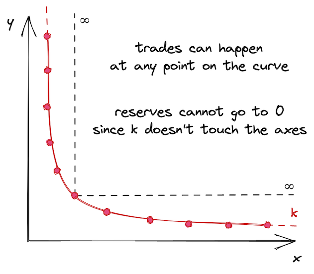
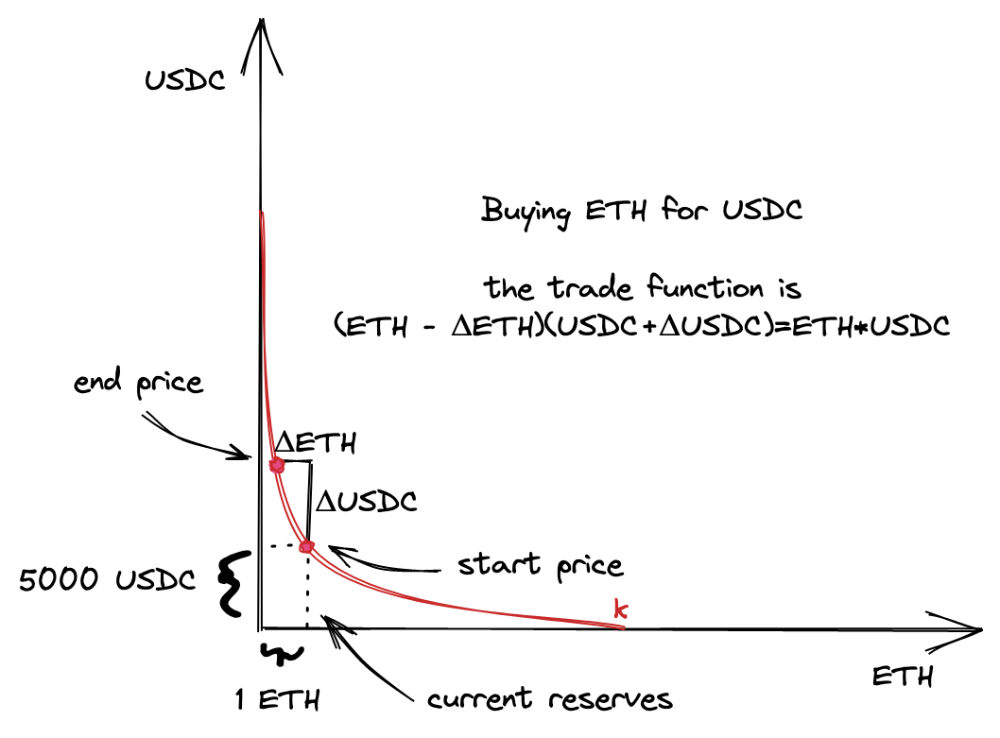
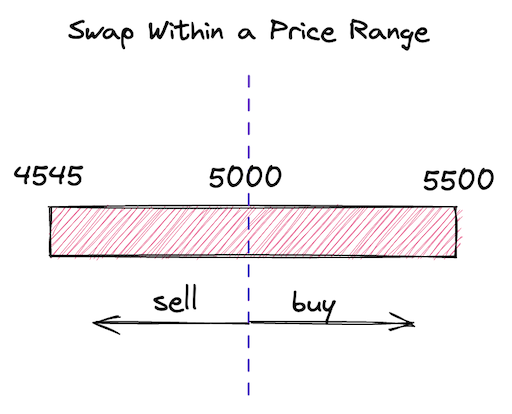
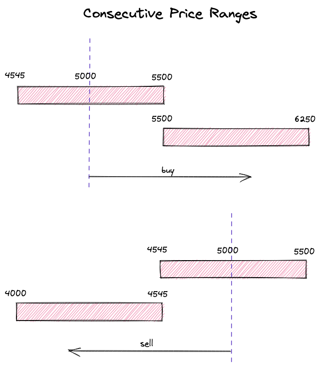
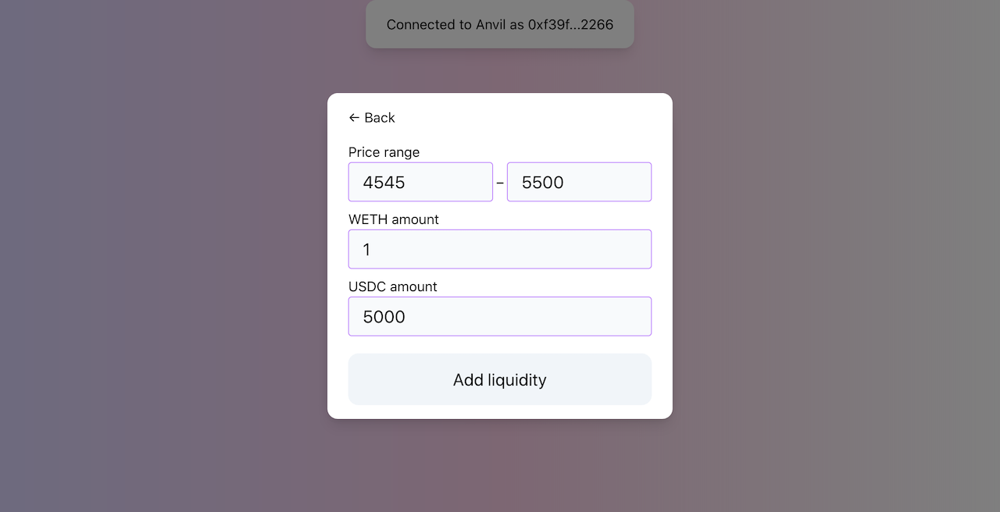
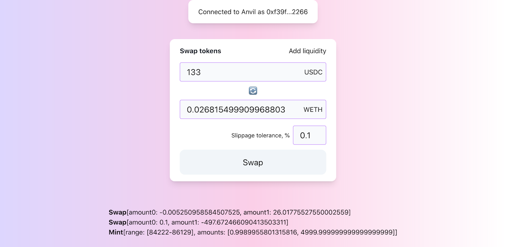

Uniswap V3 开发手册（中文版）
本书翻译自Uniswap V3 Development Book，非常感谢作者 Jeiwan 的辛勤工作。现将其翻译成中文，方便大家学习。希望在defi领域有更多的朋友加入，一起学习，一起进步。
由于本人水平有限，翻译校对难免有错误，欢迎大家指正。

欢迎来到去中心化金融和自动化做市商的世界，本书将成为您在这个神秘而有趣的世界中的向导，我们将一起构建当今去中心化金融中最有趣和最重要的应用之 一 Uniswap V3 !
本书将指导您完成去中心化应用的开发,包括:
本书不适合完全的初学者。
我希望您是一位有经验的开发者,曾用任何编程语言进行过编程。如果您了解Solidity的语法(本书的主要编程语言)那就更好了。如果不了解也没关系:在我们的旅程中,我们会学到很多关于Solidity和以太坊虚拟机的知识。
本书适合区块链初学者。
如果您只是听说过区块链并对其感兴趣，但还没有机会深入了解，那么这本书就是为您准备的！是的，就是为您！您将学习区块链(特别是以太坊)如何工作，如何编写和部署智能合约，以及如何在您的计算机上运行和测试它们。
好了,让我们开始吧!
有用的链接
- 本书英文版可在以下网址获取： https://uniswapv3book.com/
- 本书英文版托管在GitHub上： https://github.com/Jeiwan/uniswapv3-book
- 所有源代码托管在单独的仓库中： https://github.com/Jeiwan/uniswapv3-code
- 如果您认为可以帮助Uniswap，他们有一个资助计划。
- 如果您对DeFi和区块链感兴趣，在Twitter上关注作者。
有任何问题？
每个里程碑在GitHub讨论区都有自己的部分。如果书中有任何不清楚的地方,请随时提问！
完全初学者从哪里开始？
对于了解恒定函数做市商和Uniswap的人来说，这本书会很容易理解。但如果您是去中心化交易所的完全初学者，以下是我建议的开始方式：
- 阅读作者的Uniswap V1系列。它涵盖了Uniswap的基础知识，代码也更简单。如果您有一些Solidity经验，可以跳过代码部分，因为它非常基础。
- 阅读作者的Uniswap V2系列。作者在这里没有深入探讨数学和底层概念,因为它们在V1系列中已经涉及，但V2的代码值得熟悉——它有望教会您一种关于智能合约编程的不同的思维方式(这与我们通常编写程序的方式不同)。
如果数学对于您来讲是一个问题，可以考虑学习Khan Academy的代数1和代数2课程。Uniswap的数学并不难，但它需要基本的代数运算技能。
Uniswap资助计划

为了写这本书，作者获得了Uniswap Foundation的资助。没有这笔资助,作者可能就没有足够的动力和耐心深入研究Uniswap的最深层次并完成这本书。这笔资助也是本书开源和对任何人免费的主要原因。您可以了解更多关于Uniswap资助计划的信息(也许可以申请！)。
市场介绍
中心化交易所如何运作
在本书中，我们将构建一个在以太坊上运行的去中心化交易所（DEX）。交易所有多种设计模式。其中所有中心化交易所的核心都是一个订单簿。订单簿只是一个存储所有交易者想要进行的买卖订单的记录。其中的每个订单都包含订单必须执行的价格和必须买入或卖出的数量。

要进行交易，必须存在流动性，这简单来说就是市场上资产的可用性。如果你想买一个衣柜但没有人在卖，那就没有流动性。如果你想卖一个衣柜但没有人想买，那就有流动性但没有买家。如果没有流动性，就没有东西可以买卖。
在中心化交易所，订单簿是积累流动性的地方。如果有人下了卖单，他们就为市场提供了流动性。如果有人下了买单，他们期望市场有流动性，否则就无法进行交易。
当没有流动性但市场仍对交易感兴趣时，做市商就会出现。做市商是为市场提供流动性的公司或个人，也就是拥有大量资金并购买不同资产以在交易所出售的人。交易所会为这项工作支付做市商报酬。做市商通过为交易所提供流动性来赚钱。
去中心化交易所如何运作
别感到惊讶，去中心化交易所也需要流动性。它们也需要有人为各种资产的交易者提供流动性。然而，这个过程不能以中心化的方式处理。必须找到一个去中心化的解决方案，有多种去中心化的解决方案，其中一些实施方式不同。我们将重点关注Uniswap如何解决这个问题。
自动做市商
链上市场的演变带来了自动做市商（AMM）的概念。顾名思义，这种算法的工作方式与做市商完全相同，但是以自动化的方式。此外，它是去中心化和无需许可的，也就是说：
- 它不受单一实体管理；
- 所有资产不存储在一个地方；
- 任何人都可以从任何地方使用它。
什么是AMM？
AMM是一组定义如何管理流动性的智能合约。每个交易对（例如ETH/USDC）都是一个单独的合约，存储ETH和USDC，并且处理交易：交换ETH和USDC。
核心理念是pooling：每个合约都是一个存储流动性的pool，允许不同用户（包括其他智能合约）以无需许可的方式进行交易。有两种角色，流动性提供者 和 交易者，这些角色通过流动性池进行交互，他们与pool交互的方式是预先编程且不可变的。

这种方法与中心化交易所的不同之处在于，智能合约是完全自动化的，不受任何人管理。没有管理员、管理者、特权用户等。只有流动性提供者和交易者（他们可以是同一群人），所有算法都是预先编程、不可变且公开的。
现在让我们更仔细地看看Uniswap如何实现AMM。
请注意，在整本书中，我交替使用 pool 和 pair 这两个术语，因为Uniswap流动性池是两个代币的交易对。
如果您有任何问题，欢迎在此里程碑的GitHub讨论区中提出！
恒定函数做市商
本章重述了Uniswap V2的白皮书。理解这些数学原理对构建类似Uniswap的DEX至关重要，但如果你现在不能完全理解也不用担心。
正如我在上一节中提到的，构建AMM有不同的方法。我们将专注构建一种特定类型的AMM——恒定函数做市商。不要被这个长名字吓到！其核心是一个非常简单的数学公式：
就是这样，这就是AMM。
和是pool合约的储备金——它当前持有的代币数量。k是它们的乘积，实际值并不重要。
为什么只有两个储备金额，x和y？
每个Uniswap pool只能持有两种代币。我们使用x和y来指代一个pool的储备，其中x是第一种代币的数量，y是另一种代币的数量，顺序并不重要。
恒定函数公式表明：每次交易后，k必须保持不变。当交易者进行交易时，他们将一定数量的一种代币放入pool中（他们想要出售的代币），并从pool中取出一定数量的另一种代币（他们想要购买的代币）。这改变了pool的储备，而恒定函数公式要求储备的乘积不能改变。正如我们将在本书中多次看到的，这个简单的要求是Uniswap工作原理的核心算法。
交易函数
现在我们知道了什么是流动性池，让我们写出pool中交易发生的公式：
- 有一个流动性池，其中包含一定数量的代币0（）和一定数量的代币1（）
- 当我们用代币0购买代币1时，我们向pool中提供一定数量的代币0（）。
- pool给我们一定数量的代币1作为交换（）。
- pool还从我们提供的代币0数量中收取一小部分费用（）。
- 代币0的储备发生变化（），代币1的储备也发生变化（）。
- 更新后的储备的乘积仍然必须等于。
我们将使用代币0和代币1的表示法来表示这些代币，因为这是它们在代码中的引用方式。在这一点上，哪个是0哪个是1并不重要。
我们基本上是给pool一定数量的代币0，并获得一定数量的代币1。pool的工作是以公平的价格计算并给我们正确数量的代币1。这让我们得出以下结论：pool决定交易价格。
定价
我们如何计算pool中代币的价格？
由于Uniswap pool是独立的智能合约，pool中的代币是相对于彼此定价的。例如：在ETH/USDC pool中，ETH是以USDC定价的，USDC是以ETH定价的。如果1 ETH价值1000 USDC，那么1 USDC价值0.001 ETH。对于任何其他pool来说都是如此，无论是稳定币对还是非稳定币对（例如ETH/BTC）。
在现实世界中，一切都是基于供需法则定价的。这对AMM也同样适用。我们暂时把需求部分放在一边，专注于供给。
pool中代币的价格由代币的供给决定，也就是由pool持有的代币储备量决定。代币价格简单地是储备的比率：
其中和是以另一种代币为单位的代币价格。
这样的价格被称为现货价格，它们只反映当前的市场价格。然而，实际交易的价格是以不同方式计算的。这就是我们需要把需求部分带回来的地方。
从供需法则得出的结论是，高需求会增加价格——这是我们在无许可系统中需要的一个属性。我们希望当需求高时价格也高，我们可以使用pool储备来衡量需求：你想从pool中移除的代币越多（相对于pool的储备），需求的影响就越大。
让我们回到交易公式，仔细看看：
如你所见，我们可以从中推导出和，这意味着我们可以根据输入金额计算交易的输出金额，反之亦然：
事实上，这些公式使我们不必计算价格！我们总是可以使用公式找到输出金额（当我们想卖出已知数量的代币时），我们总是可以使用公式找到输入金额（当我们想买入已知数量的代币时）。注意，这些公式中的每一个都是储备的关系（或），它们还考虑了交易金额（前者中的和后者中的）。这些是同时考虑供给和需求的定价函数。而我们甚至不需要计算价格！
以下是如何从交易函数推导出上述公式： 以及：
曲线
上述计算可能看起来过于抽象和枯燥。让我们将恒定乘积函数可视化，以更好地理解它是如何工作的。
当绘制时，恒定乘积函数是一个二次双曲线：

其中轴是pool储备。每次交易都从曲线上对应于当前储备比率的点开始。为了计算输出金额，我们需要在曲线上找到一个新点，该点的坐标为，即代币0的当前储备+我们正在出售的金额。的变化就是我们将获得的代币1的数量。
让我们看一个具体的例子：

- 紫色线是曲线，轴是pool的储备（注意它们在起始价格时是相等的）。
- 起始价格是1。
- 我们正在出售200个代币0。如果我们只使用起始价格，我们期望得到200个代币1。
- 然而，执行价格是0.666，所以我们只得到133.333个代币1！
这个例子来自Desmos图表，由Uniswap的创造者之一Dan Robinson制作。为了更好地理解它是如何工作的，试着设想不同的场景并在图表上绘制它们。尝试不同的储备，看看当相对于很小时输出金额如何变化。
据传说，Uniswap是在Desmos中发明的。
我打赌你在想为什么要使用这样的曲线。它看起来像是在惩罚你进行大额交易。这是真的，而且这是一个理想的属性！供需法则告诉我们，当需求高（而供给恒定）时，价格也高。当需求低时，价格也较低。这就是市场的运作方式。而神奇的是，恒定乘积函数实现了这种机制！需求由你想要购买的数量定义，供给是pool储备。当你想要购买的数量相对于pool储备较大时，价格比你想要购买较小数量时更高。这么简单的公式保证了如此强大的机制！
尽管Uniswap不计算交易价格，我们仍然可以在曲线上看到它们。令人惊讶的是，在进行交易时有多个价格：
- 交易前，有一个现货价格。它等于储备的比率，或，取决于交易的方向。这个价格也是起始点切线的斜率。
- 交易后，在曲线上的另外一个点上有一个新的现货价格。它是这个新点切线的斜率。
- 交易的实际价格是连接这两点的线的斜率！
这就是Uniswap的全部数学！呼！
好吧，这是Uniswap V2的数学，而我们正在研究Uniswap V3。所以在下一部分，我们将看到Uniswap V3的数学有何不同。
Uniswap V3 简介
本章重述了 Uniswap V3 的白皮书。再次强调，如果你不理解所有概念也没关系。当这些概念转化为代码时，它们会变得更加清晰。
为了更好地理解 Uniswap V3 带来的创新，让我们首先看看 Uniswap V2 的不足之处。
Uniswap V2 是一个实现了单一 AMM 算法的通用交易所。然而，并非所有交易对都是平等的。交易对可以按价格波动性分组：
- 中等和高价格波动性的代币。这个组包括大多数代币，因为大多数代币的价格没有与某物挂钩，容易受到市场波动的影响。
- 低波动性的代币。这个组包括锚定代币，主要是稳定币：USDC/USDT、USDC/DAI、USDT/DAI 等。还包括：ETH/stETH、ETH/rETH（包装 ETH 的变体）。
这些组需要不同的、我们称之为池配置。主要区别在于，锚定代币需要高流动性来减少大额交易的需求效应（我们在上一章中了解到这一点）。无论我们想买卖多少代币，USDC 和 USDT 的价格必须保持接近 1。由于 Uniswap V2 的通用 AMM 算法不太适合稳定币交易，其他 AMM（主要是 Curve）在稳定币交易中更受欢迎。
造成这个问题的原因是 Uniswap V2 池中的流动性是无限分布的——pool流动性允许在任何价格下进行交易，从 0 到无穷大：

这可能看起来不是坏事，但这使得资本效率低下。资产的历史价格通常保持在某个定义的范围内，无论这个范围是窄还是宽。例如，ETH 的历史价格范围是从 4,800（根据 CoinMarketCap）。今天（2022 年 6 月，1 ETH 价值 5000 的价格购买 1 个以太币，所以在这个价格提供流动性是没有意义的。因此，在远离当前价格或永远不会达到的价格范围内提供流动性是没有意义的。
当然，我们都相信 ETH 有朝一日会达到
$10,000，但这是另一个故事了。
集中流动性
Uniswap V3引入了集中流动性：流动性提供者现在可以选择他们想要提供流动性的价格范围。这通过允许在狭窄的价格范围内投入更多流动性来提高资本效率，使Uniswap变得更加多样化：它现在可以为具有不同波动性的交易对配置池。这就是V3如何改进V2的方式。
简而言之，一个Uniswap V3交易对就是许多小的Uniswap V2交易对。V2和V3之间的主要区别在于，在V3中，一个交易对中有多个价格范围。而且这些较短的价格范围每个都有有限的储备。整个从0到无穷的价格范围被分割成较短的价格范围，每个范围都有自己的流动性数量。但是，关键是在那个较短的价格范围内，它的工作方式与Uniswap V2完全相同。这就是为什么我说V3交易对是许多小的V2交易对。
现在，让我们试着将其可视化。我们不希望曲线是无限的，所以在点 a 和 b 处切断它，并将其作为曲线的边界。此外，我们移动曲线使边界落在坐标轴上。这就是我们得到的结果：

看起来有点孤单，不是吗？这就是为什么Uniswap V3中有许多价格范围——这样它们就不会感到孤单了🙂
正如我们在上一章看到的，买入或卖出代币会使价格沿曲线移动。价格范围限制了价格的移动。当价格移动到任一点时，池子变得耗尽：其中一种代币的储备将为0，买入这种代币将不再可能。
在上面的图表中，假设起始价格在曲线的中间。要到达点，我们需要买入所有可用的并在范围内最大化；要到达点，我们需要买入所有可用的并在范围内最大化。在这些点上，范围内只有一种代币！
有趣的事实：这允许使用Uniswap V3价格范围作为限价订单！
当当前价格范围在交易过程中耗尽时会发生什么？价格会滑入下一个价格范围。如果下一个价格范围不存在，交易最终会部分完成——我们将在本书后面看到这是如何工作的。
这就是生产环境中的USDC/ETH池中流动性的分布情况：

你可以看到，在当前价格附近有大量流动性，但离它越远流动性就越少——这是因为流动性提供者努力提高他们的资本效率。此外，整个范围并非无限，其上限在图中显示。
Uniswap V3 的数学原理
从数学角度来看，Uniswap V3 是基于 V2 的：它使用相同的公式，但这些公式被...我们称之为增强了。
为了处理价格范围之间的转换、简化流动性管理并避免舍入误差，Uniswap V3 使用了这些新概念：
是流动性数量。池中的流动性是代币储备的组合（即两个数字）。我们知道它们的乘积是 ，我们可以用这个来推导流动性的度量，即 ——一个与自身相乘等于 的数。 是 和 的几何平均数。
是以代币 1 表示的代币 0 的价格。由于池中代币价格是彼此的倒数，我们可以在计算中只使用其中一个（按惯例，Uniswap V3 使用 ）。以代币 0 表示的代币 1 的价格简单地是 。同样，。
为什么使用 而不是 ？有两个原因：
-
平方根计算不精确并会导致舍入误差。因此，在合约中存储平方根而不进行计算更容易（我们不会在合约中存储 和 ）。
-
与 有一个有趣的联系： 也是输出量变化与 变化之间的关系。
证明：
定价
再次强调，我们不需要计算实际价格——我们可以直接计算输出量。此外，由于我们不打算跟踪和存储 和 ，我们的计算将仅基于 和 。
从上面的公式中，我们可以找到 ：
见上面证明的第三步。
如我们之前讨论的，池中的价格是彼此的倒数。因此， 是：
和 使我们不需要存储和更新池储备。此外，我们不需要每次都计算 ，因为我们总是可以找到 及其倒数。
Ticks
正如我们在本章中了解到的，V2 的无限价格范围在 V3 中被分割成较短的价格范围。这些较短的价格范围中的每一个都由边界限制——上限和下限。为了跟踪这些边界的坐标，Uniswap V3 使用了 ticks。

在 V3 中，整个价格范围由均匀分布的离散 ticks 划分。每个 tick 都有一个索引，对应于某个特定价格：
其中 是 tick 处的价格。取 1.0001 的幂具有一个理想的特性：两个相邻 ticks 之间的差异是 0.01% 或 1 个基点。
基点（1% 的 1/100，或 0.01%，或 0.0001）是金融领域中百分比的度量单位。你可能在中央银行宣布利率变化时听说过基点。
如我们之前讨论的，Uniswap V3 存储 ，而不是 。因此，公式实际上是：
所以，我们得到的值如：，，。
Ticks 是可以为正也可以为负的整数，当然，它们不是无限的。Uniswap V3 将 存储为 Q64.96 定点数，这是一个有理数，使用 64 位表示整数部分，96 位表示小数部分。因此，价格（等于 的平方）在范围 内。而 ticks 在以下范围内：
要深入了解 Uniswap V3 的数学原理，我强烈推荐 Atis Elsts 的 这份技术说明。
开发环境
我们将构建两个应用程序：
- 一个链上应用：部署在以太坊上的一组智能合约。
- 一个链下应用：与智能合约交互的前端应用程序。
虽然前端应用程序的开发是本书的一部分，但它不会是我们的主要焦点。我们构建它仅仅是为了演示如何将智能合约与前端应用程序集成。因此，前端应用程序是可选的，但我仍会提供代码。
以太坊简介
以太坊是一个允许任何人在其上运行应用程序的区块链。它可能看起来像一个云服务提供商，但有几个不同之处：
- 你不需要为托管应用程序付费，但你需要为部署付费。
- 你的应用程序是不可变的。也就是说：部署后你将无法修改它。
- 用户将为使用你的应用程序付费。
为了更好地理解这些要点，让我们看看以太坊由什么组成。
以太坊（和任何其他区块链）的核心是一个数据库。以太坊数据库中最有价值的数据是账户状态。账户是一个以太坊地址，与之相关的数据包括：
- 余额：账户的以太币余额。
- 代码：部署在此地址的智能合约的字节码。
- 存储：智能合约用来存储数据的空间。
- Nonce：用于防止重放攻击的序列整数。
以太坊的主要工作是以安全的方式构建和维护这些数据，不允许未经授权的访问。
以太坊也是一个网络，一个独立构建和维护状态的计算机网络。网络的主要目标是去中心化数据库访问：不能有单一权威可以单方面修改数据库中的任何内容。这是通过共识实现的，共识是网络中所有节点遵循的一组规则。如果一方决定滥用规则，它将被排除在网络之外。
有趣的事实：区块链可以使用 MySQL！除了性能之外，没有什么能阻止这一点。而以太坊使用 LevelDB，一个快速的键值数据库。
每个以太坊节点还运行 EVM，即以太坊虚拟机。虚拟机是一个可以运行其他程序的程序，而 EVM 是一个执行智能合约的程序。用户通过交易与合约交互：除了简单地发送以太币外，交易还可以包含智能合约调用数据。它包括：
- 编码的合约函数名。
- 函数参数。
交易被打包成区块，然后由矿工挖掘区块。网络中的每个参与者都可以验证任何交易和任何区块。
从某种意义上说，智能合约类似于 JSON API，但你调用的是智能合约函数而不是端点，并提供函数参数。与 API 后端类似，智能合约执行编程逻辑，可以选择修改智能合约存储。与 JSON API 不同，你需要发送交易来改变区块链状态，并且你需要为发送的每个交易付费。
最后，以太坊节点暴露了一个 JSON-RPC API。通过这个 API，我们可以与节点交互：获取账户余额、估算 gas 成本、获取区块和交易、发送交易，以及执行合约调用而不发送交易（这用于从智能合约读取数据）。这里你可以找到可用端点的完整列表。
交易也是通过 JSON-RPC API 发送的，参见 eth_sendTransaction。
本地开发环境
目前使用的智能合约开发环境有多种：
Truffle 是三者中最古老的，也是最不受欢迎的。Hardhat 是它改进后的后代，是最广泛使用的工具。Foundry 是新秀，它对测试提供了不同的视角。
虽然 HardHat 仍然是一个流行的解决方案，但越来越多的项目正在转向 Foundry。这有多个原因：
- 使用 Foundry，我们可以用 Solidity 编写测试。这更加方便，因为在开发过程中我们不需要在 JavaScript（Truffle 和 HardHat 使用 JS 进行测试和自动化）和 Solidity 之间切换。用 Solidity 编写测试更加方便，因为你拥有所有的原生功能（例如，你不需要为大数使用特殊类型，也不需要在字符串和 BigNumber 之间转换）。
- Foundry 在测试期间不运行节点。这使得测试和迭代功能更快！Truffle 和 HardHat 在运行测试时都会启动一个节点；Foundry 在内部 EVM 上执行测试。
考虑到这些因素，我们将使用 Foundry 作为我们主要的智能合约开发和测试工具。
Foundry
Foundry 是一套用于以太坊应用程序开发的工具。具体来说，我们将使用：
- Forge，一个 Solidity 测试框架。
- Anvil，一个为与 Forge 开发而设计的本地以太坊节点。我们将使用它来将我们的合约部署到本地节点，并通过前端应用程序连接到它。
- Cast，一个具有大量有用功能的 CLI 工具。
Forge 让智能合约开发者的生活变得更加轻松。使用 Forge，我们不需要运行本地节点来测试合约。相反，Forge 在其内部 EVM 上运行测试，这更快，不需要发送交易和挖掘区块。
Forge 让我们可以用 Solidity 编写测试！Forge 还使模拟区块链状态变得更容易：我们可以轻松地伪造我们的以太币或代币余额，从其他地址执行合约，在任何地址部署任何合约等。
然而，我们仍然需要一个本地节点来部署我们的合约。为此，我们将使用 Anvil。前端应用程序使用 JavaScript Web3 库与以太坊节点交互（发送交易、查询状态、估算交易 gas 成本等）——这就是为什么我们需要运行一个本地节点。
Ethers.js
Ethers.js 是一套用 JavaScript 编写的以太坊实用工具。这是去中心化应用程序开发中使用的两个最流行的 JavaScript 库之一（另一个是 web3.js）。这些库允许我们通过 JSON-API 与以太坊节点交互，并提供多个实用函数，使开发者的生活更轻松。
MetaMask
MetaMask 是你浏览器中的以太坊钱包。它是一个浏览器扩展，可以创建和安全存储私钥。MetaMask 是数百万用户使用的主要以太坊钱包应用程序。我们将使用它来签署我们将发送到本地节点的交易。
React
React 是一个著名的用于构建前端应用程序的 JavaScript 库。你不需要了解 React，我会提供一个模板应用程序。
设置项目
要设置项目，创建一个新文件夹并在其中运行 forge init：
$ mkdir uniswapv3clone
$ cd uniswapv3clone
$ forge init
如果你使用的是 Visual Studio Code，在 forge init 中添加
--vscode标志：forge init --vscode。Forge 将使用 VSCode 特定的设置初始化项目。
Forge 将在 src、test 和 script 文件夹中创建示例合约——这些可以删除。
要设置前端应用程序：
$ npx create-react-app ui
它位于一个子文件夹中，这样就不会与文件夹名称发生冲突。
我们将构建什么
本书的目标是构建一个 Uniswap V3 的克隆版。然而，我们不会构建一个完全相同的副本。主要原因是 Uniswap 是一个包含许多细节和辅助机制的大型项目——详细解释所有这些内容会使本书内容过于庞大，并使读者更难完成阅读。相反，我们将构建 Uniswap 的核心，即其最困难和最重要的机制。这包括流动性管理、交换、费用、外围合约、报价合约和 NFT 合约。之后，我相信你将能够阅读 Uniswap V3 的源代码，并理解本书范围之外的所有机制。
智能合约
完成本书后，你将实现以下合约：
UniswapV3Pool——实现流动性管理和交换的核心池合约。这个合约非常接近原始合约，但是一些实现细节不同，为了简化也省略了一些内容。例如，我们的实现将只处理"精确输入"交换，即已知输入金额的交换。原始实现还支持已知输出金额的交换（即当你想购买特定数量的代币时）。UniswapV3Factory——部署新池并保存所有已部署池记录的注册合约。除了更改所有者和费用的能力外，这个合约与原始合约基本相同。UniswapV3Manager——一个使与池合约交互更容易的外围合约。这是SwapRouter的一个非常简化的实现。同样，如你所见，我不区分"精确输入"和"精确输出"交换，只实现前者。UniswapV3Quoter是一个很酷的合约，允许在链上计算交换价格。这是 Quoter 和 QuoterV2 的最小化复制版。再次强调，只支持"精确输入"交换。UniswapV3NFTManager允许将流动性头寸转换为 NFT。这是 NonfungiblePositionManager 的简化实现。
前端应用程序
对于本书，我还构建了一个简化版的 Uniswap UI 克隆。这是一个非常简单的克隆版，而且我的 React 和前端技能非常有限，但它展示了前端应用程序如何使用 Ethers.js 和 MetaMask 与智能合约交互。
介绍
在这个里程碑中，我们将构建一个池子合约，它可以从用户那里接收流动性，并在一个价格范围内进行交换。为了尽可能保持简单，我们将只在一个价格范围内提供流动性，并且只允许在一个方向上进行交换。此外，我们将手动计算所有必需的数学计算，以在开始使用 Solidity 中的数学库之前获得更好的直觉。
让我们模拟我们将要构建的情况：
-
将会有一个 ETH/USDC 池子合约。ETH 将是 \(x\) 储备，USDC 将是 \(y\) 储备。
-
我们将把当前价格设置为 1 ETH 兑换 5000 USDC。
-
我们将提供流动性的范围是 1 ETH 兑换 4545-5500 USDC。
-
我们将从池子中购买一些 ETH。在这一点上，由于我们只有一个价格范围，我们希望交易的价格保持在价格范围内。
视觉上，这个模型看起来像这样：

在开始编码之前，让我们弄清楚数学并计算模型的所有参数。为了保持简单，我将在 Python 中进行数学计算，然后再在 Solidity 中实现它们。这将允许我们专注于数学，而不用深入研究 Solidity 中的数学细节。这也意味着，在智能合约中，我们将硬编码所有的金额。这将允许我们从一个简单的最小可行产品开始。
为了方便起见，我把所有的 Python 计算放在了 unimath.py 中。
你可以在 这个 Github 分支 中找到这个里程碑的完整代码。
如果你有任何问题，欢迎在 这个里程碑的 GitHub 讨论 中提出！
计算流动性
没有流动性就无法进行交易，为了进行我们的第一次交换，我们需要向池合约中注入一些流动性。以下是我们需要知道的向池合约添加流动性的信息：
-
价格范围。作为流动性提供者，我们希望在特定的价格范围内提供流动性，它只会在这个范围内使用。
-
流动性数量，即两种代币的数量。我们需要将这些数量的代币转移到池合约中。
在这里，我们将手动计算这些，但在后面的章节中，合约将为我们完成这项工作。让我们从价格范围开始。
价格范围计算
回想一下，在Uniswap V3中，整个价格范围被划分为刻度：每个刻度对应一个价格并有一个索引。在我们的第一个池实现中，我们将以每1 ETH 5000美元的价格用USDC购买ETH。购买ETH将从池中移除一定数量的ETH，并将价格略微推高到5000美元以上。我们希望在包含这个价格的范围内提供流动性。并且我们希望确保最终价格保持在这个范围内（我们将在后面的里程碑中进行多范围交换）。
我们需要找到三个刻度：
-
当前刻度将对应当前价格（1 ETH = 5000 USDC）。
-
我们提供流动性的价格范围的上下界。让下限价格为4545美元，上限价格为5500美元。
从理论介绍中，我们知道：
由于我们同意使用ETH作为储备，USDC作为储备，每个刻度的价格为：
其中是当前价格，是范围的下限，是范围的上限。
现在，我们可以找到对应的刻度。我们知道价格和刻度通过以下公式相连：
因此，我们可以通过以下方式找到刻度：
这个公式中的平方根相互抵消，但由于我们使用工作，我们需要保留它们。
让我们找到这些刻度：
-
当前刻度：
-
下限刻度：
-
上限刻度：
为了计算这些，我使用了Python：
import math def price_to_tick(p): return math.floor(math.log(p, 1.0001)) price_to_tick(5000) > 85176
这就是价格范围计算的全部内容！
这里需要注意的最后一点是，Uniswap使用Q64.96数字来存储。这是一个定点数，整数部分有64位，小数部分有96位。在我们上面的计算中，价格是浮点数：70.71、67.42和74.16。我们需要将它们转换为Q64.96。幸运的是，这很简单：我们需要将这些数字乘以（Q数是二进制定点数，所以我们需要将我们的小数乘以Q64.96的基数，即）。我们将得到：
在Python中：
q96 = 2**96 def price_to_sqrtp(p): return int(math.sqrt(p) * q96) price_to_sqrtp(5000) > 5602277097478614198912276234240
注意我们在转换为整数之前进行乘法。否则，我们将失去精度。
代币数量计算
下一步是决定我们想要存入池中的代币数量。答案是我们想要多少就多少。这些数量并没有严格定义，我们可以存入足够的数量，以便在不使当前价格离开我们投入流动性的价格范围的情况下购买少量ETH。在开发和测试过程中，我们将能够铸造任何数量的代币，所以获得我们想要的数量不是问题。
对于我们的第一次交换，让我们存入1 ETH和5000 USDC。
请记住，当前池储备的比例表示当前现货价格。因此，如果我们想向池中投入更多代币并保持相同的价格，数量必须成比例，例如：2 ETH和10,000 USDC；10 ETH和50,000 USDC等。
流动性数量计算
接下来，我们需要根据我们将存入的数量计算。这是一个棘手的部分，所以请仔细听！
从理论介绍中，你记得：
然而，这个公式是针对无限曲线的🙂 但我们想要将流动性投入到有限的价格范围内，这只是那个无限曲线的一个片段。我们需要专门为我们要存入流动性的价格范围计算。我们需要一些更高级的计算。
为了计算价格范围的，让我们看一个我们之前讨论过的有趣事实：价格范围可能会耗尽。可以从价格范围中买走一种代币的全部数量，使池中只剩下另一种代币。

在点和，范围内只有一种代币：在点处是ETH，在点处是USDC。
也就是说，我们想找到一个，使价格能够移动到任一点。我们希望有足够的流动性让价格达到价格范围的任一边界。因此，我们希望基于和的最大数量来计算。
现在，让我们看看边缘处的价格是多少。当从池中买入ETH时，价格上涨；当买入USDC时，价格下跌。回想一下，价格是。所以，在点，价格是范围内的最低点；在点，价格是最高点。
实际上，在这些点上价格并没有定义，因为池中只有一种储备，但我们需要理解的是，点附近的价格高于起始价格，而点处的价格低于起始价格。
现在，将上图中的曲线分成两段：一段在起始点的左侧，一段在起始点的右侧。我们将计算两个，每段一个。为什么？因为池中的两种代币各自贡献了其中一段：左段完全由代币组成，右段完全由代币组成。这源于在交换过程中，价格向任一方向移动的事实：它要么上涨，要么下跌。为了使价格移动，只需要其中一种代币：
-
当价格上涨时，只需要代币进行交换（我们正在买入代币，所以我们只想从池中取出代币）；
-
当价格下跌时，只需要代币进行交换。
因此，当前价格左侧曲线段的流动性仅由代币组成，并且仅根据提供的代币数量计算。同样，当前价格右侧曲线段的流动性仅由代币组成，并且仅根据提供的代币数量计算。

这就是为什么在提供流动性时，我们计算两个并选择其中一个。选择哪一个？较小的那个。为什么？因为较大的那个已经包含了较小的那个！我们希望新的流动性均匀分布在曲线上，因此我们希望在当前价格的左右两侧添加相同的。如果我们选择较大的那个，用户需要提供更多的流动性来补偿较小的那个的不足。当然，这是可行的，但这会使智能合约变得更复杂。
较大的的剩余部分会怎样？嗯，什么都不会发生。在选择较小的之后，我们可以简单地将其转换为导致较大的代币的较小数量——这将调整它。之后，我们将得到能产生相同的代币数量。
这里我需要你注意的最后一个细节是：新的流动性不能改变当前价格。也就是说，它必须与当前储备的比例成比例。这就是为什么两个可能不同——当比例没有保持时。我们选择较小的来重新建立比例。
我希望在我们用代码实现这个之后，这会更有意义！现在，让我们看看公式。
让我们回顾一下和是如何计算的：
我们可以通过用实际价格替换delta P来扩展这些公式（我们从上面知道它们）：
是点处的价格，是点处的价格，是当前价格（见上图）。注意，由于价格计算为（即它是以表示的的价格），点处的价格高于当前价格和点处的价格。点处的价格是三者中最低的。
让我们从第一个公式中找到：
从第二个公式：
所以，这就是我们的两个，每个段一个：
现在，让我们将我们之前计算的价格代入它们：
转换为Q64.96后，我们得到：
对于另一个：
在这两个中，我们将选择较小的那个。
在Python中：
sqrtp_low = price_to_sqrtp(4545) sqrtp_cur = price_to_sqrtp(5000) sqrtp_upp = price_to_sqrtp(5500) def liquidity0(amount, pa, pb): if pa > pb: pa, pb = pb, pa return (amount * (pa * pb) / q96) / (pb - pa) def liquidity1(amount, pa, pb): if pa > pb: pa, pb = pb, pa return amount * q96 / (pb - pa) eth = 10**18 amount_eth = 1 * eth amount_usdc = 5000 * eth liq0 = liquidity0(amount_eth, sqrtp_cur, sqrtp_upp) liq1 = liquidity1(amount_usdc, sqrtp_cur, sqrtp_low) liq = int(min(liq0, liq1)) > 1517882343751509868544
再次计算代币数量
由于我们选择了要存入的数量，这些数量可能是错误的。我们不能在任何价格范围内存入任何数量；流动性数量需要均匀分布在我们存入的价格范围的曲线上。因此，即使用户选择了数量，合约也需要重新计算它们，实际数量会略有不同（至少是因为四舍五入）。
幸运的是，我们已经知道公式：
在Python中：
def calc_amount0(liq, pa, pb): if pa > pb: pa, pb = pb, pa return int(liq * q96 * (pb - pa) / pa / pb) def calc_amount1(liq, pa, pb): if pa > pb: pa, pb = pb, pa return int(liq * (pb - pa) / q96) amount0 = calc_amount0(liq, sqrtp_upp, sqrtp_cur) amount1 = calc_amount1(liq, sqrtp_low, sqrtp_cur) (amount0, amount1) > (998976618347425408, 5000000000000000000000)
如你所见，这些数字接近我们想要提供的数量，但ETH略小。
提示：使用
cast --from-wei AMOUNT将wei转换为ether，例如：cast --from-wei 998976618347425280将给你0.998976618347425280。
提供流动性
理论已经够多了，让我们开始编码吧！
创建一个新文件夹（我的叫做 uniswapv3-code），然后在其中运行 forge init --vscode —— 这将初始化一个 Forge 项目。--vscode 标志告诉 Forge 为 Forge 项目配置 Solidity 扩展。
接下来，删除默认的合约及其测试：
script/Contract.s.solsrc/Contract.soltest/Contract.t.sol
就是这样！让我们创建我们的第一个合约！
池子合约
正如你在介绍中了解到的，Uniswap 部署了多个池子合约，每个合约都是一对代币的交换市场。Uniswap 将其所有合约分为两类：
- 核心合约，
- 和外围合约。
核心合约，顾名思义，是实现核心逻辑的合约。这些是最小的、用户不友好的、低级别的合约。它们的目的是做一件事，并尽可能可靠和安全地做到这一点。在 Uniswap V3 中，有 2 个这样的合约：
- 池子合约，实现去中心化交易所的核心逻辑。
- 工厂合约，作为池子合约的注册表，并使池子的部署更容易。
我们将从池子合约开始，它实现了 Uniswap 99% 的核心功能。
创建 src/UniswapV3Pool.sol：
pragma solidity ^0.8.14;
contract UniswapV3Pool {}
让我们思考一下合约将存储哪些数据：
由于每个池子合约都是两个代币的交换市场，我们需要跟踪这两个代币地址。这些地址将是静态的，在池子部署期间一次性设置（因此，它们将是不可变的）。
每个池子合约都是一组流动性头寸。我们将它们存储在一个映射中，其中键是唯一的头寸标识符，值是存储头寸信息的结构体。
每个池子合约还需要维护一个 tick 注册表 —— 这将是一个映射，其中键是 tick 索引，值是存储 tick 信息的结构体。
由于 tick 范围是有限的，我们需要在合约中将限制存储为常量。
回想一下，池子合约存储流动性数量 。所以我们需要为它设置一个变量。
最后，我们需要跟踪当前价格和相关的 tick。我们将它们存储在一个存储槽中以优化 gas 消耗：这些变量经常一起读取和写入，所以利用 Solidity 的状态变量打包特性 是有意义的。
总的来说，这是我们开始的内容：
// src/lib/Tick.sol
library Tick {
struct Info {
bool initialized;
uint128 liquidity;
}
...
}
// src/lib/Position.sol
library Position {
struct Info {
uint128 liquidity;
}
...
}
// src/UniswapV3Pool.sol
contract UniswapV3Pool {
using Tick for mapping(int24 => Tick.Info);
using Position for mapping(bytes32 => Position.Info);
using Position for Position.Info;
int24 internal constant MIN_TICK = -887272;
int24 internal constant MAX_TICK = -MIN_TICK;
// 池子代币，不可变
address public immutable token0;
address public immutable token1;
// 打包一起读取的变量
struct Slot0 {
// 当前 sqrt(P)
uint160 sqrtPriceX96;
// 当前 tick
int24 tick;
}
Slot0 public slot0;
// 流动性数量，L。
uint128 public liquidity;
// Ticks 信息
mapping(int24 => Tick.Info) public ticks;
// 头寸信息
mapping(bytes32 => Position.Info) public positions;
...
Uniswap V3 使用了许多辅助合约，Tick 和 Position 是其中的两个。using A for B 是 Solidity 的一个特性，它允许你用库合约 A 中的函数扩展类型 B。这简化了复杂数据结构的管理。
为了简洁，我将省略对 Solidity 语法和特性的详细解释。Solidity 有 很好的文档，如果有不清楚的地方，不要犹豫查阅它！
然后我们将在构造函数中初始化一些变量：
constructor(
address token0_,
address token1_,
uint160 sqrtPriceX96,
int24 tick
) {
token0 = token0_;
token1 = token1_;
slot0 = Slot0({sqrtPriceX96: sqrtPriceX96, tick: tick});
}
}
在这里，我们设置了代币地址不可变量，并设置了当前价格和 tick —— 我们不需要为后者提供流动性。
这是我们的起点，我们在本章的目标是使用预先计算和硬编码的值进行我们的第一次交换。
铸造
在 Uniswap V2 中，提供流动性的过程被称为铸造。原因是 V2 池子合约会铸造代币（LP-代币）以换取流动性。V3 不这样做，但它仍然使用相同的名称来命名函数。让我们也使用它：
function mint(
address owner,
int24 lowerTick,
int24 upperTick,
uint128 amount
) external returns (uint256 amount0, uint256 amount1) {
...
我们的 mint 函数将接受：
所有者地址，用于跟踪流动性的所有者。 上限和下限 tick，用于设置价格范围的边界。 我们想要提供的流动性数量。 注意，用户指定的是 ，而不是实际的代币数量。这当然不是很方便，但请记住，Pool 合约是一个核心合约——它不打算对用户友好，因为它应该只实现核心逻辑。在后面的章节中，我们将制作一个辅助合约，在调用 Pool.mint 之前将代币数量转换为 。
让我们简要概述一下铸造的工作方式：
用户指定一个价格范围和流动性数量； 合约更新 ticks 和 positions 映射； 合约计算用户必须发送的代币数量（我们将预先计算并硬编码它们）； 合约从用户那里获取代币并验证是否设置了正确的数量。 让我们从检查 ticks 开始：
if (
lowerTick >= upperTick ||
lowerTick < MIN_TICK ||
upperTick > MAX_TICK
) revert InvalidTickRange();
并确保提供了一些流动性数量：
if (amount == 0) revert ZeroLiquidity();
然后，添加一个 tick 和一个头寸：
ticks.update(lowerTick, amount);
ticks.update(upperTick, amount);
Position.Info storage position = positions.get(
owner,
lowerTick,
upperTick
);
position.update(amount);
ticks.update 函数是：
// src/lib/Tick.sol
function update(
mapping(int24 => Tick.Info) storage self,
int24 tick,
uint128 liquidityDelta
) internal {
Tick.Info storage tickInfo = self[tick];
uint128 liquidityBefore = tickInfo.liquidity;
uint128 liquidityAfter = liquidityBefore + liquidityDelta;
if (liquidityBefore == 0) {
tickInfo.initialized = true;
}
tickInfo.liquidity = liquidityAfter;
}
如果 tick 的流动性为 0，它会初始化该 tick，并向其添加新的流动性。如你所见，我们在上下限 tick 上都调用了这个函数，因此流动性被添加到两者中。
position.update 函数是：
// src/libs/Position.sol
function update(Info storage self, uint128 liquidityDelta) internal {
uint128 liquidityBefore = self.liquidity;
uint128 liquidityAfter = liquidityBefore + liquidityDelta;
self.liquidity = liquidityAfter;
}
类似于 tick 更新函数，它向特定头寸添加流动性。要获取头寸，我们调用：
// src/libs/Position.sol
...
function get(
mapping(bytes32 => Info) storage self,
address owner,
int24 lowerTick,
int24 upperTick
) internal view returns (Position.Info storage position) {
position = self[
keccak256(abi.encodePacked(owner, lowerTick, upperTick))
];
}
...
每个头寸都由三个键唯一标识：所有者地址、下限 tick 索引和上限 tick 索引。我们对这三个进行哈希处理以使数据存储更便宜：当哈希处理后，每个键将占用 32 字节，而不是当 owner、lowerTick 和 upperTick 是单独的键时占用 96 字节。
如果我们使用三个键，我们需要三个映射。每个键将单独存储，并且会占用 32 字节，因为 Solidity 将值存储在 32 字节的槽中（当不应用打包时）。
接下来，继续铸造，我们需要计算用户必须存入的数量。幸运的是，我们已经在前面的部分中弄清楚了公式并计算了确切的数量。所以，我们将硬编码它们：
amount0 = 0.998976618347425280 ether;
amount1 = 5000 ether;
我们将在后面的章节中用实际计算替换这些。
我们还将根据添加的 amount 更新池子的 liquidity。
liquidity += uint128(amount);
铸造
在 Uniswap V2 中，提供流动性的过程被称为铸造。原因是 V2 池子合约会铸造代币（LP-代币）以换取流动性。V3 不这样做，但它仍然使用相同的名称来命名函数。让我们也使用它：
function mint(
address owner,
int24 lowerTick,
int24 upperTick,
uint128 amount
) external returns (uint256 amount0, uint256 amount1) {
...
我们的 mint 函数将接受：
所有者地址，用于跟踪流动性的所有者。 上限和下限 tick，用于设置价格范围的边界。 我们想要提供的流动性数量。 注意，用户指定的是 ，而不是实际的代币数量。这当然不是很方便，但请记住，Pool 合约是一个核心合约——它不打算对用户友好，因为它应该只实现核心逻辑。在后面的章节中，我们将制作一个辅助合约，在调用 Pool.mint 之前将代币数量转换为 。
让我们简要概述一下铸造的工作方式：
用户指定一个价格范围和流动性数量； 合约更新 ticks 和 positions 映射； 合约计算用户必须发送的代币数量（我们将预先计算并硬编码它们）； 合约从用户那里获取代币并验证是否设置了正确的数量。 让我们从检查 ticks 开始：
if (
lowerTick >= upperTick ||
lowerTick < MIN_TICK ||
upperTick > MAX_TICK
) revert InvalidTickRange();
并确保提供了一些流动性数量：
if (amount == 0) revert ZeroLiquidity();
然后，添加一个 tick 和一个头寸：
ticks.update(lowerTick, amount);
ticks.update(upperTick, amount);
Position.Info storage position = positions.get(
owner,
lowerTick,
upperTick
);
position.update(amount);
ticks.update 函数是：
// src/lib/Tick.sol
function update(
mapping(int24 => Tick.Info) storage self,
int24 tick,
uint128 liquidityDelta
) internal {
Tick.Info storage tickInfo = self[tick];
uint128 liquidityBefore = tickInfo.liquidity;
uint128 liquidityAfter = liquidityBefore + liquidityDelta;
if (liquidityBefore == 0) {
tickInfo.initialized = true;
}
tickInfo.liquidity = liquidityAfter;
}
如果 tick 的流动性为 0，它会初始化该 tick，并向其添加新的流动性。如你所见，我们在上下限 tick 上都调用了这个函数，因此流动性被添加到两者中。
position.update 函数是：
// src/libs/Position.sol
function update(Info storage self, uint128 liquidityDelta) internal {
uint128 liquidityBefore = self.liquidity;
uint128 liquidityAfter = liquidityBefore + liquidityDelta;
self.liquidity = liquidityAfter;
}
类似于 tick 更新函数，它向特定头寸添加流动性。要获取头寸，我们调用：
// src/libs/Position.sol
...
function get(
mapping(bytes32 => Info) storage self,
address owner,
int24 lowerTick,
int24 upperTick
) internal view returns (Position.Info storage position) {
position = self[
keccak256(abi.encodePacked(owner, lowerTick, upperTick))
];
}
...
每个头寸都由三个键唯一标识：所有者地址、下限 tick 索引和上限 tick 索引。我们对这三个进行哈希处理以使数据存储更便宜：当哈希处理后，每个键将占用 32 字节，而不是当 owner、lowerTick 和 upperTick 是单独的键时占用 96 字节。
如果我们使用三个键，我们需要三个映射。每个键将单独存储，并且会占用 32 字节，因为 Solidity 将值存储在 32 字节的槽中（当不应用打包时）。
接下来，继续铸造，我们需要计算用户必须存入的数量。幸运的是，我们已经在前面的部分中弄清楚了公式并计算了确确切的数量。所以，我们将硬编码它们：
amount0 = 0.998976618347425280 ether;
amount1 = 5000 ether;
我们将在后面的章节中用实际计算替换这些。
我们还将根据添加的 amount 更新池子的 liquidity。
liquidity += uint128(amount);
现在，我们准备从用户那里获取代币。这是通过回调完成的：
function mint(...) ... {
...
uint256 balance0Before;
uint256 balance1Before;
if (amount0 > 0) balance0Before = balance0();
if (amount1 > 0) balance1Before = balance1();
IUniswapV3MintCallback(msg.sender).uniswapV3MintCallback(
amount0,
amount1
);
if (amount0 > 0 && balance0Before + amount0 > balance0())
revert InsufficientInputAmount();
if (amount1 > 0 && balance1Before + amount1 > balance1())
revert InsufficientInputAmount();
...
}
function balance0() internal returns (uint256 balance) {
balance = IERC20(token0).balanceOf(address(this));
}
function balance1() internal returns (uint256 balance) {
balance = IERC20(token1).balanceOf(address(this));
}
首先，我们记录当前的代币余额。然后我们在调用者上调用 uniswapV3MintCallback 方法——这就是回调。预期调用者（无论谁调用 mint）是一个合约，因为在以太坊中非合约地址无法实现函数。在这里使用回调，虽然完全不友好，但让合约能够使用其当前状态计算代币数量——这是至关重要的，因为我们不能信任用户。
预期调用者实现 uniswapV3MintCallback 并在此函数中将代币转移到 Pool 合约。调用回调函数后，我们继续检查 Pool 合约余额是否发生变化：我们要求它们分别至少增加 amount0 和 amount1 ——这意味着调用者已将代币转移到池子。
最后，我们触发一个 Mint 事件：
emit Mint(msg.sender, owner, lowerTick, upperTick, amount, amount0, amount1);
事件是以太坊中如何索引合约数据以供后续搜索的方式。每当合约状态发生变化时触发事件是一个好习惯，让区块链浏览器知道这何时发生。事件还携带有用信息。在我们的情况下，它是调用者的地址、流动性头寸所有者的地址、上下限 tick、新的流动性和代币数量。这些信息将作为日志存储，其他人将能够收集所有合约事件并重现合约的活动，而无需遍历和分析所有区块和交易。
我们完成了！呼！现在，让我们测试铸造。
测试
在这一点上，我们不知道一切是否正常工作。在将我们的合约部署到任何地方之前，我们将编写一系列测试以确保合约正常工作。幸运的是，Forge 是一个很棒的测试框架，它将使测试变得轻而易举。
创建一个新的测试文件：
// test/UniswapV3Pool.t.sol
// SPDX-License-Identifier: UNLICENSED
pragma solidity ^0.8.14;
import "forge-std/Test.sol";
contract UniswapV3PoolTest is Test {
function setUp() public {}
function testExample() public {
assertTrue(true);
}
}
让我们运行它：
$ forge test
Running 1 test for test/UniswapV3Pool.t.sol:UniswapV3PoolTest
[PASS] testExample() (gas: 279)
Test result: ok. 1 passed; 0 failed; finished in 5.07ms
它通过了！当然，它会通过！到目前为止，我们的测试只检查 true 是否为 true！
测试合约只是继承自 forge-std/Test.sol 的合约。这个合约是一组测试工具，我们将逐步熟悉它们。如果你不想等待，打开 lib/forge-std/src/Test.sol 并浏览一下。
测试合约遵循特定的约定：
setUp 函数用于设置测试用例。在每个测试用例中，我们希望有一个配置好的环境，比如部署的合约、铸造的代币和初始化的池子——我们将在 setUp 中完成所有这些。
每个测试用例都以 test 前缀开始，例如 testMint()。这将让 Forge 区分测试用例和辅助函数（我们也可以有任何我们想要的函数）。
现在让我们实际测试铸造。
测试代币 要测试铸造，我们需要代币。这不是问题，因为我们可以在测试中部署任何合约！此外，Forge 可以将开源合约安装为依赖项。具体来说，我们需要一个具有铸造功能的 ERC20 合约。我们将使用 Solmate（一个气体优化合约集合）中的 ERC20 合约，并制作一个继承自 Solmate 合约并公开铸造功能的 ERC20 合约（默认情况下是公开的）。
让我们安装 solmate：
$ forge install rari-capital/solmate
然后，让我们在 test 文件夹中创建 ERC20Mintable.sol 合约（我们只会在测试中使用这个合约）：
// SPDX-License-Identifier: UNLICENSED
pragma solidity ^0.8.14;
import "solmate/tokens/ERC20.sol";
contract ERC20Mintable is ERC20 {
constructor(
string memory _name,
string memory _symbol,
uint8 _decimals
) ERC20(_name, _symbol, _decimals) {}
function mint(address to, uint256 amount) public {
_mint(to, amount);
}
}
我们的 ERC20Mintable 继承了 solmate/tokens/ERC20.sol 的所有功能，我们额外实现了公共的 mint 方法，这将允许我们铸造任意数量的代币。
铸造
现在，我们准备测试铸造。
首先，让我们部署所有必需的合约：
// test/UniswapV3Pool.t.sol
...
import "./ERC20Mintable.sol";
import "../src/UniswapV3Pool.sol";
contract UniswapV3PoolTest is Test {
ERC20Mintable token0;
ERC20Mintable token1;
UniswapV3Pool pool;
function setUp() public {
token0 = new ERC20Mintable("Ether", "ETH", 18);
token1 = new ERC20Mintable("USDC", "USDC", 18);
}
...
在 setUp 函数中，我们部署代币但不部署池子！这是因为我们所有的测试用例都将使用相同的代币，但每个测试用例都将有一个唯一的池子。
为了使池子的设置更清晰和简单，我们将在一个单独的函数 setupTestCase 中完成这个操作，该函数接受一组测试用例参数。在我们的第一个测试用例中，我们将测试成功的流动性铸造。以下是测试用例参数的样子：
function testMintSuccess() public {
TestCaseParams memory params = TestCaseParams({
wethBalance: 1 ether,
usdcBalance: 5000 ether,
currentTick: 85176,
lowerTick: 84222,
upperTick: 86129,
liquidity: 1517882343751509868544,
currentSqrtP: 5602277097478614198912276234240,
shouldTransferInCallback: true,
mintLiqudity: true
});
- 我们计划向池子存入 1 ETH 和 5000 USDC。
- 我们希望当前 tick 为 85176，下限和上限 tick 分别为 84222 和 86129（我们在上一章中计算了这些值）。
- 我们指定了预先计算的流动性和当前的 。
- 我们还希望存入流动性（mintLiquidity 参数）并在池子合约请求时转移代币（shouldTransferInCallback）。我们不想在每个测试用例中都这样做，所以我们希望有这些标志。 接下来，我们用上述参数调用 setupTestCase：
function setupTestCase(TestCaseParams memory params)
internal
returns (uint256 poolBalance0, uint256 poolBalance1)
{
token0.mint(address(this), params.wethBalance);
token1.mint(address(this), params.usdcBalance);
pool = new UniswapV3Pool(
address(token0),
address(token1),
params.currentSqrtP,
params.currentTick
);
if (params.mintLiqudity) {
(poolBalance0, poolBalance1) = pool.mint(
address(this),
params.lowerTick,
params.upperTick,
params.liquidity
);
}
shouldTransferInCallback = params.shouldTransferInCallback;
}
在这个函数中，我们铸造代币并部署池子。此外，当设置 mintLiquidity 标志时，我们在池子中铸造流动性。最后，我们设置 shouldTransferInCallback 标志，以便在铸造回调中读取：
function uniswapV3MintCallback(uint256 amount0, uint256 amount1) public {
if (shouldTransferInCallback) {
token0.transfer(msg.sender, amount0);
token1.transfer(msg.sender, amount1);
}
}
是测试合约提供流动性并在池子上调用 mint 函数，没有用户。测试合约将充当用户，因此它可以实现铸造回调函数。
像这样设置测试用例并不是强制性的，你可以按照最舒适的方式来做。测试合约只是合约。
在 testMintSuccess 中，我们希望确保池子合约：
- 从我们这里获取正确数量的代币；
- 创建具有正确键和流动性的头寸；
- 初始化我们指定的上限和下限 tick；
- 具有正确的 和 。 让我们来做这个。
铸造发生在 setupTestCase 中，所以我们不需要再次执行。该函数还返回我们提供的数量，所以让我们检查它们：
(uint256 poolBalance0, uint256 poolBalance1) = setupTestCase(params);
uint256 expectedAmount0 = 0.998976618347425280 ether;
uint256 expectedAmount1 = 5000 ether;
assertEq(
poolBalance0,
expectedAmount0,
"incorrect token0 deposited amount"
);
assertEq(
poolBalance1,
expectedAmount1,
"incorrect token1 deposited amount"
);
我们期望特定的预先计算的数量。我们还可以检查这些数量是否已转移到池子：
assertEq(token0.balanceOf(address(pool)), expectedAmount0);
assertEq(token1.balanceOf(address(pool)), expectedAmount1);
接下来，我们需要检查池子为我们创建的头寸。还记得 positions 映射中的键是一个哈希吗？我们需要手动计算它，然后从合约中获取我们的头寸：
bytes32 positionKey = keccak256(
abi.encodePacked(address(this), params.lowerTick, params.upperTick)
);
uint128 posLiquidity = pool.positions(positionKey);
assertEq(posLiquidity, params.liquidity);
由于 Position.Info 是一个 结构体，当获取时它会被解构：每个字段都被分配给一个单独的变量。
接下来是 ticks。同样，这很简单：
(bool tickInitialized, uint128 tickLiquidity) = pool.ticks(
params.lowerTick
);
assertTrue(tickInitialized);
assertEq(tickLiquidity, params.liquidity);
(tickInitialized, tickLiquidity) = pool.ticks(params.upperTick);
assertTrue(tickInitialized);
assertEq(tickLiquidity, params.liquidity);
最后， 和 ：
(uint160 sqrtPriceX96, int24 tick) = pool.slot0();
assertEq(
sqrtPriceX96,
5602277097478614198912276234240,
"invalid current sqrtP"
);
assertEq(tick, 85176, "invalid current tick");
assertEq(
pool.liquidity(),
1517882343751509868544,
"invalid current liquidity"
);
如你所见，用 Solidity 编写测试并不难！
失败情况
当然，仅测试成功场景是不够的。我们还需要测试失败的情况。提供流动性时可能出现什么问题？这里有几个提示：
- 上限和下限 tick 太大或太小。
- 提供了零流动性。
- 流动性提供者没有足够的代币。
我将让你来实现这些场景！随时查看中的代码。
首次交换
现在我们有了流动性，我们可以进行我们的第一次交换了！
计算交换金额
当然，第一步是弄清楚如何计算交换金额。再次，让我们选择并硬编码一些我们将用来交换 ETH 的 USDC 数量。让它是 42！我们将用 42 USDC 购买 ETH。
在决定我们想要出售多少代币后，我们需要计算我们将获得多少代币作为交换。在 Uniswap V2 中，我们会使用当前池子储备，但在 Uniswap V3 中，我们有 和 ，并且我们知道在价格范围内交换时，只有 会改变，而 保持不变（当交换仅在一个价格范围内进行时，Uniswap V3 的行为与 V2 完全相同）。我们还知道：
而且...我们知道 ！这就是我们要交易的 42 USDC！因此，我们可以找出出售 42 USDC 将如何影响当前的 ，给定 ：
在 Uniswap V3 中，我们选择我们希望交易达到的价格（回想一下，交换会改变当前价格，即它沿曲线移动当前价格）。知道目标价格后，合约将计算它需要从我们这里获取的输入代币数量和相应的它将给我们的输出代币数量。
让我们将我们的数字代入上面的公式：
将此加到当前的 后，我们将得到目标价格：
要在 Python 中计算目标价格：
amount_in = 42 * eth price_diff = (amount_in * q96) // liq price_next = sqrtp_cur + price_diff print("New price:", (price_next / q96) ** 2) print("New sqrtP:", price_next) print("New tick:", price_to_tick((price_next / q96) ** 2)) # New price: 5003.913912782393 # New sqrtP: 5604469350942327889444743441197 # New tick: 85184
在找到目标价格后，我们可以使用前一章的金额计算函数来计算代币数量：
在 Python 中：
amount_in = calc_amount1(liq, price_next, sqrtp_cur) amount_out = calc_amount0(liq, price_next, sqrtp_cur) print("USDC in:", amount_in / eth) print("ETH out:", amount_out / eth) # USDC in: 42.0 # ETH out: 0.008396714242162444
为了验证金额，让我们回顾另一个公式：
使用这个公式，我们可以找到我们正在购买的 ETH 数量 ，知道价格变化 和流动性 。但要小心： 不是 ！前者是 ETH 价格的变化，可以使用以下表达式找到：
幸运的是，我们已经知道所有的值，所以我们可以直接代入（这可能不适合你的屏幕！）：
现在，让我们找到 ：
这是 0.008396714242162698 ETH，非常接近我们上面找到的数量！注意，这个数量是负数，因为我们正在从池子中移除它。
实现交换
交换在 swap 函数中实现：
function swap(address recipient)
public
returns (int256 amount0, int256 amount1)
{
目前，它只接受一个接收者，即代币的接收者。
首先，我们需要找到目标价格和 tick，并计算代币数量。再次，我们将简单地硬编码我们之前计算的值，以保持事情尽可能简单：
int24 nextTick = 85184;
uint160 nextPrice = 5604469350942327889444743441197;
amount0 = -0.008396714242162444 ether;
amount1 = 42 ether;
接下来，我们需要更新当前的 tick 和 sqrtP，因为交易会影响当前价格：
(slot0.tick, slot0.sqrtPriceX96) = (nextTick, nextPrice);
然后，合约将代币发送给接收者，并让调用者将输入金额转入合约：
IERC20(token0).transfer(recipient, uint256(-amount0));
uint256 balance1Before = balance1();
IUniswapV3SwapCallback(msg.sender).uniswapV3SwapCallback(
amount0,
amount1
);
if (balance1Before + uint256(amount1) < balance1())
revert InsufficientInputAmount();
再次，我们使用回调来将控制权传递给调用者，让它转移代币。之后，我们检查池子的余额是否正确并包含输入金额。
最后，合约发出一个 Swap 事件，使交换可被发现。该事件包含了关于交换的所有信息：
emit Swap(
msg.sender,
recipient,
amount0,
amount1,
slot0.sqrtPriceX96,
liquidity,
slot0.tick
);
就是这样！该函数简单地将一定数量的代币发送到指定的接收者地址，并期望换取一定数量的其他代币。在本书的过程中，这个函数将变得更加复杂。
测试交换
现在，我们可以测试交换函数了。在同一个测试文件中，创建 testSwapBuyEth 函数并设置测试用例。这个测试用例使用与 testMintSuccess 相同的参数：
function testSwapBuyEth() public {
TestCaseParams memory params = TestCaseParams({
wethBalance: 1 ether,
usdcBalance: 5000 ether,
currentTick: 85176,
lowerTick: 84222,
upperTick: 86129,
liquidity: 1517882343751509868544,
currentSqrtP: 5602277097478614198912276234240,
shouldTransferInCallback: true,
mintLiqudity: true
});
(uint256 poolBalance0, uint256 poolBalance1) = setupTestCase(params);
然而，接下来的步骤将会不同。
我们不会测试流动性是否正确地添加到池子中，因为我们在其他测试用例中已经测试了这个功能。
要进行测试交换，我们需要 42 USDC：
token1.mint(address(this), 42 ether);
在进行交换之前，我们需要确保我们可以在池子合约请求时向其转移代币：
function uniswapV3SwapCallback(int256 amount0, int256 amount1) public {
if (amount0 > 0) {
token0.transfer(msg.sender, uint256(amount0));
}
if (amount1 > 0) {
token1.transfer(msg.sender, uint256(amount1));
}
}
由于交换期间的金额可以是正数（发送到池子的金额）和负数（从池子中取出的金额），在回调中，我们只想发送正数金额，即我们正在交易的金额。
现在，我们可以调用 swap：
(int256 amount0Delta, int256 amount1Delta) = pool.swap(address(this));
该函数返回在交换中使用的代币数量，我们可以立即检查它们：
assertEq(amount0Delta, -0.008396714242162444 ether, "invalid ETH out");
assertEq(amount1Delta, 42 ether, "invalid USDC in");
然后，我们需要确保代币从调用者转移：
assertEq(
token0.balanceOf(address(this)),
uint256(userBalance0Before - amount0Delta),
"invalid user ETH balance"
);
assertEq(
token1.balanceOf(address(this)),
0,
"invalid user USDC balance"
);
并发送到池子合约：
assertEq(
token0.balanceOf(address(pool)),
uint256(int256(poolBalance0) + amount0Delta),
"invalid pool ETH balance"
);
assertEq(
token1.balanceOf(address(pool)),
uint256(int256(poolBalance1) + amount1Delta),
"invalid pool USDC balance"
);
最后，我们检查池子状态是否正确更新：
(uint160 sqrtPriceX96, int24 tick) = pool.slot0();
assertEq(
sqrtPriceX96,
5604469350942327889444743441197,
"invalid current sqrtP"
);
assertEq(tick, 85184, "invalid current tick");
assertEq(
pool.liquidity(),
1517882343751509868544,
"invalid current liquidity"
);
注意，交换不会改变当前的流动性——在后面的章节中，我们将看到它何时会改变。
家庭作业 编写一个测试，使其因 InsufficientInputAmount 错误而失败。请记住，这里有一个隐藏的 bug 🙂。
管理器合约
在部署我们的池子合约之前，我们需要解决一个问题。如你所记得的，Uniswap V3 合约分为两类：
- 核心合约，实现核心功能，不提供用户友好的接口。
- 外围合约，为核心合约实现用户友好的接口。
池子合约是一个核心合约，它不应该是用户友好和灵活的。它期望调用者进行所有的计算（价格、金额）并提供适当的调用参数。它也不使用 ERC20 的 transferFrom 来从调用者转移代币。相反，它使用两个回调：
uniswapV3MintCallback，在铸造流动性时调用；uniswapV3SwapCallback，在交换代币时调用。
在我们的测试中，我们在测试合约中实现了这些回调。由于只有合约可以实现它们，普通用户（非合约地址）无法调用池子合约。这没问题。但现在不再是这样了 🙂。
我们在本书中的下一步是将池子合约部署到本地区块链，并从前端应用程序与之交互。因此，我们需要构建一个合约，让非合约地址与池子交互。让我们现在就做这个！
工作流程
管理器合约将这样工作：
- 为了铸造流动性，我们将批准管理器合约花费代币。
- 然后我们将调用管理器合约的
mint函数，并传递铸造参数，以及我们想要提供流动性的池子地址。 - 管理器合约将调用池子的
mint函数并实现uniswapV3MintCallback。它将有权限将我们的代币发送到池子合约。 - 为了交换代币，我们也将批准管理器合约花费代币。
- 然后我们将调用管理器合约的
swap函数，类似于铸造，它将把调用传递给池子。 管理器合约将把我们的代币发送到池子合约，池子合约将交换它们并将输出金额发送给我们。
因此，管理器合约将作为用户和池子之间的中介。
向回调传递数据
在实现管理器合约之前，我们需要升级池子合约。
管理器合约将与任何池子一起工作，并允许任何地址调用它。为了实现这一点，我们需要升级回调：我们希望向它们传递不同的池子地址和用户地址。让我们看看我们当前的 uniswapV3MintCallback 实现（在测试合约中）：
function uniswapV3MintCallback(uint256 amount0, uint256 amount1) public {
if (transferInMintCallback) {
token0.transfer(msg.sender, amount0);
token1.transfer(msg.sender, amount1);
}
}
这里的关键点：
该函数转移属于测试合约的代币——我们希望它通过使用 transferFrom 从调用者转移代币。 该函数知道 token0 和 token1，这对每个池子都会不同。 想法：我们需要改变回调的参数，以便我们可以传递用户和池子地址。
现在，让我们看看交换回调：
function uniswapV3SwapCallback(int256 amount0, int256 amount1) public {
if (amount0 > 0 && transferInSwapCallback) {
token0.transfer(msg.sender, uint256(amount0));
}
if (amount1 > 0 && transferInSwapCallback) {
token1.transfer(msg.sender, uint256(amount1));
}
}
同样，它从测试合约转移代币，并且知道 token0 和 token1。
为了向回调传递额外的数据，我们需要首先将其传递给 mint 和 swap（因为回调是从这些函数调用的）。然而，由于这些额外的数据在函数中没有使用，为了不使它们的参数更混乱，我们将使用 abi.encode() 对额外的数据进行编码。
让我们将额外的数据定义为一个结构：
// src/UniswapV3Pool.sol
struct CallbackData {
address token0;
address token1;
address payer;
}
然后将编码后的数据传递给回调：
function mint(
address owner,
int24 lowerTick,
int24 upperTick,
uint128 amount,
bytes calldata data // <--- 新行
) external returns (uint256 amount0, uint256 amount1) {
IUniswapV3MintCallback(msg.sender).uniswapV3MintCallback(
amount0,
amount1,
data // <--- 新行
);
}
function swap(address recipient, bytes calldata data) // <--- 添加了 `data`
public
returns (int256 amount0, int256 amount1)
{
IUniswapV3SwapCallback(msg.sender).uniswapV3SwapCallback(
amount0,
amount1,
data // <--- 新行
);
}
现在，我们可以在测试合约的回调中读取额外的数据。
function uniswapV3MintCallback(
uint256 amount0,
uint256 amount1,
bytes calldata data
) public {
if (transferInMintCallback) {
UniswapV3Pool.CallbackData memory extra = abi.decode(
data,
(UniswapV3Pool.CallbackData)
);
IERC20(extra.token0).transferFrom(extra.payer, msg.sender, amount0);
IERC20(extra.token1).transferFrom(extra.payer, msg.sender, amount1);
}
}
试着自己更新其余的代码，如果变得太困难，可以随时查看 这个提交。
实现管理器合约
除了实现回调，管理器合约不会做太多事情：它只会简单地将调用重定向到池子合约。目前这是一个非常简约的合约：
pragma solidity ^0.8.14;
import "../src/UniswapV3Pool.sol";
import "../src/interfaces/IERC20.sol";
contract UniswapV3Manager {
function mint(
address poolAddress_,
int24 lowerTick,
int24 upperTick,
uint128 liquidity,
bytes calldata data
) public {
UniswapV3Pool(poolAddress_).mint(
msg.sender,
lowerTick,
upperTick,
liquidity,
data
);
}
function swap(address poolAddress_, bytes calldata data) public {
UniswapV3Pool(poolAddress_).swap(msg.sender, data);
}
function uniswapV3MintCallback(...) {...}
function uniswapV3SwapCallback(...) {...}
}
这些回调与测试合约中的回调相同，只是没有 transferInMintCallback 和 transferInSwapCallback 标志，因为管理器合约总是转移代币。
好了，我们现在完全准备好部署并与前端应用程序集成了！
部署
好了，我们的资金池合约已经完成。现在，让我们看看如何将它部署到本地以太坊网络，以便稍后可以从前端应用程序中使用它。
选择本地区块链网络
智能合约开发需要运行一个本地网络，在开发和测试期间将合约部署到该网络。以下是我们对这样一个网络的要求：
-
真实区块链。它必须是一个真实的以太坊网络，而不是模拟。我们希望确保我们的合约在本地网络中的运行方式与在主网中完全相同。
-
速度。我们希望交易能立即被打包，这样我们可以快速迭代。
-
以太币。为了支付交易费用，我们需要一些以太币，并且我们希望本地网络允许我们生成任意数量的以太币。
-
作弊码。除了提供标准API外，我们还希望本地网络允许我们做更多的事情。例如，我们希望能够在任何地址部署合约、从任何地址执行交易（模拟其他地址）、直接更改合约状态等。
目前有多种解决方案：
这些都是可行的解决方案，每一个都能满足我们的需求。话虽如此，项目已经慢慢从 Ganache（这是最古老的解决方案）迁移到 Hardhat（现在似乎是使用最广泛的），而现在又出现了新的选择：Foundry。Foundry 也是这些解决方案中唯一使用 Solidity 编写测试的（其他使用 JavaScript）。此外，Foundry 还允许用 Solidity 编写部署脚本。因此，既然我们决定在所有地方都使用 Solidity，我们将使用 Anvil 来运行本地开发区块链，并用 Solidity 编写部署脚本。
运行本地区块链
Anvil 不需要配置，我们可以用一个简单的命令运行它：
$ anvil --code-size-limit 50000
_ _
(_) | |
__ _ _ __ __ __ _ | |
/ _` | | '_ \ \ \ / / | | | |
| (_| | | | | | \ V / | | | |
\__,_| |_| |_| \_/ |_| |_|
0.1.0 (d89f6af 2022-06-24T00:15:17.897682Z)
https://github.com/foundry-rs/foundry
...
Listening on 127.0.0.1:8545
我们将编写不适合以太坊合约大小限制（24576 字节）的大型合约，因此我们需要告诉 Anvil 允许更大的智能合约。
Anvil 运行一个单独的以太坊节点，所以这不是一个网络，但这没关系。默认情况下，它创建 10 个账户，每个账户有 10,000 ETH。它在启动时打印地址和相关的私钥——我们在从 UI 部署和与合约交互时将使用其中一个地址。
Anvil 在 127.0.0.1:8545 暴露 JSON-RPC API 接口——这个接口是与以太坊节点交互的主要方式。你可以在这里找到完整的 API 参考。以下是如何通过 curl 调用它：
$ curl -X POST -H 'Content-Type: application/json' \
--data '{"id":1,"jsonrpc":"2.0","method":"eth_chainId"}' \
http://127.0.0.1:8545
{"jsonrpc":"2.0","id":1,"result":"0x7a69"}
$ curl -X POST -H 'Content-Type: application/json' \
--data '{"id":1,"jsonrpc":"2.0","method":"eth_getBalance","params":["0xf39fd6e51aad88f6f4ce6ab8827279cfffb92266","latest"]}' \
http://127.0.0.1:8545
{"jsonrpc":"2.0","id":1,"result":"0x21e19e0c9bab2400000"}
你也可以使用 cast（Foundry 的一部分）来做这个：
$ cast chain-id
31337
$ cast balance 0xf39fd6e51aad88f6f4ce6ab8827279cfffb92266
10000000000000000000000
现在，让我们将资金池和管理器合约部署到本地网络。
首次部署
本质上，部署合约意味着：
- 将源代码编译成 EVM 字节码。
- 发送一个包含字节码的交易。
- 创建一个新地址，执行字节码的构造函数部分，并在该地址上存储部署的字节码。当您的合约创建交易被挖矿时，以太坊节点会自动完成这一步。
部署通常包括多个步骤：准备参数、部署辅助合约、部署主合约、初始化合约等。脚本可以帮助自动化这些步骤，我们将用 Solidity 编写脚本！
创建 scripts/DeployDevelopment.sol 合约，内容如下：
// SPDX-License-Identifier: UNLICENSED
pragma solidity ^0.8.14;
import "forge-std/Script.sol";
contract DeployDevelopment is Script {
function run() public {
...
}
}
它看起来与测试合约非常相似，唯一的区别是它继承自 Script 合约，而不是 Test。按照惯例，我们需要定义 run 函数，它将作为我们部署脚本的主体。在 run 函数中，我们首先定义部署参数：
uint256 wethBalance = 1 ether;
uint256 usdcBalance = 5042 ether;
int24 currentTick = 85176;
uint160 currentSqrtP = 5602277097478614198912276234240;
这些是我们之前使用的相同值。注意，我们将铸造 5042 USDC——其中 5000 USDC 将作为流动性提供给资金池，42 USDC 将在交换中出售。
接下来，我们定义将作为部署交易执行的一系列步骤（实际上，每个步骤都将是一个单独的交易）。为此，我们使用 startBroadcast/endBroadcast 作弊码：
vm.startBroadcast();
...
vm.stopBroadcast();
这些作弊码是由 Foundry 提供的。我们通过继承 forge-std/Script.sol 在脚本合约中获得了它们。
在 broadcast() 作弊码之后或 startBroadcast()/stopBroadcast() 之间的所有内容都会被转换为交易，这些交易会被发送到执行脚本的节点。
在广播作弊码之间，我们将放置实际的部署步骤。首先，我们需要部署代币：
ERC20Mintable token0 = new ERC20Mintable("Wrapped Ether", "WETH", 18);
ERC20Mintable token1 = new ERC20Mintable("USD Coin", "USDC", 18);
我们不能在没有代币的情况下部署资金池，所以我们需要先部署它们。
由于我们正在部署到本地开发网络，我们需要自己部署代币。在主网和公共测试网络（Ropsten、Goerli、Sepolia）中，代币已经创建。因此，要部署到这些网络，我们需要编写特定于网络的部署脚本。
下一步是部署资金池合约：
UniswapV3Pool pool = new UniswapV3Pool(
address(token0),
address(token1),
currentSqrtP,
currentTick
);
接下来是 Manager 合约的部署：
UniswapV3Manager manager = new UniswapV3Manager();
最后，我们可以为我们的地址铸造一些 ETH 和 USDC：
token0.mint(msg.sender, wethBalance);
token1.mint(msg.sender, usdcBalance);
在 Foundry 脚本中，msg.sender 是在 broadcast 块内发送交易的地址。我们在运行脚本时可以设置它。
最后，在脚本的末尾，添加一些 console.log 调用来打印已部署合约的地址：
console.log("WETH address", address(token0));
console.log("USDC address", address(token1));
console.log("Pool address", address(pool));
console.log("Manager address", address(manager));
好了，让我们运行脚本（确保 Anvil 在另一个终端窗口中运行）：
$ forge script scripts/DeployDevelopment.s.sol --broadcast --fork-url http://localhost:8545 --private-key $PRIVATE_KEY --code-size-limit 50000
我们再次增加了智能合约代码大小，以便编译器不会失败。
--broadcast 启用交易的广播。默认情况下它不启用，因为并非每个脚本都发送交易。--fork-url 设置要发送交易的节点地址。--private-key 设置发送者钱包：需要私钥来签署交易。你可以选择 Anvil 启动时打印的任何一个私钥。我选择了第一个：
0xac0974bec39a17e36ba4a6b4d238ff944bacb478cbed5efcae784d7bf4f2ff80
部署需要几秒钟。最后，你会看到它发送的交易列表。它还会将交易收据保存到 broadcast 文件夹。在 Anvil 中，你还会看到许多带有 eth_sendRawTransaction、eth_getTransactionByHash 和 eth_getTransactionReceipt 的行——在向 Anvil 发送交易后，Forge 使用 JSON-RPC API 来检查它们的状态并获取交易执行结果（收据）。
恭喜！你刚刚部署了一个智能合约！
与合约交互，ABI
现在，让我们看看如何与已部署的合约进行交互。
每个合约都暴露了一组公共函数。对于资金池合约，这些是 mint(...) 和 swap(...)。此外，Solidity 为公共变量创建 getter，所以我们也可以调用 token0()、token1()、positions() 等。然而，由于合约是编译后的字节码，函数名在编译过程中丢失，不存储在区块链上。相反，每个函数都由一个选择器标识，这是函数签名哈希的前 4 个字节。用伪代码表示：
hash("transfer(address,address,uint256)")[0:4]
EVM 使用 Keccak 哈希算法，该算法被标准化为 SHA-3。具体来说，Solidity 中的哈希函数是 keccak256。
知道了这一点，让我们对已部署的合约进行两次调用：一次是通过 curl 进行低级调用，另一次使用 cast。
代币余额
让我们检查部署者地址的 WETH 余额。函数的签名是 balanceOf(address)（如 ERC-20 中定义的）。要找到这个函数的 ID（它的选择器），我们将对它进行哈希处理并取前四个字节：
$ cast keccak "balanceOf(address)"| cut -b 1-10
0x70a08231
要传递地址，我们只需将其附加到函数选择器后（并添加左填充到 32 位，因为地址在函数调用数据中占 32 字节）：
0x70a08231000000000000000000000000f39fd6e51aad88f6f4ce6ab8827279cfffb92266
0xf39fd6e51aad88f6f4ce6ab8827279cfffb92266 是我们要检查余额的地址。这是我们的地址，Anvil 中的第一个账户。
接下来，我们执行 eth_call JSON-RPC 方法来进行调用。注意，这不需要发送交易——这个端点用于从合约中读取数据。
$ params='{"from":"0xf39fd6e51aad88f6f4ce6ab8827279cfffb92266","to":"0xe7f1725e7734ce288f8367e1bb143e90bb3f0512","data":"0x70a08231000000000000000000000000f39fd6e51aad88f6f4ce6ab8827279cfffb92266"}'
$ curl -X POST -H 'Content-Type: application/json' \
--data '{"id":1,"jsonrpc":"2.0","method":"eth_call","params":['"$params"',"latest"]}' \
http://127.0.0.1:8545
{"jsonrpc":"2.0","id":1,"result":"0x00000000000000000000000000000000000000000000011153ce5e56cf880000"}
"to" 地址是 USDC 代币。它由部署脚本打印，在你的情况下可能不同。
以太坊节点返回原始字节结果，要解析它们，我们需要知道返回值的类型。对于 balanceOf 函数，返回值的类型是 uint256。使用 cast，我们可以将其转换为十进制数，然后转换为 ether：
$ cast --to-dec 0x00000000000000000000000000000000000000000000011153ce5e56cf880000| cast --from-wei
5042.000000000000000000
余额是正确的！我们向我们的地址铸造了 5042 USDC。
当前 Tick 和价格 上面的例子是低级合约调用的演示。通常，你不会通过 curl 进行调用，而是使用一个使其更容易的工具或库。Cast 可以在这里再次帮助我们！
让我们使用 cast 获取资金池的当前价格和 tick：
$ cast call POOL_ADDRESS "slot0()"| xargs cast --abi-decode "a()(uint160,int24)"
5602277097478614198912276234240
85176
很好！第一个值是当前的 ，第二个值是当前的 tick。
由于 --abi-decode 需要完整的函数签名，我们必须指定 "a()"，即使我们只想解码函数输出。
ABI 为了简化与合约的交互，Solidity 编译器可以输出 ABI，即应用程序二进制接口。
ABI 是一个 JSON 文件，包含合约所有公共方法和事件的描述。这个文件的目的是使编码函数参数和解码返回值变得更容易。要使用 Forge 获取 ABI，使用以下命令：
$ forge inspect UniswapV3Pool abi
请随意浏览文件以更好地理解其内容。
用户界面
最后,我们终于到达了这个里程碑的最后一站——构建用户界面！

由于构建前端应用不是本书的主要目标，我不会展示如何从头开始构建这样一个应用。相反，我将展示如何使用MetaMask与智能合约进行交互。
如果你想尝试这个应用并在本地运行它，你可以在代码仓库的ui文件夹中找到它。这是一个简单的React应用，要在本地运行它，请在
App.js中设置合约地址，然后运行yarn start。
工具概述
什么是MetaMask？
MetaMask是一个以浏览器扩展形式实现的以太坊钱包。它创建并存储私钥，显示代币余额，允许连接到不同的网络，以及发送和接收以太币和代币——一个钱包应该做的所有事情。
除此之外，MetaMask还充当签名者和提供者的角色。作为提供者，它连接到以太坊节点并提供使用其JSON-RPC API的接口。作为签名者，它提供了一个安全交易签名的接口，因此可以用于使用钱包中的私钥签署任何交易。

便利性库
然而，MetaMask本身并不提供太多功能：它只能管理账户和发送原始交易。我们需要另一个库来使合约交互变得容易。我们还希望有一套实用工具，在处理EVM特定数据（ABI编码/解码、大数处理等）时能让我们的生活更轻松。
有多个这样的库。其中两个最流行的是：web3.js和ethers.js。选择其中之一是个人偏好的问题。对我来说，Ethers.js似乎有更清晰的合约交互接口，所以我会选择它。
工作流程
现在让我们看看如何使用MetaMask + Ethers.js实现交互场景。
连接到本地节点
为了发送交易和获取区块链数据，MetaMask需要连接到一个以太坊节点。要与我们的合约交互，我们需要连接到本地Anvil节点。要做到这一点，打开MetaMask，点击网络列表，点击"添加网络"，然后添加一个RPC URL为http://localhost:8545的网络。它会自动检测链ID（在Anvil的情况下是31337）。
连接到本地节点后，我们需要导入我们的私钥。在MetaMask中，点击地址列表，点击"导入账户"，然后粘贴你在部署合约前选择的地址的私钥。之后，转到资产列表并导入两个代币的地址。现在你应该能在MetaMask中看到这些代币的余额了。
MetaMask仍然有一些bug。我遇到的一个问题是，当连接到
localhost时，它会缓存区块链状态。因此，当重启节点时，你可能会看到旧的代币余额和状态。要解决这个问题，请进入高级设置并点击"重置账户"。每次重启节点后，你都需要这样做。
连接到MetaMask
并非每个网站都被允许访问你在MetaMask中的地址。网站首先需要连接到MetaMask。当一个新网站连接到MetaMask时，你会看到一个请求权限的窗口。
以下是如何从前端应用连接到MetaMask：
const connect = () => {
if (typeof (window.ethereum) === 'undefined') {
return setStatus('not_installed');
}
Promise.all([
window.ethereum.request({ method: 'eth_requestAccounts' }),
window.ethereum.request({ method: 'eth_chainId' }),
]).then(function ([accounts, chainId]) {
setAccount(accounts[0]);
setChain(chainId);
setStatus('connected');
})
.catch(function (error) {
console.error(error)
});
}
window.ethereum是由MetaMask提供的对象，它是与MetaMask通信的接口。如果它是undefined，则表示MetaMask未安装。如果它已定义，我们可以向MetaMask发送两个请求：eth_requestAccounts和eth_chainId。实际上，eth_requestAccounts将网站连接到MetaMask。它从MetaMask查询地址，而MetaMask会向用户请求权限。用户将能够选择允许访问哪些地址。
eth_chainId将询问MetaMask连接的节点的链ID。获取地址和链ID后，最好在界面中显示它们：
提供流动性 要向池中提供流动性，我们需要构建一个表单，让用户输入他们想要存入的金额。点击"提交"后，应用将构建一个调用管理合约中mint函数的交易，并提供用户选择的金额。让我们看看如何做到这一点。
Ether.js提供了Contract接口来与合约交互。它使我们的生活变得更加轻松，因为它承担了编码函数参数、创建有效交易并将其交给MetaMask的工作。对我们来说，调用合约看起来就像在JS对象上调用异步方法。
让我们看看如何创建Contracts的实例：
token0 = new ethers.Contract(
props.config.token0Address,
props.config.ABIs.ERC20,
new ethers.providers.Web3Provider(window.ethereum).getSigner()
);
Contract实例是部署在此地址的合约的地址和ABI。需要ABI来与合约交互。第三个参数是MetaMask提供的签名者接口——JS合约实例使用它通过MetaMask签署交易。
现在，让我们添加一个向池中添加流动性的函数：
const addLiquidity = (account, { token0, token1, manager }, { managerAddress, poolAddress }) => {
const amount0 = ethers.utils.parseEther("0.998976618347425280");
const amount1 = ethers.utils.parseEther("5000"); // 5000 USDC
const lowerTick = 84222;
const upperTick = 86129;
const liquidity = ethers.BigNumber.from("1517882343751509868544");
const extra = ethers.utils.defaultAbiCoder.encode(
["address", "address", "address"],
[token0.address, token1.address, account]
);
...
首先要做的是准备参数。我们使用之前计算的相同值。
接下来，我们允许管理合约使用我们的代币。首先，我们检查当前的授权额度：
Promise.all(
[
token0.allowance(account, managerAddress),
token1.allowance(account, managerAddress)
]
)
然后，我们检查它们是否足够转移相应数量的代币。如果不够，我们发送一个approve交易，要求用户批准向管理合约支付特定数量。确保用户已批准全额后，我们调用manager.mint来添加流动性：
.then(([allowance0, allowance1]) => {
return Promise.resolve()
.then(() => {
if (allowance0.lt(amount0)) {
return token0.approve(managerAddress, amount0).then(tx => tx.wait())
}
})
.then(() => {
if (allowance1.lt(amount1)) {
return token1.approve(managerAddress, amount1).then(tx => tx.wait())
}
})
.then(() => {
return manager.mint(poolAddress, lowerTick, upperTick, liquidity, extra)
.then(tx => tx.wait())
})
.then(() => {
alert('流动性已添加！');
});
})
lt是BigNumber的一个方法。Ethers.js使用BigNumber来表示uint256类型，因为JavaScript没有足够的精度来处理这种类型。这是我们需要一个便利库的原因之一。
这与测试合约非常相似，除了授权部分。
上述代码中的token0、token1和manager是Contract的实例。approve和mint是合约函数，它们是在我们实例化合约时从我们提供的ABI动态生成的。当调用这些方法时，Ethers.js会：
- 编码函数参数；
- 构建一个交易；
- 将交易传递给MetaMask并要求签名；用户会看到一个MetaMask窗口并按下"确认"；
- 将交易发送到MetaMask连接的节点；
- 返回一个包含已发送交易完整信息的交易对象。
交易对象还包含wait函数，我们调用它来等待交易被挖掘——这允许我们在发送另一个交易之前等待一个交易成功执行。
以太坊要求严格的交易顺序。还记得nonce吗？它是这个账户发送的交易的账户范围内的索引。每个新交易都会增加这个索引，以太坊不会挖掘一个交易，直到前一个交易（具有较小nonce的交易）被挖掘。
交换代币
要交换代币，我们使用相同的模式：从用户那里获取参数，检查授权，然后在管理器上调用swap。
const swap = (amountIn, account, { tokenIn, manager, token0, token1 }, { managerAddress, poolAddress }) => {
const amountInWei = ethers.utils.parseEther(amountIn);
const extra = ethers.utils.defaultAbiCoder.encode(
["address", "address", "address"],
[token0.address, token1.address, account]
);
tokenIn.allowance(account, managerAddress)
.then((allowance) => {
if (allowance.lt(amountInWei)) {
return tokenIn.approve(managerAddress, amountInWei).then(tx => tx.wait())
}
})
.then(() => {
return manager.swap(poolAddress, extra).then(tx => tx.wait())
})
.then(() => {
alert('交换成功！');
}).catch((err) => {
console.error(err);
alert('失败！');
});
}
这里唯一的新东西是ethers.utils.parseEther()函数，我们用它来将数字转换为wei，以太坊中的最小单位。
订阅变更
订阅变更
对于去中心化应用来说，反映当前区块链状态是很重要的。例如，在去中心化交易所的情况下，根据当前池储备正确计算交换价格至关重要；过时的数据可能导致滑点并使交换交易失败。
在开发池合约时，我们了解了事件，它们充当区块链数据索引：每当智能合约状态被修改时，最好发出一个事件，因为事件被索引以便快速搜索。现在我们要做的是订阅合约事件以保持我们的前端应用更新。让我们构建一个事件源！
要订阅事件，我们将使用on(EVENT_NAME, handler)函数。回调函数接收事件的所有字段和事件本身作为参数：
const subscribeToEvents = (pool, callback) => {
pool.on("Mint", (sender, owner, tickLower, tickUpper, amount, amount0, amount1, event) => callback(event));
pool.on("Swap", (sender, recipient, amount0, amount1, sqrtPriceX96, liquidity, tick, event) => callback(event));
}
要过滤和获取以前的事件，我们可以使用：queryFilter:
Promise.all([
pool.queryFilter("Mint", "earliest", "latest"),
pool.queryFilter("Swap", "earliest", "latest"),
]).then(([mints, swaps]) => {
...
});
你可能注意到一些事件字段被标记为indexed——这些字段由以太坊节点索引，这允许通过这些字段中的特定值搜索事件。例如，Swap事件有sender和recipient字段被索引，所以我们可以通过交换发送者和接收者进行搜索。同样，Ethers.js使这变得更容易：
const swapFilter = pool.filters.Swap(sender, recipient);
const swaps = await pool.queryFilter(swapFilter, fromBlock, toBlock);
就是这样！我们完成了里程碑1！
🎉🍾🍾🍾🎉
Second Swap
Alright, this is where it gets real. So far, our implementation has been looking too synthetic and static. We have calculated and hard-coded all the amounts to make the learning curve less steep, and now we're ready to make it dynamic. We're going to implement the second swap, which is a swap in the opposite direction: sell ETH to buy USDC. To do this, we're going to improve our smart contracts significantly:
- We need to implement math calculations in Solidity. However, since implementing math in Solidity is tricky due to Solidity supporting only integer division, we'll use third-party libraries.
- We'll need to let users choose swap direction, and the pool contract will need to support swapping in both directions. We'll improve the contract and will bring it closer to multi-range swaps, which we'll implement in the next milestone.
- Finally, we'll update the UI to support swaps in both directions AND output amount calculation! This will require us to implement another contract, Quoter.
At the end of this milestone, we'll have an app that works almost like a real DEX!
Let's begin!
You'll find the complete code of this chapter in this Github branch.
This milestone introduces a lot of code changes in existing contracts. Here you can see all changes since the last milestone
If you have any questions, feel free to ask them in the GitHub Discussion of this milestone!
Output Amount Calculation
Our collection of Uniswap math formulas lacks a final piece: the formula for calculating the output amount when selling ETH (that is: selling token ). In the previous milestone, we had an analogous formula for the scenario when ETH is bought (buying token ):
This formula finds the change in the price when selling token . We then added this change to the current price to find the target price:
Now, we need a similar formula to find the target price when selling token (ETH in our case) and buying token (USDC in our case).
Recall that the change in token can be calculated as:
From this formula, we can find the target price:
From this, we can find using basic algebraic transformations:
Knowing the target price, we can find the output amount similarly to how we found it in the previous milestone.
Let's update our Python script with the new formula:
# Swap ETH for USDC
amount_in = 0.01337 * eth
print(f"\nSelling {amount_in/eth} ETH")
price_next = int((liq * q96 * sqrtp_cur) // (liq * q96 + amount_in * sqrtp_cur))
print("New price:", (price_next / q96) ** 2)
print("New sqrtP:", price_next)
print("New tick:", price_to_tick((price_next / q96) ** 2))
amount_in = calc_amount0(liq, price_next, sqrtp_cur)
amount_out = calc_amount1(liq, price_next, sqrtp_cur)
print("ETH in:", amount_in / eth)
print("USDC out:", amount_out / eth)
Its output:
Selling 0.01337 ETH
New price: 4993.777388290041
New sqrtP: 5598789932670289186088059666432
New tick: 85163
ETH in: 0.013369999999998142
USDC out: 66.80838889019013
This means that we'll get 66.8 USDC when selling 0.01337 ETH using the liquidity we provided in the previous step.
This looks good, but enough of Python! We're going to implement all the math calculations in Solidity.
Math in Solidity
Due to Solidity not supporting numbers with the fractional part, math in Solidity is somewhat complicated. Solidity gives us integer and unsigned integer types, which are not enough for more or less complex math calculations.
Another difficulty is gas consumption: the more complex an algorithm, the more gas it consumes. Thus, if we need to have advanced math operations (like exp, ln, and sqrt), we want them to be as gas efficient as possible.
Another big problem is the possibility of under/overflow. When multiplying uint256 numbers, there's a risk of an overflow: the resulting number might be so big that it won't fit into 256 bits.
All these difficulties force us to use third-party math libraries that implement advanced math operations and, ideally, optimize their gas consumption. In the case when there's no library for an algorithm we need, we'll have to implement it ourselves, which is a difficult task if we need to implement a unique computation.
Re-Using Math Contracts
In our Uniswap V3 implementation, we're going to use two third-party math contracts:
- PRBMath, which is a great library of advanced fixed-point math algorithms. We'll use the
mulDivfunction to handle overflows when multiplying and then dividing integer numbers. - TickMath from the original Uniswap V3 repo. This contract implements two functions,
getSqrtRatioAtTickandgetTickAtSqrtRatio, which convert 's to ticks and back.
Let's focus on the latter.
In our contracts, we'll need to convert ticks to corresponding and back. The formulas are:
These are complex mathematical operations (for Solidity, at least) and they require high precision because we don't want to allow rounding errors when calculating prices. To have better precision and optimization we'll need a unique implementation.
If you look at the original code of getSqrtRatioAtTick and getTickAtSqrtRatio you'll see that they're quite complex: there're a lot of magic numbers (like 0xfffcb933bd6fad37aa2d162d1a594001), multiplication, and bitwise operations. At this point, we're not going to analyze the code or re-implement it since this is a very advanced and somewhat different topic. We'll use the contract as is. And, in a later milestone, we'll break down the computations.
Tick Bitmap Index
As the first step towards dynamic swaps, we need to implement an index of ticks. In the previous milestone, we used to calculate the target tick when making a swap:
function swap(address recipient, bytes calldata data)
public
returns (int256 amount0, int256 amount1)
{
int24 nextTick = 85184;
...
}
When there's liquidity provided in different price ranges, we cannot simply calculate the target tick. We need to find it. Thus, we need to index all ticks that have liquidity and then use the index to find ticks to "inject" enough liquidity for a swap. In this step, we're going to implement such an index.
Bitmap
Bitmap is a popular technique of indexing data in a compact way. A bitmap is simply a number represented in the binary system, e.g. 31337 is 111101001101001. We can look at it as an array of zeros and ones, with each digit having an index. We then say that 0 means a flag is not set and 1 means it's set. So what we get is a very compact array of indexed flags: each byte can fit 8 flags. In Solidity, we can have integers up to 256 bits, which means one uint256 can hold 256 flags.
Uniswap V3 uses this technique to store the information about initialized ticks, that is ticks with some liquidity. When a flag is set (1), the tick has liquidity; when a flag is not set (0), the tick is not initialized. Let's look at the implementation.
TickBitmap Contract
In the pool contract, the tick index is stored in a state variable:
contract UniswapV3Pool {
using TickBitmap for mapping(int16 => uint256);
mapping(int16 => uint256) public tickBitmap;
...
}
This is mapping where keys are int16's and values are words (uint256). Imagine an infinite continuous array of ones and zeros:

Each element in this array corresponds to a tick. To navigate in this array, we break it into words: sub-arrays of length 256 bits. To find the tick's position in this array, we do:
function position(int24 tick) private pure returns (int16 wordPos, uint8 bitPos) {
wordPos = int16(tick >> 8);
bitPos = uint8(uint24(tick % 256));
}
That is: we find its word position and then its bit in this word. >> 8 is identical to integer division by 256. So, word position is the integer part of a tick index divided by 256, and bit position is the remainder.
As an example, let's calculate word and bit positions for one of our ticks:
tick = 85176
word_pos = tick >> 8 # or tick // 2**8
bit_pos = tick % 256
print(f"Word {word_pos}, bit {bit_pos}")
# Word 332, bit 184
Flipping Flags
When adding liquidity into a pool, we need to set a couple of tick flags in the bitmap: one for the lower tick and one for the upper tick. We do this in the flipTick method of the bitmap mapping:
function flipTick(
mapping(int16 => uint256) storage self,
int24 tick,
int24 tickSpacing
) internal {
require(tick % tickSpacing == 0); // ensure that the tick is spaced
(int16 wordPos, uint8 bitPos) = position(tick / tickSpacing);
uint256 mask = 1 << bitPos;
self[wordPos] ^= mask;
}
Until later in the book,
tickSpacingis always 1. Please keep in mind that this value affects which ticks can be initialized: when it equals 1, all ticks can be flipped; when it's set to a different value, only ticks divisible by the value can be flipped.
After finding word and bit positions, we need to make a mask. A mask is a number that has a single 1 flag set at the bit position of the tick. To find the mask, we simply calculate 2**bit_pos (equivalent of 1 << bit_pos):
mask = 2**bit_pos # or 1 << bit_pos
print(format(mask, '#0258b')) ↓ here
#0b0000000000000000000000000000000000000000000000000000000000000000000000010000000000000000000000000000000000000000000000000000000000000000000000000000000000000000000000000000000000000000000000000000000000000000000000000000000000000000000000000000000000000000
Next, to flip a flag, we apply the mask to the tick's word via bitwise XOR:
word = (2**256) - 1 # set word to all ones
print(format(word ^ mask, '#0258b')) ↓ here
#0b1111111111111111111111111111111111111111111111111111111111111111111111101111111111111111111111111111111111111111111111111111111111111111111111111111111111111111111111111111111111111111111111111111111111111111111111111111111111111111111111111111111111111111
You'll see that the 184th bit (counting from the right starting at 0) has flipped to 0.
If a bit is zero, it'll set it to 1:
word = 0
print(format(word ^ mask, '#0258b')) ↓ here
#0b0000000000000000000000000000000000000000000000000000000000000000000000010000000000000000000000000000000000000000000000000000000000000000000000000000000000000000000000000000000000000000000000000000000000000000000000000000000000000000000000000000000000000000
Finding Next Tick
The next step is finding ticks with liquidity using the bitmap index.
During swapping, we need to find a tick with liquidity that's before or after the current tick (that is: to the left or the right of it). In the previous milestone, we used to calculate and hard code it, but now we need to find such tick using the bitmap index. We'll do this in the TickBitmap.nextInitializedTickWithinOneWord function. In this function, we'll need to implement two scenarios:
- When selling token (ETH in our case), find the next initialized tick in the current tick's word and to the right of the current tick.
- When selling token (USDC in our case), find the next initialized tick in the next (current + 1) tick's word and to the left of the current tick.
This corresponds to the price movement when making swaps in either direction:

Be aware that, in the code, the direction is flipped: when buying token , we search for initialized ticks to the left of the current; when selling token , we search ticks to the right. But this is only true within a word; words are ordered from left to right.
When there's no initialized tick in the current word, we'll continue searching in an adjacent word in the next loop cycle.
Now, let's look at the implementation:
function nextInitializedTickWithinOneWord(
mapping(int16 => uint256) storage self,
int24 tick,
int24 tickSpacing,
bool lte
) internal view returns (int24 next, bool initialized) {
int24 compressed = tick / tickSpacing;
...
- The first argument makes this function a method of
mapping(int16 => uint256). tickis the current tick.tickSpacingis always 1 until we start using it in Milestone 4.lteis the flag that sets the direction. Whentrue, we're selling token and searching for the next initialized tick to the right of the current one. Whenfalse,it's the other way around.lteequals the swap direction:truewhen selling token ,falseotherwise.
if (lte) {
(int16 wordPos, uint8 bitPos) = position(compressed);
uint256 mask = (1 << bitPos) - 1 + (1 << bitPos);
uint256 masked = self[wordPos] & mask;
...
When selling , we're:
- taking the current tick's word and bit positions;
- making a mask where all bits to the right of the current bit position, including it, are ones (
maskis all ones, its length =bitPos); - applying the mask to the current tick's word.
...
initialized = masked != 0;
next = initialized
? (compressed - int24(uint24(bitPos - BitMath.mostSignificantBit(masked)))) * tickSpacing
: (compressed - int24(uint24(bitPos))) * tickSpacing;
...
Next, masked won't equal 0 if at least one bit of it is set to 1. If so, there's an initialized tick; if not, there isn't (not in the current word). Depending on the result, we either return the index of the next initialized tick or the leftmost bit in the next word–this will allow us to search for initialized ticks in the word during another loop cycle.
...
} else {
(int16 wordPos, uint8 bitPos) = position(compressed + 1);
uint256 mask = ~((1 << bitPos) - 1);
uint256 masked = self[wordPos] & mask;
...
Similarly, when selling , we:
- take the current tick's word and bit positions;
- make a different mask, where all bits to the left of the current tick bit position are ones and all the bits to the right are zeros;
- apply the mask to the current tick's word.
Again, if there are no initialized ticks to the left, the rightmost bit of the previous word is returned:
...
initialized = masked != 0;
// overflow/underflow is possible, but prevented externally by limiting both tickSpacing and tick
next = initialized
? (compressed + 1 + int24(uint24((BitMath.leastSignificantBit(masked) - bitPos)))) * tickSpacing
: (compressed + 1 + int24(uint24((type(uint8).max - bitPos)))) * tickSpacing;
}
And that's it!
As you can see, nextInitializedTickWithinOneWord doesn't find the exact tick if it's far away–its scope of search is current or next tick's word. Indeed, we don't want to iterate over the infinite bitmap index.
Generalized Minting
Now, we're ready to update the mint function so we don't need to hard code values anymore and can calculate them instead.
Indexing Initialized Ticks
Recall that, in the mint function, we update the TickInfo mapping to store information about available liquidity at ticks. Now, we also need to index newly initialized ticks in the bitmap index–we'll later use this index to find the next initialized tick during swapping.
First, we need to update the Tick.update function:
// src/lib/Tick.sol
function update(
mapping(int24 => Tick.Info) storage self,
int24 tick,
uint128 liquidityDelta
) internal returns (bool flipped) {
...
flipped = (liquidityAfter == 0) != (liquidityBefore == 0);
...
}
It now returns a flipped flag, which is set to true when liquidity is added to an empty tick or when entire liquidity is removed from a tick.
Then, in the mint function, we update the bitmap index:
// src/UniswapV3Pool.sol
...
bool flippedLower = ticks.update(lowerTick, amount);
bool flippedUpper = ticks.update(upperTick, amount);
if (flippedLower) {
tickBitmap.flipTick(lowerTick, 1);
}
if (flippedUpper) {
tickBitmap.flipTick(upperTick, 1);
}
...
Again, we're setting tick spacing to 1 until we introduce different values in Milestone 4.
Token Amounts Calculation
The biggest change in the mint function is switching to tokens amount calculation. In Milestone 1, we hard-coded these values:
amount0 = 0.998976618347425280 ether;
amount1 = 5000 ether;
And now we're going to calculate them in Solidity using formulas from Milestone 1. Let's recall those formulas:
is the amount of token0, or token . Let's implement it in Solidity:
// src/lib/Math.sol
function calcAmount0Delta(
uint160 sqrtPriceAX96,
uint160 sqrtPriceBX96,
uint128 liquidity
) internal pure returns (uint256 amount0) {
if (sqrtPriceAX96 > sqrtPriceBX96)
(sqrtPriceAX96, sqrtPriceBX96) = (sqrtPriceBX96, sqrtPriceAX96);
require(sqrtPriceAX96 > 0);
amount0 = divRoundingUp(
mulDivRoundingUp(
(uint256(liquidity) << FixedPoint96.RESOLUTION),
(sqrtPriceBX96 - sqrtPriceAX96),
sqrtPriceBX96
),
sqrtPriceAX96
);
}
This function is identical to
calc_amount0in our Python script.
The first step is to sort the prices to ensure we don't underflow when subtracting. Next, we convert liquidity to a Q96.64 number by multiplying it by 2**96. Next, according to the formula, we multiply it by the difference of the prices and divide it by the bigger price. Then, we divide by the smaller price. The order of division doesn't matter, but we want to have two divisions because the multiplication of prices can overflow.
We're using mulDivRoundingUp to multiply and divide in one operation. This function is based on mulDiv from PRBMath:
function mulDivRoundingUp(
uint256 a,
uint256 b,
uint256 denominator
) internal pure returns (uint256 result) {
result = PRBMath.mulDiv(a, b, denominator);
if (mulmod(a, b, denominator) > 0) {
require(result < type(uint256).max);
result++;
}
}
mulmod is a Solidity function that multiplies two numbers (a and b), divides the result by denominator, and returns the remainder. If the remainder is positive, we round the result up.
Next, :
function calcAmount1Delta(
uint160 sqrtPriceAX96,
uint160 sqrtPriceBX96,
uint128 liquidity
) internal pure returns (uint256 amount1) {
if (sqrtPriceAX96 > sqrtPriceBX96)
(sqrtPriceAX96, sqrtPriceBX96) = (sqrtPriceBX96, sqrtPriceAX96);
amount1 = mulDivRoundingUp(
liquidity,
(sqrtPriceBX96 - sqrtPriceAX96),
FixedPoint96.Q96
);
}
This function is identical to
calc_amount1in our Python script.
Again, we're using mulDivRoundingUp to avoid overflows during multiplication.
And that's it! We can now use the functions to calculate token amounts:
// src/UniswapV3Pool.sol
function mint(...) {
...
Slot0 memory slot0_ = slot0;
amount0 = Math.calcAmount0Delta(
slot0_.sqrtPriceX96,
TickMath.getSqrtRatioAtTick(upperTick),
amount
);
amount1 = Math.calcAmount1Delta(
slot0_.sqrtPriceX96,
TickMath.getSqrtRatioAtTick(lowerTick),
amount
);
...
}
Everything else remains the same. You'll need to update the amounts in the pool tests, they'll be slightly different due to rounding.
Generalized Swapping
This will be the hardest chapter of this milestone. Before updating the code, we need to understand how the algorithm of swapping in Uniswap V3 works.
You can think of a swap as of filling of an order: a user submits an order to buy a specified amount of tokens from a pool. The pool will use the available liquidity to "convert" the input amount into an output amount of the other token. If there's not enough liquidity in the current price range, it'll try to find liquidity in other price ranges (using the function we implemented in the previous chapter).
We're now going to implement this logic in the swap function, however going to stay only within the current price range for now–we'll implement cross-tick swaps in the next milestone.
function swap(
address recipient,
bool zeroForOne,
uint256 amountSpecified,
bytes calldata data
) public returns (int256 amount0, int256 amount1) {
...
In the swap function, we add two new parameters: zeroForOne and amountSpecified. zeroForOne is the flag that controls swap direction: when true, token0 is traded in for token1; when false, it's the opposite. For example, if token0 is ETH and token1 is USDC, setting zeroForOne to true means buying USDC for ETH. amountSpecified is the number of tokens the user wants to sell.
Filling Orders
Since, in Uniswap V3, liquidity is stored in multiple price ranges, the Pool contract needs to find all liquidity that's required to "fill an order" from the user. This is done via iterating over initialized ticks in a direction chosen by the user.
Before continuing, we need to define two new structures:
struct SwapState {
uint256 amountSpecifiedRemaining;
uint256 amountCalculated;
uint160 sqrtPriceX96;
int24 tick;
}
struct StepState {
uint160 sqrtPriceStartX96;
int24 nextTick;
uint160 sqrtPriceNextX96;
uint256 amountIn;
uint256 amountOut;
}
SwapState maintains the current swap's state. amountSpecifiedRemaining tracks the remaining amount of tokens that need to be bought by the pool. When it's zero, the swap is done. amountCalculated is the out amount calculated by the contract. sqrtPriceX96 and tick are the new current price and tick after a swap is done.
StepState maintains the current swap step's state. This structure tracks the state of one iteration of an "order filling". sqrtPriceStartX96 tracks the price the iteration begins with. nextTick is the next initialized tick that will provide liquidity for the swap and sqrtPriceNextX96 is the price at the next tick. amountIn and amountOut are amounts that can be provided by the liquidity of the current iteration.
After we implement cross-tick swaps (that is, swaps that happen across multiple price ranges), the idea of iterating will be clearer.
// src/UniswapV3Pool.sol
function swap(...) {
Slot0 memory slot0_ = slot0;
SwapState memory state = SwapState({
amountSpecifiedRemaining: amountSpecified,
amountCalculated: 0,
sqrtPriceX96: slot0_.sqrtPriceX96,
tick: slot0_.tick
});
...
Before filling an order, we initialize a SwapState instance. We'll loop until amountSpecifiedRemaining is 0, which will mean that the pool has enough liquidity to buy amountSpecified tokens from the user.
...
while (state.amountSpecifiedRemaining > 0) {
StepState memory step;
step.sqrtPriceStartX96 = state.sqrtPriceX96;
(step.nextTick, ) = tickBitmap.nextInitializedTickWithinOneWord(
state.tick,
1,
zeroForOne
);
step.sqrtPriceNextX96 = TickMath.getSqrtRatioAtTick(step.nextTick);
In the loop, we set up a price range that should provide liquidity for the swap. The range is from state.sqrtPriceX96 to step.sqrtPriceNextX96, where the latter is the price at the next initialized tick (as returned by nextInitializedTickWithinOneWord–we know this function from a previous chapter).
(state.sqrtPriceX96, step.amountIn, step.amountOut) = SwapMath
.computeSwapStep(
state.sqrtPriceX96,
step.sqrtPriceNextX96,
liquidity,
state.amountSpecifiedRemaining
);
Next, we're calculating the amounts that can be provided by the current price range, and the new current price the swap will result in.
state.amountSpecifiedRemaining -= step.amountIn;
state.amountCalculated += step.amountOut;
state.tick = TickMath.getTickAtSqrtRatio(state.sqrtPriceX96);
}
The final step in the loop is updating the SwapState. step.amountIn is the number of tokens the price range can buy from the user; step.amountOut is the related number of the other token the pool can sell to the user. state.sqrtPriceX96 is the current price that will be set after the swap (recall that trading changes current price).
SwapMath Contract
Let's look closer at SwapMath.computeSwapStep.
// src/lib/SwapMath.sol
function computeSwapStep(
uint160 sqrtPriceCurrentX96,
uint160 sqrtPriceTargetX96,
uint128 liquidity,
uint256 amountRemaining
)
internal
pure
returns (
uint160 sqrtPriceNextX96,
uint256 amountIn,
uint256 amountOut
)
{
...
This is the core logic of swapping. The function calculates swap amounts within one price range and respecting available liquidity. It'll return: the new current price and input and output token amounts. Even though the input amount is provided by the user, we still calculate it to know how much of the user-specified input amount was processed by one call to computeSwapStep.
bool zeroForOne = sqrtPriceCurrentX96 >= sqrtPriceTargetX96;
sqrtPriceNextX96 = Math.getNextSqrtPriceFromInput(
sqrtPriceCurrentX96,
liquidity,
amountRemaining,
zeroForOne
);
By checking the price, we can determine the direction of the swap. Knowing the direction, we can calculate the price after swapping the amountRemaining of tokens. We'll return to this function below.
After finding the new price, we can calculate the input and output amounts of the swap using the function we already have ( the same functions we used to calculate token amounts from liquidity in the mint function):
amountIn = Math.calcAmount0Delta(
sqrtPriceCurrentX96,
sqrtPriceNextX96,
liquidity
);
amountOut = Math.calcAmount1Delta(
sqrtPriceCurrentX96,
sqrtPriceNextX96,
liquidity
);
And swap the amounts if the direction is opposite:
if (!zeroForOne) {
(amountIn, amountOut) = (amountOut, amountIn);
}
That's it for computeSwapStep!
Finding Price by Swap Amount
Let's now look at Math.getNextSqrtPriceFromInput–the function calculates a given another , liquidity, and input amount. It tells what the price will be after swapping the specified input amount of tokens, given the current price and liquidity.
The good news is that we already know the formulas: recall how we calculated price_next in Python:
# When amount_in is token0
price_next = int((liq * q96 * sqrtp_cur) // (liq * q96 + amount_in * sqrtp_cur))
# When amount_in is token1
price_next = sqrtp_cur + (amount_in * q96) // liq
We're going to implement this in Solidity:
// src/lib/Math.sol
function getNextSqrtPriceFromInput(
uint160 sqrtPriceX96,
uint128 liquidity,
uint256 amountIn,
bool zeroForOne
) internal pure returns (uint160 sqrtPriceNextX96) {
sqrtPriceNextX96 = zeroForOne
? getNextSqrtPriceFromAmount0RoundingUp(
sqrtPriceX96,
liquidity,
amountIn
)
: getNextSqrtPriceFromAmount1RoundingDown(
sqrtPriceX96,
liquidity,
amountIn
);
}
The function handles swapping in both directions. Since calculations are different, we'll implement them in separate functions.
function getNextSqrtPriceFromAmount0RoundingUp(
uint160 sqrtPriceX96,
uint128 liquidity,
uint256 amountIn
) internal pure returns (uint160) {
uint256 numerator = uint256(liquidity) << FixedPoint96.RESOLUTION;
uint256 product = amountIn * sqrtPriceX96;
if (product / amountIn == sqrtPriceX96) {
uint256 denominator = numerator + product;
if (denominator >= numerator) {
return
uint160(
mulDivRoundingUp(numerator, sqrtPriceX96, denominator)
);
}
}
return
uint160(
divRoundingUp(numerator, (numerator / sqrtPriceX96) + amountIn)
);
}
In this function, we're implementing two formulas. At the first return, it implements the same formula we implemented in Python. This is the most precise formula, but it can overflow when multiplying amountIn by sqrtPriceX96. The formula is (we discussed it in "Output Amount Calculation"):
When it overflows, we use an alternative formula, which is less precise:
Which is simply the previous formula with the numerator and the denominator divided by to get rid of the multiplication in the numerator.
The other function has simpler math:
function getNextSqrtPriceFromAmount1RoundingDown(
uint160 sqrtPriceX96,
uint128 liquidity,
uint256 amountIn
) internal pure returns (uint160) {
return
sqrtPriceX96 +
uint160((amountIn << FixedPoint96.RESOLUTION) / liquidity);
}
Finishing the Swap
Now, let's return to the swap function and finish it.
By this moment, we have looped over the next initialized ticks, filled amountSpecified specified by the user, calculated input and amount amounts, and found a new price and tick. Since, in this milestone, we're implementing only swaps within one price range, this is enough. We now need to update the contract's state, send tokens to the user, and get tokens in exchange.
if (state.tick != slot0_.tick) {
(slot0.sqrtPriceX96, slot0.tick) = (state.sqrtPriceX96, state.tick);
}
First, we set a new price and tick. Since this operation writes to the contract's storage, we want to do it only if the new tick is different, to optimize gas consumption.
(amount0, amount1) = zeroForOne
? (
int256(amountSpecified - state.amountSpecifiedRemaining),
-int256(state.amountCalculated)
)
: (
-int256(state.amountCalculated),
int256(amountSpecified - state.amountSpecifiedRemaining)
);
Next, we calculate swap amounts based on the swap direction and the amounts calculated during the swap loop.
if (zeroForOne) {
IERC20(token1).transfer(recipient, uint256(-amount1));
uint256 balance0Before = balance0();
IUniswapV3SwapCallback(msg.sender).uniswapV3SwapCallback(
amount0,
amount1,
data
);
if (balance0Before + uint256(amount0) > balance0())
revert InsufficientInputAmount();
} else {
IERC20(token0).transfer(recipient, uint256(-amount0));
uint256 balance1Before = balance1();
IUniswapV3SwapCallback(msg.sender).uniswapV3SwapCallback(
amount0,
amount1,
data
);
if (balance1Before + uint256(amount1) > balance1())
revert InsufficientInputAmount();
}
Next, we exchange tokens with the user, depending on the swap direction. This piece is identical to what we had in Milestone 2, only handling of the other swap direction was added.
That's it! Swapping is done!
Testing
The tests won't change significantly, we only need to pass the amountSpecified and zeroForOne to the swap function. Output amount will change insignificantly though, because it's now calculated in Solidity.
We can now test swapping in the opposite direction! I'll leave this for you, as homework (just be sure to choose a small input amount so the whole swap can be handled by our single price range). Don't hesitate to peek at my tests if this feels difficult!
Quoter Contract
To integrate our updated Pool contract into the front-end app, we need a way to calculate swap amounts without making a swap. Users will type in the amount they want to sell, and we want to calculate and show them the amount they'll get in exchange. We'll do this through the Quoter contract.
Since liquidity in Uniswap V3 is scattered over multiple price ranges, we cannot calculate swap amounts with a formula (which was possible in Uniswap V2). The design of Uniswap V3 forces us to use a different approach: to calculate swap amounts, we'll initiate a real swap and will interrupt it in the callback function, grabbing the amounts calculated by the Pool contract. That is, we have to simulate a real swap to calculate the output amount!
Again, we'll make a helper contract for that:
contract UniswapV3Quoter {
struct QuoteParams {
address pool;
uint256 amountIn;
bool zeroForOne;
}
function quote(QuoteParams memory params)
public
returns (
uint256 amountOut,
uint160 sqrtPriceX96After,
int24 tickAfter
)
{
...
Quoter is a contract that implements only one public function–quote. Quoter is a universal contract that works with any pool so it takes pool address as a parameter. The other parameters (amountIn and zeroForOne) are required to simulate a swap.
try
IUniswapV3Pool(params.pool).swap(
address(this),
params.zeroForOne,
params.amountIn,
abi.encode(params.pool)
)
{} catch (bytes memory reason) {
return abi.decode(reason, (uint256, uint160, int24));
}
The only thing that the contract does is calling the swap function of a pool. The call is expected to revert (i.e. throw an error)–we'll do this in the swap callback. In the case of a revert, the revert reason is decoded and returned; quote will never revert. Notice that, in the extra data, we're passing only the pool address–in the swap callback, we'll use it to get the pool's slot0 after a swap.
function uniswapV3SwapCallback(
int256 amount0Delta,
int256 amount1Delta,
bytes memory data
) external view {
address pool = abi.decode(data, (address));
uint256 amountOut = amount0Delta > 0
? uint256(-amount1Delta)
: uint256(-amount0Delta);
(uint160 sqrtPriceX96After, int24 tickAfter) = IUniswapV3Pool(pool)
.slot0();
In the swap callback, we're collecting values that we need: output amount, new price, and corresponding tick. Next, we need to save these values and revert:
assembly {
let ptr := mload(0x40)
mstore(ptr, amountOut)
mstore(add(ptr, 0x20), sqrtPriceX96After)
mstore(add(ptr, 0x40), tickAfter)
revert(ptr, 96)
}
For gas optimization, this piece is implemented in Yul, the language used for inline assembly in Solidity. Let's break it down:
mload(0x40)reads the pointer of the next available memory slot (memory in EVM is organized in 32-byte slots);- at that memory slot,
mstore(ptr, amountOut)writesamountOut; mstore(add(ptr, 0x20), sqrtPriceX96After)writessqrtPriceX96Afterright afteramountOut;mstore(add(ptr, 0x40), tickAfter)writestickAfteraftersqrtPriceX96After;revert(ptr, 96)reverts the call and returns 96 bytes (total length of the values we wrote to memory) of data at addressptr(start of the data we wrote above).
So, we're concatenating the bytes representations of the values we need (exactly what abi.encode() does). Notice that the offsets are always 32 bytes, even though sqrtPriceX96After takes 20 bytes (uint160) and tickAfter takes 3 bytes (int24). This is so we could use abi.decode() to decode the data: its counterpart, abi.encode(), encodes all integers as 32-byte words.
Aaaand... it's gone done.
Recap
Let's recap to better understand the algorithm:
quotecallsswapof a pool with input amount and swap direction;swapperforms a real swap, it runs the loop to fill the input amount specified by the user;- to get tokens from the user,
swapcalls the swap callback on the caller; - the caller (Quote contract) implements the callback, in which it reverts with output amount, new price, and new tick;
- the revert bubbles up to the initial
quotecall; - in
quote, the revert is caught, revert reason is decoded and returned as the result of callingquote.
I hope this is clear!
Quoter Limitation
This design has one significant limitation: since quote calls the swap function of the Pool contract, and the swap function is not a pure or view function (because it modifies contract state), quote cannot also be pure or view. swap modifies state and so does quote, even if not in Quoter contract. But we treat quote as a getter, a function that only reads contract data. This inconsistency means that EVM will use CALL opcode instead of STATICCALL when quote is called. This is not a big problem since Quoter reverts in the swap callback, and reverting resets the state modified during a call–this guarantees that quote won't modify the state of the Pool contract (no actual trade will happen).
Another inconvenience that comes from this issue is that calling quote from a client library (Ethers.js, Web3.js, etc.) will trigger a transaction. To fix this, we'll need to force the library to make a static call. We'll see how to do this in Ethers.js later in this milestone.
User Interface
Let's make our web app work more like a real DEX. We can now remove hardcoded swap amounts and let users type arbitrary amounts. Moreover, we can now let users swap in both directions, so we also need a button to swap the token inputs. After updating, the swap form will look like:
<form className="SwapForm">
<SwapInput
amount={zeroForOne ? amount0 : amount1}
disabled={!enabled || loading}
readOnly={false}
setAmount={setAmount_(zeroForOne ? setAmount0 : setAmount1, zeroForOne)}
token={zeroForOne ? pair[0] : pair[1]} />
<ChangeDirectionButton zeroForOne={zeroForOne} setZeroForOne={setZeroForOne} disabled={!enabled || loading} />
<SwapInput
amount={zeroForOne ? amount1 : amount0}
disabled={!enabled || loading}
readOnly={true}
token={zeroForOne ? pair[1] : pair[0]} />
<button className='swap' disabled={!enabled || loading} onClick={swap_}>Swap</button>
</form>
Each input has an amount assigned to it depending on the swap direction controlled by the zeroForOne state variable. The lower input field is always read-only because its value is calculated by the Quoter contract.
The setAmount_ function does two things: it updates the value of the top input and calls the Quoter contract to calculate the value of the lower input:
const updateAmountOut = debounce((amount) => {
if (amount === 0 || amount === "0") {
return;
}
setLoading(true);
quoter.callStatic
.quote({ pool: config.poolAddress, amountIn: ethers.utils.parseEther(amount), zeroForOne: zeroForOne })
.then(({ amountOut }) => {
zeroForOne ? setAmount1(ethers.utils.formatEther(amountOut)) : setAmount0(ethers.utils.formatEther(amountOut));
setLoading(false);
})
.catch((err) => {
zeroForOne ? setAmount1(0) : setAmount0(0);
setLoading(false);
console.error(err);
})
})
const setAmount_ = (setAmountFn) => {
return (amount) => {
amount = amount || 0;
setAmountFn(amount);
updateAmountOut(amount)
}
}
Notice the callStatic called on quoter–this is what we discussed in the previous chapter: we need to force Ethers.js to make a static call. Since quote is not a pure or view function, Ethers.js will try to call quote in a transaction.
And that's it! The UI now allows us to specify arbitrary amounts and swap in either direction!
Cross-Tick Swaps
We have made great progress so far and our Uniswap V3 implementation is quite close to the original one! However, our implementation only supports swaps within a price range–and this is what we're going to improve in this milestone.
In this milestone, we'll:
- update the
mintfunction to provide liquidity in different price ranges; - update the
swapfunction to cross price ranges when there's not enough liquidity in the current price range; - learn how to calculate liquidity in smart contracts;
- implement slippage protection in the
mintandswapfunctions; - update the UI application to allow to add liquidity at different price ranges;
- learn a little bit more about fixed-point numbers.
In this milestone, we'll complete swapping, the core functionality of Uniswap!
Let's begin!
You'll find the complete code of this chapter in this Github branch.
This milestone introduces a lot of code changes in existing contracts. Here you can see all changes since the last milestone
If you have any questions feel free to ask them in the GitHub Discussion of this milestone!
Different Price Ranges
The way we implemented it, our Pool contract creates only price ranges that include the current price:
// src/UniswapV3Pool.sol
function mint() {
...
amount0 = Math.calcAmount0Delta(
slot0_.sqrtPriceX96,
TickMath.getSqrtRatioAtTick(upperTick),
amount
);
amount1 = Math.calcAmount1Delta(
slot0_.sqrtPriceX96,
TickMath.getSqrtRatioAtTick(lowerTick),
amount
);
liquidity += uint128(amount);
...
}
From this piece, you can also see that we always update the liquidity tracker (which tracks only currently available liquidity, i.e. liquidity available at the current price).
However, in reality, price ranges can also be created below or above the current price. That's it: the design of Uniswap V3 allows liquidity providers to provide liquidity that doesn't get immediately used. Such liquidity gets "injected" when the current price gets into such "sleeping" price ranges.
These are kinds of price ranges that can exist:
- Active price range, i.e. one that includes the current price.
- Price range placed below the current price. The upper tick of this range is below the current tick.
- Price range placed above the current price. The lower tick of this range is above the current tick.
Limit Orders
An interesting fact about inactive liquidity (i.e. liquidity not provided at the current price) is that it acts as limit orders.
In trading, limit orders are orders that get executed when the price crosses a level chosen by the trader. For example, you can place a limit order that buys 1 ETH when its price drops to $1000. Similarly, you can use limit order to sell assets. With Uniswap V3, you can get similar behavior by placing liquidity at ranges that are below or above the current price. Let's see how this works:

If you provide liquidity below the current price (i.e. the price range you chose lays entirely below the current price) or above it, then your whole liquidity will be composed of only one asset–the asset will be the cheaper one of the two. In our example, we're building a pool with ETH being token and USDC being token , and we define the price as:
If we put liquidity below the current price, then the liquidity will be composed of USDC solely because, where we added the liquidity, the price of USDC is lower than the current price. Likewise, when we put liquidity above the current price, then the liquidity will be composed of ETH because ETH is cheaper in that range.
Recall this illustration from the introduction:

If we buy all available amounts of ETH from this range, the range will contain only the other token, USDC, and the price will move to the right of the curve. The price, as we defined it (), will increase. If there's a price range to the right of this one, it needs to have ETH liquidity, and only ETH, not USDC: it needs to provide ETH for the next swaps. If we keep buying and raising the price, we might "drain" the next price range as well, which means buying all its ETH and selling USDC. Again, the price range ends up having only USDC, and the current price moves outside of it.
Similarly, if we're buying USDC tokens, we move the price to the left and remove USDC tokens from the pool. The next price range will only contain USDC tokens to satisfy our demand, and, similarly to the above scenario, will end up containing only ETH tokens if we buy all USDC from it.
Note the interesting fact: when crossing an entire price range, its liquidity is swapped from one token to another. And if we set a very narrow price range, one that gets crossed quickly during a price move, we get a limit order! For example, if you want to buy ETH at a lower price, you need to place a price range containing only USDC at the lower price and wait for the current price to cross it. After that, you'll need to remove your liquidity and get it converted to ETH!
I hope this example didn't confuse you! I think this is a good way to explain the dynamics of price ranges.
Updating the mint Function
To support all kinds of price ranges, we need to know whether the current price is below, inside, or above the price range specified by the user and calculate token amounts accordingly. If the price range is above the current price, we want the liquidity to be composed of token :
// src/UniswapV3Pool.sol
function mint() {
...
if (slot0_.tick < lowerTick) {
amount0 = Math.calcAmount0Delta(
TickMath.getSqrtRatioAtTick(lowerTick),
TickMath.getSqrtRatioAtTick(upperTick),
amount
);
...
When the price range includes the current price, we want both tokens in amounts proportional to the price (this is the scenario we implemented earlier):
} else if (slot0_.tick < upperTick) {
amount0 = Math.calcAmount0Delta(
slot0_.sqrtPriceX96,
TickMath.getSqrtRatioAtTick(upperTick),
amount
);
amount1 = Math.calcAmount1Delta(
slot0_.sqrtPriceX96,
TickMath.getSqrtRatioAtTick(lowerTick),
amount
);
liquidity = LiquidityMath.addLiquidity(liquidity, int128(amount));
Notice that this is the only scenario where we want to update liquidity since the variable tracks liquidity that's available immediately.
In all other cases, when the price range is below the current price, we want the range to contain only token :
} else {
amount1 = Math.calcAmount1Delta(
TickMath.getSqrtRatioAtTick(lowerTick),
TickMath.getSqrtRatioAtTick(upperTick),
amount
);
}
And that's it!
Cross-Tick Swaps
Cross-tick swaps are probably the most advanced feature of Uniswap V3. Luckily, we have already implemented almost everything we need to make cross-tick swaps. Let's see how cross-tick swaps work before implementing them.
How Cross-Tick Swaps Work
A common Uniswap V3 pool is a pool with many overlapping (and outstanding) price ranges. Each pool tracks current and tick. When users swap tokens they move the current price and tick to the left or the right, depending on the swap direction. These movements are caused by tokens being added and removed from pools during swaps.
Pools also track (liquidity variable in our code), which is the total liquidity provided by all price ranges that include the current price. It's expected that, during big price moves, the current price moves outside of price ranges. When this happens, such price ranges become inactive and their liquidity gets subtracted from . On the other hand, when the current price enters a price range, is increased and the price range gets activated.
Let's analyze this illustration:

There are three price ranges on this image. The top one is the one currently engaged, it includes the current price. The liquidity of this price range is set to the liquidity state variable of the Pool contract.
If we buy all the ETH from the top price range, the price will increase and we'll move to the right price range, which at this moment contains only ETH, not USDC. We might stop in this price range if there's enough liquidity to satisfy our demand. In this case, the liquidity variable will contain only the liquidity provided by this price range. If we continue buying ETH and deplete the right price range, we'll need another price range that's to the right of this price range. If there are no more price ranges, we'll have to stop, and our swap will be satisfied only partially.
If we buy all the USDC from the top price range (and sell ETH), the price will decrease and we'll move to the left price range–at this moment it contains only USDC. If we deplete it, we'll need another price range to the left of it.
The current price moves during swapping. It moves from one price range to another, but it must always stay within a price range–otherwise, trading is not possible.
Of course, price ranges can overlap, so, in practice, the transition between price ranges is seamless. And it's not possible to hop over a gap–a swap would be completed partially. It's also worth noting that, in the areas where price ranges overlap, price moves slower. This is because supply is higher in such areas and the effect of demand is lower (recall from the introduction that high demand with low supply increases the price).
Our current implementation doesn't support such fluidity: we only allow swaps within one active price range. This is what we're going to improve now.
Updating the computeSwapStep Function
In the swap function, we're iterating over initialized ticks (that is, ticks with liquidity) to fill the amount the user has requested. In each iteration, we:
- find the next initialized tick using
tickBitmap.nextInitializedTickWithinOneWord; - swap in the range between the current price and the next initialized tick (using
SwapMath.computeSwapStep); - always expect that the current liquidity is enough to satisfy the swap (i.e. the price after a swap is between the current price and the next initialized tick).
But what happens if the third step is not true? We have this scenario covered in tests:
// test/UniswapV3Pool.t.sol
function testSwapBuyEthNotEnoughLiquidity() public {
...
uint256 swapAmount = 5300 ether;
...
vm.expectRevert(stdError.arithmeticError);
pool.swap(address(this), false, swapAmount, extra);
}
The "Arithmetic over/underflow" happens when the pool tries to send us more ether than it has. This error happens because, in our current implementation, we always expect that there's enough liquidity to satisfy any swap:
// src/lib/SwapMath.sol
function computeSwapStep(...) {
...
sqrtPriceNextX96 = Math.getNextSqrtPriceFromInput(
sqrtPriceCurrentX96,
liquidity,
amountRemaining,
zeroForOne
);
amountIn = ...
amountOut = ...
}
To improve this, we need to consider several situations:
- when the range between the current and the next ticks has enough liquidity to fill
amountRemaining; - when the range doesn't fill the entire
amountRemaining.
In the first case, the swap is done entirely within the range–this is the scenario we have implemented. In the second situation, we'll consume the whole liquidity provided by the range and will move to the next range (if it exists). With this in mind, let's rework computeSwapStep:
// src/lib/SwapMath.sol
function computeSwapStep(...) {
...
amountIn = zeroForOne
? Math.calcAmount0Delta(
sqrtPriceCurrentX96,
sqrtPriceTargetX96,
liquidity
)
: Math.calcAmount1Delta(
sqrtPriceCurrentX96,
sqrtPriceTargetX96,
liquidity
);
if (amountRemaining >= amountIn) sqrtPriceNextX96 = sqrtPriceTargetX96;
else
sqrtPriceNextX96 = Math.getNextSqrtPriceFromInput(
sqrtPriceCurrentX96,
liquidity,
amountRemaining,
zeroForOne
);
amountIn = Math.calcAmount0Delta(
sqrtPriceCurrentX96,
sqrtPriceNextX96,
liquidity
);
amountOut = Math.calcAmount1Delta(
sqrtPriceCurrentX96,
sqrtPriceNextX96,
liquidity
);
}
First, we calculate amountIn–the input amount the current range can satisfy. If it's smaller than amountRemaining, we say that the current price range cannot fulfill the whole swap, thus the next is the upper/lower of the price range (in other words, we use the entire liquidity of the price range). If amountIn is greater than amountRemaining, we compute sqrtPriceNextX96–it'll be a price within the current price range.
In the end, after figuring out the next price, we re-compute amountIn and compute amountOut within this shorter price range (we don't consume the entire liquidity).
I hope this makes sense!
Updating the swap Function
Now, in the swap function, we need to handle the case we introduced in the previous part: when the swap price reaches a boundary of a price range. When this happens, we want to deactivate the price range we're leaving and activate the next price range. We also want to start another iteration of the loop and try to find another tick with liquidity.
Before updating the loop, let's save the second value returned by the tickBitmap.nextInitializedTickWithinOneWord() call into step.initialized:
(step.nextTick, step.initialized) = tickBitmap.nextInitializedTickWithinOneWord(
state.tick,
1,
zeroForOne
);
(In the previous milestone we stored only step.nextTick.)
Knowing if the next tick is initialized or not will help us save some gas in situations when there's no initialized tick in the current word in the ticks bitmap.
Now, here's what we need to add to the end of the loop:
if (state.sqrtPriceX96 == step.sqrtPriceNextX96) {
if (step.initialized) {
int128 liquidityDelta = ticks.cross(step.nextTick);
if (zeroForOne) liquidityDelta = -liquidityDelta;
state.liquidity = LiquidityMath.addLiquidity(
state.liquidity,
liquidityDelta
);
if (state.liquidity == 0) revert NotEnoughLiquidity();
}
state.tick = zeroForOne ? step.nextTick - 1 : step.nextTick;
} else {
state.tick = TickMath.getTickAtSqrtRatio(state.sqrtPriceX96);
}
The second branch is what we had before–it handles the case when the current price stays within the range. So let's focus on the first one.
Here, we're updating the current liquidity, but only if the next tick is initialized (if it's not, we skip adding 0 to the liquidity to save gas).
state.sqrtPriceX96 is the new current price, i.e. the price that will be set after the current swap; step.sqrtPriceNextX96 is the price at the next initialized tick. If these are equal, we have reached a price range boundary. As explained above, when this happens, we want to update (add or remove liquidity) and continue the swap using the boundary tick as the current tick.
By convention, crossing a tick means crossing it from left to right. Thus, crossing lower ticks always adds liquidity, and crossing upper ticks always removes it. However, when zeroForOne is true, we negate the sign: when the price goes down (token is being sold), upper ticks add liquidity and lower ticks remove it.
When updating state.tick, if the price moves down (zeroForOne is true), we need to subtract 1 to step out of the price range. When moving up (zeroForOne is false), the current tick is always excluded in TickBitmap.nextInitializedTickWithinOneWord.
Another small, but very important, change that we need to make is to update when crossing a tick. We do this after the loop:
if (liquidity_ != state.liquidity) liquidity = state.liquidity;
Within the loop, we update state.liquidity multiple times when entering/leaving price ranges. After a swap, we need to update the global for it to reflect the liquidity available at the new current price. Also, the reason why we only update the global variable when finishing the swap is gas consumption optimization, since writing to the storage of a contract is an expensive operation.
Liquidity Tracking and Ticks Crossing
Let's now look at the updated Tick library.
The first change is in the Tick.Info structure: we now have two variables to track tick liquidity:
struct Info {
bool initialized;
// total liquidity at tick
uint128 liquidityGross;
// amount of liquidity added or subtracted when tick is crossed
int128 liquidityNet;
}
liquidityGross tracks the absolute liquidity amount of a tick. It's needed to find if a tick was flipped or not. liquidityNet, on the other hand, is a signed integer–it tracks the amount of liquidity added (in case of lower tick) or removed (in case of upper tick) when a tick is crossed.
liquidityNet is set in the update function:
function update(
mapping(int24 => Tick.Info) storage self,
int24 tick,
int128 liquidityDelta,
bool upper
) internal returns (bool flipped) {
...
tickInfo.liquidityNet = upper
? int128(int256(tickInfo.liquidityNet) - liquidityDelta)
: int128(int256(tickInfo.liquidityNet) + liquidityDelta);
}
The cross function we saw above simply returns liquidityNet (it'll get more complicated after we introduce new features in later milestones):
function cross(mapping(int24 => Tick.Info) storage self, int24 tick)
internal
view
returns (int128 liquidityDelta)
{
Tick.Info storage info = self[tick];
liquidityDelta = info.liquidityNet;
}
Testing
Let's review different liquidity setups and test them to ensure our pool implementation can handle them correctly.
One Price Range

This is the scenario we had earlier. After we have updated the code, we need to ensure old functionality keeps working correctly.
For brevity, I'll show only the most important parts of the tests. You can find full tests in the code repo.
- When buying ETH:
function testBuyETHOnePriceRange() public { LiquidityRange[] memory liquidity = new LiquidityRange[](1); liquidity[0] = liquidityRange(4545, 5500, 1 ether, 5000 ether, 5000); ... (int256 expectedAmount0Delta, int256 expectedAmount1Delta) = ( -0.008396874645169943 ether, 42 ether ); assertSwapState( ExpectedStateAfterSwap({ ... sqrtPriceX96: 5604415652688968742392013927525, // 5003.8180249710795 tick: 85183, currentLiquidity: liquidity[0].amount }) ); } - When buying USDC:
function testBuyUSDCOnePriceRange() public { LiquidityRange[] memory liquidity = new LiquidityRange[](1); liquidity[0] = liquidityRange(4545, 5500, 1 ether, 5000 ether, 5000); ... (int256 expectedAmount0Delta, int256 expectedAmount1Delta) = ( 0.01337 ether, -66.807123823853842027 ether ); assertSwapState( ExpectedStateAfterSwap({ ... sqrtPriceX96: 5598737223630966236662554421688, // 4993.683362269102 tick: 85163, currentLiquidity: liquidity[0].amount }) ); }
In both of these scenarios we buy a small amount of ETH or USDC–it needs to be small enough for the price to not leave the only price range we created. Key values after swapping is done:
sqrtPriceX96is slightly above or below the initial price and stays within the price range;currentLiquidityremains unchanged.
Multiple Identical and Overlapping Price Ranges

-
When buying ETH:
function testBuyETHTwoEqualPriceRanges() public { LiquidityRange memory range = liquidityRange( 4545, 5500, 1 ether, 5000 ether, 5000 ); LiquidityRange[] memory liquidity = new LiquidityRange[](2); liquidity[0] = range; liquidity[1] = range; ... (int256 expectedAmount0Delta, int256 expectedAmount1Delta) = ( -0.008398516982770993 ether, 42 ether ); assertSwapState( ExpectedStateAfterSwap({ ... sqrtPriceX96: 5603319704133145322707074461607, // 5001.861214026131 tick: 85179, currentLiquidity: liquidity[0].amount + liquidity[1].amount }) ); } -
When buying USDC:
function testBuyUSDCTwoEqualPriceRanges() public { LiquidityRange memory range = liquidityRange( 4545, 5500, 1 ether, 5000 ether, 5000 ); LiquidityRange[] memory liquidity = new LiquidityRange[](2); liquidity[0] = range; liquidity[1] = range; ... (int256 expectedAmount0Delta, int256 expectedAmount1Delta) = ( 0.01337 ether, -66.827918929906650442 ether ); assertSwapState( ExpectedStateAfterSwap({ ... sqrtPriceX96: 5600479946976371527693873969480, // 4996.792621611429 tick: 85169, currentLiquidity: liquidity[0].amount + liquidity[1].amount }) ); }
This scenario is similar to the previous one but this time we create two identical price ranges. Since those are fully overlapping price ranges, they in fact act as one price range with a higher amount of liquidity. Thus, the price changes slower than in the previous scenario. Also, we get slightly more tokens thanks to deeper liquidity.
Consecutive Price Ranges

- When buying ETH:
function testBuyETHConsecutivePriceRanges() public { LiquidityRange[] memory liquidity = new LiquidityRange[](2); liquidity[0] = liquidityRange(4545, 5500, 1 ether, 5000 ether, 5000); liquidity[1] = liquidityRange(5500, 6250, 1 ether, 5000 ether, 5000); ... (int256 expectedAmount0Delta, int256 expectedAmount1Delta) = ( -1.820694594787485635 ether, 10000 ether ); assertSwapState( ExpectedStateAfterSwap({ ... sqrtPriceX96: 6190476002219365604851182401841, // 6105.045728033458 tick: 87173, currentLiquidity: liquidity[1].amount }) ); } - When buying USDC:
function testBuyUSDCConsecutivePriceRanges() public { LiquidityRange[] memory liquidity = new LiquidityRange[](2); liquidity[0] = liquidityRange(4545, 5500, 1 ether, 5000 ether, 5000); liquidity[1] = liquidityRange(4000, 4545, 1 ether, 5000 ether, 5000); ... (int256 expectedAmount0Delta, int256 expectedAmount1Delta) = ( 2 ether, -9103.264925902176327184 ether ); assertSwapState( ExpectedStateAfterSwap({ ... sqrtPriceX96: 5069962753257045266417033265661, // 4094.9666586581643 tick: 83179, currentLiquidity: liquidity[1].amount }) ); }
In these scenarios, we make big swaps that cause the price to move outside of a price range. As a result, the second price range gets activated and provides enough liquidity to satisfy the swap. In both scenarios, we can see that the price lands outside of the current price range and that the price range gets deactivated (the current liquidity equals the liquidity of the second price range).
Partially Overlapping Price Ranges

-
When buying ETH:
function testBuyETHPartiallyOverlappingPriceRanges() public { LiquidityRange[] memory liquidity = new LiquidityRange[](2); liquidity[0] = liquidityRange(4545, 5500, 1 ether, 5000 ether, 5000); liquidity[1] = liquidityRange(5001, 6250, 1 ether, 5000 ether, 5000); ... (int256 expectedAmount0Delta, int256 expectedAmount1Delta) = ( -1.864220641170389178 ether, 10000 ether ); assertSwapState( ExpectedStateAfterSwap({ ... sqrtPriceX96: 6165345094827913637987008642386, // 6055.578153852725 tick: 87091, currentLiquidity: liquidity[1].amount }) ); } -
When buying USDC:
function testBuyUSDCPartiallyOverlappingPriceRanges() public { LiquidityRange[] memory liquidity = new LiquidityRange[](2); liquidity[0] = liquidityRange(4545, 5500, 1 ether, 5000 ether, 5000); liquidity[1] = liquidityRange(4000, 4999, 1 ether, 5000 ether, 5000); ... (int256 expectedAmount0Delta, int256 expectedAmount1Delta) = ( 2 ether, -9321.077831210790476918 ether ); assertSwapState( ExpectedStateAfterSwap({ ... sqrtPriceX96: 5090915820491052794734777344590, // 4128.883835866256 tick: 83261, currentLiquidity: liquidity[1].amount }) ); }
This is a variation of the previous scenario, but this time the price ranges are partially overlapping. In the areas where the price ranges overlap, there's deeper liquidity, which makes the price movements slower. This is similar to providing more liquidity into the overlapping ranges.
Also notice that, in both swaps, we got more tokens than in the "Consecutive Price Ranges" scenarios–this is again due to deeper liquidity in the overlapping ranges.
Slippage Protection
Slippage is a very important issue in decentralized exchanges. Slippage simply means the difference between the price that you see on the screen when initialing a transaction and the actual price when the swap is executed. This difference appears because there's a short (and sometimes long, depending on network congestion and gas costs) delay between when you send a transaction and when it gets mined. In more technical terms, blockchain state changes every block and there's no guarantee that your transaction will be applied at a specific block.
Another important problem that slippage protection fixes is sandwich attacks–this is a common type of attack on decentralized exchange users. During sandwiching, attackers "wrap" your swap transactions in their two transactions: one goes before your transaction and the other goes after it. In the first transaction, an attacker modifies the state of a pool so that your swap becomes very unprofitable for you and somewhat profitable for the attacker. This is achieved by adjusting pool liquidity so that your trade happens at a lower price. In the second transaction, the attacker reestablishes pool liquidity and the price. As a result, you get much fewer tokens than expected due to manipulated prices, and the attacker gets some profit.

The way slippage protection is implemented in decentralized exchanges is by letting users choose how far the actual price is allowed to drop. By default, Uniswap V3 sets slippage tolerance to 0.1%, which means a swap is executed only if the price at the moment of execution is not smaller than 99.9% of the price the user saw in the browser. This is a very tight range and users are allowed to adjust this number, which is useful when volatility is high.
Let's add slippage protection to our implementation!
Slippage Protection in Swaps
To protect swaps, we need to add one more parameter to the swap function–we want to let the user choose a stop price, a price at which swapping will stop. We'll call the parameter sqrtPriceLimitX96:
function swap(
address recipient,
bool zeroForOne,
uint256 amountSpecified,
uint160 sqrtPriceLimitX96,
bytes calldata data
) public returns (int256 amount0, int256 amount1) {
...
if (
zeroForOne
? sqrtPriceLimitX96 > slot0_.sqrtPriceX96 ||
sqrtPriceLimitX96 < TickMath.MIN_SQRT_RATIO
: sqrtPriceLimitX96 < slot0_.sqrtPriceX96 &&
sqrtPriceLimitX96 > TickMath.MAX_SQRT_RATIO
) revert InvalidPriceLimit();
...
When selling token (zeroForOne is true), sqrtPriceLimitX96 must be between the current price and the minimal since selling token moves the price down. Likewise, when selling token , sqrtPriceLimitX96 must be between the current price and the maximal because the price moves up.
In the while loop, we want to satisfy two conditions: the full swap amount has not been filled and the current price isn't equal to sqrtPriceLimitX96:
..
while (
state.amountSpecifiedRemaining > 0 &&
state.sqrtPriceX96 != sqrtPriceLimitX96
) {
...
This means that Uniswap V3 pools don't fail when slippage tolerance gets hit and simply execute the swap partially.
Another place where we need to consider sqrtPriceLimitX96 is when calling SwapMath.computeSwapStep:
(state.sqrtPriceX96, step.amountIn, step.amountOut) = SwapMath
.computeSwapStep(
state.sqrtPriceX96,
(
zeroForOne
? step.sqrtPriceNextX96 < sqrtPriceLimitX96
: step.sqrtPriceNextX96 > sqrtPriceLimitX96
)
? sqrtPriceLimitX96
: step.sqrtPriceNextX96,
state.liquidity,
state.amountSpecifiedRemaining
);
Here, we want to ensure that computeSwapStep never calculates swap amounts outside of sqrtPriceLimitX96–this guarantees that the current price will never cross the limiting price.
Slippage Protection in Minting
Adding liquidity also requires slippage protection. This comes from the fact that price cannot be changed when adding liquidity (liquidity must be proportional to the current price), thus liquidity providers also suffer from slippage. Unlike the swap function, however, we're not forced to implement slippage protection in the Pool contract–recall that the Pool contract is a core contract and we don't want to put unnecessary logic into it. This is why we made the Manager contract, and it's in the Manager contract where we'll implement slippage protection.
The Manager contract is a wrapper contract that makes calls to the Pool contract more convenient. To implement slippage protection in the mint function, we can simply check the amounts of tokens taken by Pool and compare them to some minimal amounts chosen the by user. Additionally, we can free users from calculating and , as well as liquidity, and calculate these in Manager.mint().
Our updated mint function will now take more parameters, so let's group them in a struct:
// src/UniswapV3Manager.sol
contract UniswapV3Manager {
struct MintParams {
address poolAddress;
int24 lowerTick;
int24 upperTick;
uint256 amount0Desired;
uint256 amount1Desired;
uint256 amount0Min;
uint256 amount1Min;
}
function mint(MintParams calldata params)
public
returns (uint256 amount0, uint256 amount1)
{
...
amount0Min and amount1Min are the amounts that are calculated based on slippage tolerance. They must be smaller than the desired amounts, with the gap controlled by the slippage tolerance setting. The liquidity provider expects to provide amounts not smaller than amount0Min and amount1Min.
Next, we calculate , , and liquidity:
...
IUniswapV3Pool pool = IUniswapV3Pool(params.poolAddress);
(uint160 sqrtPriceX96, ) = pool.slot0();
uint160 sqrtPriceLowerX96 = TickMath.getSqrtRatioAtTick(
params.lowerTick
);
uint160 sqrtPriceUpperX96 = TickMath.getSqrtRatioAtTick(
params.upperTick
);
uint128 liquidity = LiquidityMath.getLiquidityForAmounts(
sqrtPriceX96,
sqrtPriceLowerX96,
sqrtPriceUpperX96,
params.amount0Desired,
params.amount1Desired
);
...
LiquidityMath.getLiquidityForAmounts is a new function, we'll discuss it in the next chapter.
The next step is to provide liquidity to the pool and check the amounts returned by the pool: if they're too low, we revert.
(amount0, amount1) = pool.mint(
msg.sender,
params.lowerTick,
params.upperTick,
liquidity,
abi.encode(
IUniswapV3Pool.CallbackData({
token0: pool.token0(),
token1: pool.token1(),
payer: msg.sender
})
)
);
if (amount0 < params.amount0Min || amount1 < params.amount1Min)
revert SlippageCheckFailed(amount0, amount1);
That's it!
Liquidity Calculation
Of the whole math of Uniswap V3, what we haven't yet implemented in Solidity is liquidity calculation. In the Python script, we have these functions:
def liquidity0(amount, pa, pb):
if pa > pb:
pa, pb = pb, pa
return (amount * (pa * pb) / q96) / (pb - pa)
def liquidity1(amount, pa, pb):
if pa > pb:
pa, pb = pb, pa
return amount * q96 / (pb - pa)
Let's implement them in Solidity so we can calculate liquidity in the Manager.mint() function.
Implementing Liquidity Calculation for Token X
The functions we're going to implement allow us to calculate liquidity () when token amounts and price ranges are known. Luckily, we already know all the formulas. Let's recall this one:
In a previous chapter, we used this formula to calculate swap amounts ( in this case) and now we're going to use it to find :
Or, after simplifying it:
We derived this formula in Liquidity Amount Calculation.
In Solidity, we'll again use PRBMath to handle overflows when multiplying and then dividing:
function getLiquidityForAmount0(
uint160 sqrtPriceAX96,
uint160 sqrtPriceBX96,
uint256 amount0
) internal pure returns (uint128 liquidity) {
if (sqrtPriceAX96 > sqrtPriceBX96)
(sqrtPriceAX96, sqrtPriceBX96) = (sqrtPriceBX96, sqrtPriceAX96);
uint256 intermediate = PRBMath.mulDiv(
sqrtPriceAX96,
sqrtPriceBX96,
FixedPoint96.Q96
);
liquidity = uint128(
PRBMath.mulDiv(amount0, intermediate, sqrtPriceBX96 - sqrtPriceAX96)
);
}
Implementing Liquidity Calculation for Token Y
Similarly, we'll use the other formula from Liquidity Amount Calculation to find when the amount of and the price range is known:
function getLiquidityForAmount1(
uint160 sqrtPriceAX96,
uint160 sqrtPriceBX96,
uint256 amount1
) internal pure returns (uint128 liquidity) {
if (sqrtPriceAX96 > sqrtPriceBX96)
(sqrtPriceAX96, sqrtPriceBX96) = (sqrtPriceBX96, sqrtPriceAX96);
liquidity = uint128(
PRBMath.mulDiv(
amount1,
FixedPoint96.Q96,
sqrtPriceBX96 - sqrtPriceAX96
)
);
}
I hope this is clear!
Finding Fair Liquidity
You might be wondering why there are two ways of calculating while we have always had only one , which is calculated as , and which of these ways is correct? The answer is: they're both correct.
In the above formulas, we calculate based on different parameters: price range and the amount of either token. Different price ranges and different token amounts will result in different values of . And there's a scenario where we need to calculate both of the 's and pick one of them. Recall this piece from the mint function:
if (slot0_.tick < lowerTick) {
amount0 = Math.calcAmount0Delta(...);
} else if (slot0_.tick < upperTick) {
amount0 = Math.calcAmount0Delta(...);
amount1 = Math.calcAmount1Delta(...);
liquidity = LiquidityMath.addLiquidity(liquidity, int128(amount));
} else {
amount1 = Math.calcAmount1Delta(...);
}
It turns out, we also need to follow this logic when calculating liquidity:
- if we're calculating liquidity for a range that's above the current price, we use the version on the formula;
- when calculating liquidity for a range that's below the current price, we use the one;
- when a price range includes the current price, we calculate both and pick the smaller of them.
Again, we discussed these ideas in Liquidity Amount Calculation.
Let's implement this logic now.
When the current price is below the lower bound of a price range:
function getLiquidityForAmounts(
uint160 sqrtPriceX96,
uint160 sqrtPriceAX96,
uint160 sqrtPriceBX96,
uint256 amount0,
uint256 amount1
) internal pure returns (uint128 liquidity) {
if (sqrtPriceAX96 > sqrtPriceBX96)
(sqrtPriceAX96, sqrtPriceBX96) = (sqrtPriceBX96, sqrtPriceAX96);
if (sqrtPriceX96 <= sqrtPriceAX96) {
liquidity = getLiquidityForAmount0(
sqrtPriceAX96,
sqrtPriceBX96,
amount0
);
When the current price is within a range, we're picking the smaller :
} else if (sqrtPriceX96 <= sqrtPriceBX96) {
uint128 liquidity0 = getLiquidityForAmount0(
sqrtPriceX96,
sqrtPriceBX96,
amount0
);
uint128 liquidity1 = getLiquidityForAmount1(
sqrtPriceAX96,
sqrtPriceX96,
amount1
);
liquidity = liquidity0 < liquidity1 ? liquidity0 : liquidity1;
And finally:
} else {
liquidity = getLiquidityForAmount1(
sqrtPriceAX96,
sqrtPriceBX96,
amount1
);
}
Done.
A Little Bit More on Fixed-point Numbers
In this bonus chapter, I'd like to show you how to convert prices to ticks in Solidity. We don't need to do this in the main contracts, but it's helpful to have such function in tests so we don't hardcode ticks and could write something like tick(5000)–this makes code easier to read because it's more convenient for us to think in prices, not tick indexes.
Recall that, to find ticks, we use the TickMath.getTickAtSqrtRatio function, which takes as its argument, and the is a Q64.96 fixed-point number. In smart contract tests, we need to check many times in many different test cases: mostly after mints and swaps. Instead of hard-coding actual values, it might be cleaner to use a helper function like sqrtP(5000) that converts prices to .
So, what's the problem?
The problem is that Solidity doesn't natively support the square root operation, which means we need a third-party library. Another problem is that prices are often relatively small numbers, like 10, 5000, 0.01, etc., and we don't want to lose precision when taking square root.
You probably remember that we used PRBMath earlier in the book to implement a multiply-then-divide operation that doesn't overflow during multiplication. If you check the PRBMath.sol contract, you'll notice the sqrt function. However, the function doesn't support fixed-point numbers, as the function description says. You can give it a try and see that PRBMath.sqrt(5000) results in 70, which is an integer number with lost precision (without the fractional part).
If you check prb-math repo, you'll see these contracts: PRBMathSD59x18.sol and PRBMathUD60x18.sol. Aha! These are fixed-point number implementations. Let's pick the latter and see how it goes: PRBMathUD60x18.sqrt(5000 * PRBMathUD60x18.SCALE) returns 70710678118654752440. This looks interesting! PRBMathUD60x18 is a library that implements fixed numbers with 18 decimal places in the fractional part. So the number we got is 70.710678118654752440 (use cast --from-wei 70710678118654752440).
However, we cannot use this number!
There are fixed-point numbers and fixed-point numbers. The Q64.96 fixed-point number used by Uniswap V3 is a binary number–64 and 96 signify binary places. But PRBMathUD60x18 implements a decimal fixed-point number (UD in the contract name means "unsigned, decimal"), where 60 and 18 signify decimal places. This difference is quite significant.
Let's see how to convert an arbitrary number (42) to either of the above fixed-point numbers:
- Q64.96: or, using bitwise left shift,
2 << 96. The result is 3327582825599102178928845914112. - UD60.18: . The result is 42000000000000000000.
Let's now see how to convert numbers with the fractional part (42.1337):
- Q64.96: or
421337 << 92. The result is 2086359769329537075540689212669952. - UD60.18: . The result is 42133700000000000000.
The second variant makes more sense to us because it uses the decimal system, which we learned in our childhood. The first variant uses the binary system and it's much harder for us to read.
But the biggest problem with different variants is that it's hard to convert between them.
This all means that we need a different library, one that implements a binary fixed-point number and a sqrt function for it. Luckily, there's such a library: abdk-libraries-solidity. The library implemented Q64.64, not exactly what we need (not 96 bits in the fractional part) but this is not a problem.
Here's how we can implement the price-to-tick function using the new library:
function tick(uint256 price) internal pure returns (int24 tick_) {
tick_ = TickMath.getTickAtSqrtRatio(
uint160(
int160(
ABDKMath64x64.sqrt(int128(int256(price << 64))) <<
(FixedPoint96.RESOLUTION - 64)
)
)
);
}
ABDKMath64x64.sqrt takes Q64.64 numbers so we need to convert price to such number. The price is expected to not have the fractional part, so we're shifting it by 64 bits. The sqrt function also returns a Q64.64 number but TickMath.getTickAtSqrtRatio takes a Q64.96 number–this is why we need to shift the result of the square root operation by 96 - 64 bits to the left.
Flash Loans
Both Uniswap V2 and V3 implement flash loans: unlimited and uncollateralized loans that must be repaid in the same transaction. Pools give users arbitrary amounts of tokens that they request, but, by the end of the call, the amounts must be repaid, with a small fee on top.
The fact that flash loans must be repaid in the same transaction means that flash loans cannot be taken by regular users: as a user, you cannot program custom logic in transactions. Flash loans can only be taken and repaid by smart contracts.
Flash loans are a powerful financial instrument in DeFi. While it's often used to exploit vulnerabilities in DeFi protocols (by inflating pool balances and abusing flawed state management), it's many good applications (e.g. leveraged positions management on lending protocols)–this is why DeFi applications that store liquidity provide permissionless flash loans.
Implementing Flash Loans
In Uniswap V2 flash loans were part of the swapping functionality: it was possible to borrow tokens during a swap, but you had to return them or an equal amount of the other pool token, in the same transaction. In V3, flash loans are separated from swapping–it's simply a function that gives the caller a number of tokens they requested, calls a callback on the caller, and ensures a flash loan was repaid:
function flash(
uint256 amount0,
uint256 amount1,
bytes calldata data
) public {
uint256 balance0Before = IERC20(token0).balanceOf(address(this));
uint256 balance1Before = IERC20(token1).balanceOf(address(this));
if (amount0 > 0) IERC20(token0).transfer(msg.sender, amount0);
if (amount1 > 0) IERC20(token1).transfer(msg.sender, amount1);
IUniswapV3FlashCallback(msg.sender).uniswapV3FlashCallback(data);
require(IERC20(token0).balanceOf(address(this)) >= balance0Before);
require(IERC20(token1).balanceOf(address(this)) >= balance1Before);
emit Flash(msg.sender, amount0, amount1);
}
The function sends tokens to the caller and then calls uniswapV3FlashCallback on it–this is where the caller is expected to repay the loan. Then the function ensures that its balances haven't decreased. Notice that custom data is allowed to be passed to the callback.
Here's an example of the callback implementation:
function uniswapV3FlashCallback(bytes calldata data) public {
(uint256 amount0, uint256 amount1) = abi.decode(
data,
(uint256, uint256)
);
if (amount0 > 0) token0.transfer(msg.sender, amount0);
if (amount1 > 0) token1.transfer(msg.sender, amount1);
}
In this implementation, we're simply sending tokens back to the pool (I used this callback in flash function tests). In reality, it can use the loaned amounts to perform some operations on other DeFi protocols. But it always must repay the loan in this callback.
And that's it!
User Interface
We're now ready to update the UI with the changes we made in this milestone. We'll add two new features:
- Add Liquidity dialog window;
- slippage tolerance in swapping.
Add Liquidity Dialog

This change will finally remove hard-coded liquidity amounts from our code and will allow us to add liquidity at arbitrary ranges.
The dialog is a simple component with a couple of inputs. We can even re-use the addLiquidity function from the previous implementation. However, now we need to convert prices to tick indices in JavaScript: we want users to type in prices but the contracts expect ticks. To make our job easier, we'll use the official Uniswap V3 SDK for that.
To convert price to , we can use encodeSqrtRatioX96 function. The function takes two amounts as input and calculates a price by dividing one by the other. Since we only want to convert price to , we can pass 1 as amount0:
const priceToSqrtP = (price) => encodeSqrtRatioX96(price, 1);
To convert price to tick index, we can use TickMath.getTickAtSqrtRatio function. This is an implementation of the Solidity TickMath library in JavaScript:
const priceToTick = (price) => TickMath.getTickAtSqrtRatio(priceToSqrtP(price));
So we can now convert prices typed in by users to ticks:
const lowerTick = priceToTick(lowerPrice);
const upperTick = priceToTick(upperPrice);
Another thing we need to add here is slippage protection. For simplicity, I made it a hard-coded value and set it to 0.5%. Here's how to use slippage tolerance to calculate minimal amounts:
const slippage = 0.5;
const amount0Desired = ethers.utils.parseEther(amount0);
const amount1Desired = ethers.utils.parseEther(amount1);
const amount0Min = amount0Desired.mul((100 - slippage) * 100).div(10000);
const amount1Min = amount1Desired.mul((100 - slippage) * 100).div(10000);
Slippage Tolerance in Swapping
Even though we're the only users of the application and thus will never have problems with slippage during development, let's add an input to control slippage tolerance during swaps.

When swapping, slippage protection is implemented via limiting price–a price we don't to go above or below during a swap. This means that we need to know this price before sending a swap transaction. However, we don't need to calculate it on the front end because the Quoter contract does this for us:
function quote(QuoteParams memory params)
public
returns (
uint256 amountOut,
uint160 sqrtPriceX96After,
int24 tickAfter
) { ... }
And we're calling Quoter to calculate swap amounts.
So, to calculate the limiting price we need to take sqrtPriceX96After and subtract slippage tolerance from it–this will be the price we don't want to go below during a swap.
const limitPrice = priceAfter.mul((100 - parseFloat(slippage)) * 100).div(10000);
And that's it!
Multi-Pool Swaps
After implementing cross-tick swaps, we've got close to real Uniswap V3 swaps. One significant limitation of our implementation is that it allows only swaps within a pool–if there's no pool for a pair of tokens, then swapping between these tokens is not possible. This is not so in Uniswap since it allows multi-pool swaps. In this chapter, we're going to add multi-pool swaps to our implementation.
Here's the plan:
- first, we'll learn about and implement the Factory contract;
- then, we'll see how chained or multi-pool swaps work and implement the Path library;
- then, we'll update the front-end app to support multi-pool swaps;
- we'll implement a basic router that finds a path between two tokens;
- along the way, we'll also learn about tick spacing which is a way of optimizing swaps.
After finishing this chapter, our implementation will be able to handle multi-pool swaps, for example, swapping WBTC for WETH via different stablecoins: WETH → USDC → USDT → WBTC.
Let's begin!
You'll find the complete code of this chapter in this Github branch.
This milestone introduces a lot of code changes in existing contracts. Here you can see all changes since the last milestone
If you have any questions feel free to ask them in the GitHub Discussion of this milestone!
Factory Contract
Uniswap is designed in a way that assumes many discrete Pool contracts, with each pool handling swaps of one token pair. This looks problematic when we want to swap between two tokens that don't have a pool–if there's no pool, no swaps are possible. However, we can still do intermediate swaps: first swap to a token that has pairs with either of the tokens and then swap this token to the target token. This can also go deeper and have more intermediate tokens. However, doing this manually is cumbersome, and, luckily, we can make the process easier by implementing it in our smart contracts.
The Factory contract is a contract that serves multiple purposes:
- It acts as a centralized registry of Pool contracts. Using a factory, you can find all deployed pools, their tokens, and addresses.
- It simplifies the deployment of Pool contracts. EVM allows deployment of smart contracts from smart contracts–Factory uses this feature to make pool deployment a breeze.
- It makes pool addresses predictable and allows to compute them without making calls to the registry. This makes pools easily discoverable.
Let's build the Factory contract! But before doing this, we need to learn something new.
The CREATE and CREATE2 Opcodes
EVM has two ways of deploying contracts: via CREATE or via CREATE2 opcode. The only difference between them is how new contract address is generated:
CREATEuses the deployer's accountnonceto generate a contract address (in pseudocode):KECCAK256(deployer.address, deployer.nonce)nonceis an account-specific counter of transactions. Usingnoncein new contract address generation makes it hard to compute an address in other contracts or off-chain apps, mainly because, to find the nonce a contract was deployed at, one needs to scan historical account transactions.CREATE2uses a custom salt to generate a contract address. This is just an arbitrary sequence of bytes chosen by a developer, which is used to make address generation deterministic (and reduces the chance of a collision).KECCAK256(deployer.address, salt, contractCodeHash)
We need to know the difference because Factory uses CREATE2 when deploying Pool contracts so pools get unique and deterministic addresses that can be computed in other contracts and off-chain apps. Specifically, for salt, Factory computes a hash using these pool parameters:
keccak256(abi.encodePacked(token0, token1, tickSpacing))
token0 and token1 are the addresses of pool tokens, and tickSpacing is something we're going to learn about next.
Tick Spacing
Recall the loop in the swap function:
while (
state.amountSpecifiedRemaining > 0 &&
state.sqrtPriceX96 != sqrtPriceLimitX96
) {
...
(step.nextTick, ) = tickBitmap.nextInitializedTickWithinOneWord(...);
(state.sqrtPriceX96, step.amountIn, step.amountOut) = SwapMath.computeSwapStep(...);
...
}
This loop finds initialized ticks that have some liquidity by iterating them in either of the directions. This iterating, however, is an expensive operation: if a tick is far away, the code would need to pass all the ticks between the current and the target one, which consumes gas. To make this loop more gas-efficient, Uniswap pools have the tickSpacing setting, which sets, as the name suggests, the distance between ticks: the wider the distance, the more gas-efficient swaps are.
However, the wider the tick spacing the lower the precision. Low volatility pairs (e.g. stablecoin pairs) need higher precision because price movements are narrow in such pairs. Medium and high volatility pairs need lower precision since price movements are wide in such pairs. To handle this diversity, Uniswap allows to pick a tick spacing when a pair is deployed. Uniswap allows deployers to choose from these options: 10, 60, or 200. And we'll have only 10 and 60 for simplicity.
In technical terms, tick indexes can only be multiples of tickSpacing: if tickSpacing is 10, only multiples of 10 will be valid as tick indexes (10, 20, 5000, 5010, but not 8, 12, 5001, etc.). However, and this is important, this doesn't apply to the current price–it can still be any tick because we want it to be as precise as possible. tickSpacing is only applied to price ranges.
Thus, each pool is uniquely identified by this set of parameters:
token0,token1,tickSpacing;
And, yes, there can be pools with the same tokens but different tick spacings.
The Factory contract uses this set of parameters as a unique identifier of a pool and passes it as a salt to generate a new pool contract address.
From now on, we'll assume the tick spacing of 60 for all our pools, and we'll use 10 for stablecoin pairs. Please notice that only ticks divisible by these values can be flagged as initialized in the ticks bitmap. For example, only ticks -120, -60, 0, 60, 120, etc. can be initialized and used in liquidity ranges when tick spacing is 60.
Factory Implementation
In the constructor of Factory, we need to initialize supported tick spacings:
// src/UniswapV3Factory.sol
contract UniswapV3Factory is IUniswapV3PoolDeployer {
mapping(uint24 => bool) public tickSpacings;
constructor() {
tickSpacings[10] = true;
tickSpacings[60] = true;
}
...
We could've made them constants, but we'll need to have it as a mapping for a later milestone (tick spacings will have different swap fee amounts).
The Factory contract is a contract with only one function createPool. The function begins with the necessary checks we need to make before creating a pool:
// src/UniswapV3Factory.sol
contract UniswapV3Factory is IUniswapV3PoolDeployer {
PoolParameters public parameters;
mapping(address => mapping(address => mapping(uint24 => address)))
public pools;
...
function createPool(
address tokenX,
address tokenY,
uint24 tickSpacing
) public returns (address pool) {
if (tokenX == tokenY) revert TokensMustBeDifferent();
if (!tickSpacings[tickSpacing]) revert UnsupportedTickSpacing();
(tokenX, tokenY) = tokenX < tokenY
? (tokenX, tokenY)
: (tokenY, tokenX);
if (tokenX == address(0)) revert TokenXCannotBeZero();
if (pools[tokenX][tokenY][tickSpacing] != address(0))
revert PoolAlreadyExists();
...
Notice that this is the first time when we're sorting tokens:
(tokenX, tokenY) = tokenX < tokenY
? (tokenX, tokenY)
: (tokenY, tokenX);
From now on, we'll also expect pool token addresses to be sorted, i.e. token0 goes before token1 when sorted. We'll enforce this to make salt (and pool addresses) computation consistent.
This change also affects how we deploy tokens in tests and the deployment script: we need to ensure that WETH is always
token0to make price calculations simpler in Solidity (otherwise, we'd need to use fractional prices, like 1/5000). If WETH is nottoken0in your tests, change the order of token deployments.
After that, we prepare pool parameters and deploy a pool:
parameters = PoolParameters({
factory: address(this),
token0: tokenX,
token1: tokenY,
tickSpacing: tickSpacing
});
pool = address(
new UniswapV3Pool{
salt: keccak256(abi.encodePacked(tokenX, tokenY, tickSpacing))
}()
);
delete parameters;
This piece looks weird because parameters is not used. Uniswap uses Inversion of Control to pass parameters to a pool during deployment. Let's look at the updated Pool contract constructor:
// src/UniswapV3Pool.sol
contract UniswapV3Pool is IUniswapV3Pool {
...
constructor() {
(factory, token0, token1, tickSpacing) = IUniswapV3PoolDeployer(
msg.sender
).parameters();
}
..
}
Aha! Pool expects its deployer to implement the IUniswapV3PoolDeployer interface (which only defines the parameters() getter) and calls it in the constructor during deployment to get the parameters. This is what the flow looks like:
Factory: definesparametersstate variable (implementsIUniswapV3PoolDeployer) and sets it before deploying a pool.Factory: deploys a pool.Pool: in the constructor, calls theparameters()function on its deployer and expects that pool parameters are returned.Factory: callsdelete parameters;to clean up the slot of theparametersstate variable and to reduce gas consumption. This is a temporary state variable that has a value only during a call tocreatePool().
After a pool is created, we keep it in the pools mapping (so it can be found by its tokens) and emit an event:
pools[tokenX][tokenY][tickSpacing] = pool;
pools[tokenY][tokenX][tickSpacing] = pool;
emit PoolCreated(tokenX, tokenY, tickSpacing, pool);
}
Pool Initialization
As you have noticed from the code above, we no longer set sqrtPriceX96 and tick in Pool's constructor–this is now done in a separate function, initialize, that needs to be called after the pool is deployed:
// src/UniswapV3Pool.sol
function initialize(uint160 sqrtPriceX96) public {
if (slot0.sqrtPriceX96 != 0) revert AlreadyInitialized();
int24 tick = TickMath.getTickAtSqrtRatio(sqrtPriceX96);
slot0 = Slot0({sqrtPriceX96: sqrtPriceX96, tick: tick});
}
So this is how we deploy pools now:
UniswapV3Factory factory = new UniswapV3Factory();
UniswapV3Pool pool = UniswapV3Pool(factory.createPool(token0, token1, tickSpacing));
pool.initialize(sqrtP(currentPrice));
The PoolAddress Library
Let's now implement a library that will help us calculate pool contract addresses from other contracts. This library will have only one function, computeAddress:
// src/lib/PoolAddress.sol
library PoolAddress {
function computeAddress(
address factory,
address token0,
address token1,
uint24 tickSpacing
) internal pure returns (address pool) {
require(token0 < token1);
...
The function needs to know pool parameters (they're used to build a salt) and the Factory contract address. It expects the tokens to be sorted, which we discussed above.
Now, the core of the function:
pool = address(
uint160(
uint256(
keccak256(
abi.encodePacked(
hex"ff",
factory,
keccak256(
abi.encodePacked(token0, token1, tickSpacing)
),
keccak256(type(UniswapV3Pool).creationCode)
)
)
)
)
);
This is what CREATE2 does under the hood to calculate the new contract address. Let's unwind it:
- first, we calculate salt (
abi.encodePacked(token0, token1, tickSpacing)) and hash it; - then, we obtain the Pool contract code (
type(UniswapV3Pool).creationCode) and also hash it; - then, we build a sequence of bytes that includes:
0xff, the Factory contract address, hashed salt, and hashed Pool contract code; - we then hash the sequence and convert it to an address.
These steps implement contract address generation as it's defined in EIP-1014, which is the EIP that added the CREATE2 opcode. Let's look closer at the values that constitute the hashed byte sequence:
0xff, as defined in the EIP, is used to distinguish addresses generated byCREATEandCREATE2;factoryis the address of the deployer, in our case the Factory contract;- salt was discussed earlier–it uniquely identifies a pool;
- hashed contract code is needed to protect from collisions: different contracts can have the same salt, but their code hash will be different.
So, according to this scheme, a contract address is a hash of the values that uniquely identify this contract, including its deployer, code, and unique parameters. We can use this function from anywhere to find a pool address without making any external calls and without querying the factory.
Simplified Interfaces of Manager and Quoter
In Manager and Quoter contracts, we no longer need to ask users for pool addresses! This makes interaction with the contracts easier because users don't need to know pool addresses, they only need to know tokens. However, users also need to specify tick spacing because it's included in the pool's salt.
Moreover, we no longer need to ask users for the zeroForOne flag because we can now always figure it out thanks to tokens sorting. zeroForOne is true when "from token" is less than "to token", since the pool's token0 is always less than token1. Likewise, zeroForOne is always false when "from token" is greater than "to token".
Addresses are hashes, and hashes are numbers, so we can say "less than" or "greater than" when comparing addresses.
Swap Path
Let's imagine that we have only these pools: WETH/USDC, USDC/USDT, and WBTC/USDT. If we want to swap WETH for WBTC, we'll need to make multiple swaps (WETH→USDC→USDT→WBTC) since there's no WETH/WBTC pool. We can do this manually or we can improve our contracts to handle such chained, or multi-pool, swaps. Of course, we'll do the latter!
When doing multi-pool swaps, we send the output of the previous swap to the input of the next one. For example:
- in the WETH/USDC pool, we're selling WETH and buying USDC;
- in the USDC/USDT pool, we're selling USDC from the previous swap and buying USDT;
- in the WBTC/USDT pool, we're selling USDT from the previous pool and buying WBTC.
We can turn this series into a path:
WETH/USDC,USDC/USDT,WBTC/USDT
And iterate over such a path in our contracts to perform multiple swaps in one transaction. However, recall from the previous chapter that we don't need to know pool addresses and, instead, we can derive them from pool parameters. Thus, the above path can be turned into a series of tokens:
WETH, USDC, USDT, WBTC
Recall that tick spacing is another parameter (besides tokens) that identifies a pool. Thus, the above path becomes:
WETH, 60, USDC, 10, USDT, 60, WBTC
Where 60 and 10 are tick spacings. We're using 60 in volatile pairs (e.g. ETH/USDC, WBTC/USDT) and 10 in stablecoin pairs (USDC/USDT).
Now, having such a path, we can iterate over it to build pool parameters for each of the pools:
WETH, 60, USDC;USDC, 10, USDT;USDT, 60, WBTC.
Knowing these parameters, we can derive pool addresses using PoolAddress.computeAddress, which we implemented in the previous chapter.
We also can use this concept when doing swaps within one pool: the path would simply contain the parameters of one pool. And, thus, we can use swap paths in all swaps, universally.
Let's build a library to work with swap paths.
Path Library
In code, a swap path is a sequence of bytes. In Solidity, a path can be built like this:
bytes.concat(
bytes20(address(weth)),
bytes3(uint24(60)),
bytes20(address(usdc)),
bytes3(uint24(10)),
bytes20(address(usdt)),
bytes3(uint24(60)),
bytes20(address(wbtc))
);
It looks like this:
0xC02aaA39b223FE8D0A0e5C4F27eAD9083C756Cc2 # weth address
00003c # 60
A0b86991c6218b36c1d19D4a2e9Eb0cE3606eB48 # usdc address
00000a # 10
dAC17F958D2ee523a2206206994597C13D831ec7 # usdt address
00003c # 60
2260FAC5E5542a773Aa44fBCfeDf7C193bc2C599 # wbtc address
These are the functions that we'll need to implement:
- calculating the number of pools in a path;
- figuring out if a path has multiple pools;
- extracting first pool parameters from a path;
- proceeding to the next pair in a path;
- and decoding first pool parameters.
Calculating the Number of Pools in a Path
Let's begin with calculating the number of pools in a path:
// src/lib/Path.sol
library Path {
/// @dev The length the bytes encoded address
uint256 private constant ADDR_SIZE = 20;
/// @dev The length the bytes encoded tick spacing
uint256 private constant TICKSPACING_SIZE = 3;
/// @dev The offset of a single token address + tick spacing
uint256 private constant NEXT_OFFSET = ADDR_SIZE + TICKSPACING_SIZE;
/// @dev The offset of an encoded pool key (tokenIn + tick spacing + tokenOut)
uint256 private constant POP_OFFSET = NEXT_OFFSET + ADDR_SIZE;
/// @dev The minimum length of a path that contains 2 or more pools;
uint256 private constant MULTIPLE_POOLS_MIN_LENGTH =
POP_OFFSET + NEXT_OFFSET;
...
We first define a few constants:
ADDR_SIZEis the size of an address, 20 bytes;TICKSPACING_SIZEis the size of a tick spacing, 3 bytes (uint24);NEXT_OFFSETis the offset of a next token address–to get it, we skip an address and a tick spacing;POP_OFFSETis the offset of a pool key (token address + tick spacing + token address);MULTIPLE_POOLS_MIN_LENGTHis the minimum length of a path that contains 2 or more pools (one set of pool parameters + tick spacing + token address).
To count the number of pools in a path, we subtract the size of an address (first or last token in a path) and divide the remaining part by NEXT_OFFSET (address + tick spacing):
function numPools(bytes memory path) internal pure returns (uint256) {
return (path.length - ADDR_SIZE) / NEXT_OFFSET;
}
Figuring Out if a Path Has Multiple Pools
To check if there are multiple pools in a path, we need to compare the length of a path with MULTIPLE_POOLS_MIN_LENGTH:
function hasMultiplePools(bytes memory path) internal pure returns (bool) {
return path.length >= MULTIPLE_POOLS_MIN_LENGTH;
}
Extracting First Pool Parameters From a Path
To implement other functions, we'll need a helper library because Solidity doesn't have native bytes manipulation functions. Specifically, we'll need a function to extract a sub-array from an array of bytes, and a couple of functions to convert bytes to address and uint24.
Luckily, there's a great open-source library called solidity-bytes-utils. To use the library, we need to extend the bytes type in the Path library:
library Path {
using BytesLib for bytes;
...
}
We can implement getFirstPool now:
function getFirstPool(bytes memory path)
internal
pure
returns (bytes memory)
{
return path.slice(0, POP_OFFSET);
}
The function simply returns the first "token address + tick spacing + token address" segment encoded as bytes.
Proceeding to a Next Pair in a Path
We'll use the next function when iterating over a path and throwing away processed pools. Notice that we're removing "token address + tick spacing", not full pool parameters, because we need the other token address to calculate the next pool address.
function skipToken(bytes memory path) internal pure returns (bytes memory) {
return path.slice(NEXT_OFFSET, path.length - NEXT_OFFSET);
}
Decoding First Pool Parameters
And, finally, we need to decode the parameters of the first pool in a path:
function decodeFirstPool(bytes memory path)
internal
pure
returns (
address tokenIn,
address tokenOut,
uint24 tickSpacing
)
{
tokenIn = path.toAddress(0);
tickSpacing = path.toUint24(ADDR_SIZE);
tokenOut = path.toAddress(NEXT_OFFSET);
}
Unfortunately, BytesLib doesn't implement toUint24 function but we can implement it ourselves! BytesLib has multiple toUintXX functions, so we can take one of them and convert it to a uint24 one:
library BytesLibExt {
function toUint24(bytes memory _bytes, uint256 _start)
internal
pure
returns (uint24)
{
require(_bytes.length >= _start + 3, "toUint24_outOfBounds");
uint24 tempUint;
assembly {
tempUint := mload(add(add(_bytes, 0x3), _start))
}
return tempUint;
}
}
We're doing this in a new library contract, which we can then use in our Path library alongside BytesLib:
library Path {
using BytesLib for bytes;
using BytesLibExt for bytes;
...
}
Multi-Pool Swaps
We're now proceeding to the core of this milestone–implementing multi-pool swaps in our contracts. We won't touch the Pool contract in this milestone because it's a core contract that should implement only core features. Multi-pool swaps are a utility feature, and we'll implement it in the Manager and Quoter contracts.
Updating the Manager Contract
Single-Pool and Multi-Pool Swaps
In our current implementation, the swap function in the Manager contract supports only single-pool swaps and takes pool address in parameters:
function swap(
address poolAddress_,
bool zeroForOne,
uint256 amountSpecified,
uint160 sqrtPriceLimitX96,
bytes calldata data
) public returns (int256, int256) { ... }
We're going to split it into two functions: single-pool swap and multi-pool swap. These functions will have different set of parameters:
struct SwapSingleParams {
address tokenIn;
address tokenOut;
uint24 tickSpacing;
uint256 amountIn;
uint160 sqrtPriceLimitX96;
}
struct SwapParams {
bytes path;
address recipient;
uint256 amountIn;
uint256 minAmountOut;
}
SwapSingleParamstakes pool parameters, input amount, and a limiting price–this is pretty much identical to what we had before. Notice, thatdatais no longer required.SwapParamstakes path, output amount recipient, input amount, and minimal output amount. The latter parameter replacessqrtPriceLimitX96because, when doing multi-pool swaps, we cannot use the slippage protection from the Pool contract (which uses a limiting price). We need to implement another slippage protection, which checks the final output amount and compares it withminAmountOut: the slippage protection fails when the final output amount is smaller thanminAmountOut.
Core Swapping Logic
Let's implement an internal _swap function that will be called by both single- and multi-pool swap functions. It'll prepare parameters and call Pool.swap.
function _swap(
uint256 amountIn,
address recipient,
uint160 sqrtPriceLimitX96,
SwapCallbackData memory data
) internal returns (uint256 amountOut) {
...
SwapCallbackData is a new data structure that contains data we pass between swap functions and uniswapV3SwapCallback:
struct SwapCallbackData {
bytes path;
address payer;
}
path is a swap path and payer is the address that provides input tokens in swaps–we'll have different payers during multi-pool swaps.
The first thing we do in _swap, is to extract pool parameters using the Path library:
// function _swap(...) {
(address tokenIn, address tokenOut, uint24 tickSpacing) = data
.path
.decodeFirstPool();
Then we identify swap direction:
bool zeroForOne = tokenIn < tokenOut;
Then we make the actual swap:
// function _swap(...) {
(int256 amount0, int256 amount1) = getPool(
tokenIn,
tokenOut,
tickSpacing
).swap(
recipient,
zeroForOne,
amountIn,
sqrtPriceLimitX96 == 0
? (
zeroForOne
? TickMath.MIN_SQRT_RATIO + 1
: TickMath.MAX_SQRT_RATIO - 1
)
: sqrtPriceLimitX96,
abi.encode(data)
);
This piece is identical to what we had before but this time we're calling getPool to find the pool. getPool is a function that sorts tokens and calls PoolAddress.computeAddress:
function getPool(
address token0,
address token1,
uint24 tickSpacing
) internal view returns (IUniswapV3Pool pool) {
(token0, token1) = token0 < token1
? (token0, token1)
: (token1, token0);
pool = IUniswapV3Pool(
PoolAddress.computeAddress(factory, token0, token1, tickSpacing)
);
}
After making a swap, we need to figure out which of the amounts is the output one:
// function _swap(...) {
amountOut = uint256(-(zeroForOne ? amount1 : amount0));
And that's it. Let's now look at how a single-pool swap works.
Single-Pool Swapping
swapSingle acts simply as a wrapper of _swap:
function swapSingle(SwapSingleParams calldata params)
public
returns (uint256 amountOut)
{
amountOut = _swap(
params.amountIn,
msg.sender,
params.sqrtPriceLimitX96,
SwapCallbackData({
path: abi.encodePacked(
params.tokenIn,
params.tickSpacing,
params.tokenOut
),
payer: msg.sender
})
);
}
Notice that we're building a one-pool path here: single-pool swap is a multi-pool swap with one pool 🙂.
Multi-Pool Swapping
Multi-pool swapping is only slightly more difficult than single-pool swapping. Let's look at it:
function swap(SwapParams memory params) public returns (uint256 amountOut) {
address payer = msg.sender;
bool hasMultiplePools;
...
The first swap is paid by the user because it's the user who provides input tokens.
Then, we start iterating over pools in the path:
...
while (true) {
hasMultiplePools = params.path.hasMultiplePools();
params.amountIn = _swap(
params.amountIn,
hasMultiplePools ? address(this) : params.recipient,
0,
SwapCallbackData({
path: params.path.getFirstPool(),
payer: payer
})
);
...
In each iteration, we're calling _swap with these parameters:
params.amountIntracks input amounts. During the first swap, it's the amount provided by the user. During the next swaps, it's the amounts returned from previous swaps.hasMultiplePools ? address(this) : params.recipient–if there are multiple pools in the path, the recipient is the Manager contract, it'll store tokens between swaps. If there's only one pool (the last one) in the path, the recipient is the one specified in the parameters (usually the same user that initiates the swap).sqrtPriceLimitX96is set to 0 to disable slippage protection in the Pool contract.- The last parameter is what we pass to
uniswapV3SwapCallback–we'll look at it shortly.
After making one swap, we need to proceed to the next pool in a path or return:
...
if (hasMultiplePools) {
payer = address(this);
params.path = params.path.skipToken();
} else {
amountOut = params.amountIn;
break;
}
}
This is where we're changing payer and removing a processed pool from the path.
Finally, the new slippage protection:
if (amountOut < params.minAmountOut)
revert TooLittleReceived(amountOut);
Swap Callback
Let's look at the updated swap callback:
function uniswapV3SwapCallback(
int256 amount0,
int256 amount1,
bytes calldata data_
) public {
SwapCallbackData memory data = abi.decode(data_, (SwapCallbackData));
(address tokenIn, address tokenOut, ) = data.path.decodeFirstPool();
bool zeroForOne = tokenIn < tokenOut;
int256 amount = zeroForOne ? amount0 : amount1;
if (data.payer == address(this)) {
IERC20(tokenIn).transfer(msg.sender, uint256(amount));
} else {
IERC20(tokenIn).transferFrom(
data.payer,
msg.sender,
uint256(amount)
);
}
}
The callback expects encoded SwapCallbackData with path and payer address. It extracts pool tokens from the path, figures out the swap direction (zeroForOne), and the amount the contract needs to transfer out. Then, it acts differently depending on the payer address:
- If the payer is the current contract (this is so when making consecutive swaps), it transfers tokens to the next pool (the one that called this callback) from the current contract's balance.
- If the payer is a different address (the user that initiated the swap), it transfers tokens from the user's balance.
Updating the Quoter Contract
Quoter is another contract that needs to be updated because we want to use it to also find output amounts in multi-pool swaps. Similarly to Manager, we'll have two variants of the quote function: single-pool and multi-pool one. Let's look at the former first.
Single-pool Quoting
We need to make only a couple of changes in our current quote implementation:
- rename it to
quoteSingle; - extract parameters into a struct (this is mostly a cosmetic change);
- instead of a pool address, take two token addresses and a tick spacing in the parameters.
// src/UniswapV3Quoter.sol
struct QuoteSingleParams {
address tokenIn;
address tokenOut;
uint24 tickSpacing;
uint256 amountIn;
uint160 sqrtPriceLimitX96;
}
function quoteSingle(QuoteSingleParams memory params)
public
returns (
uint256 amountOut,
uint160 sqrtPriceX96After,
int24 tickAfter
)
{
...
The only change we have in the body of the function is the usage of getPool to find the pool address:
...
IUniswapV3Pool pool = getPool(
params.tokenIn,
params.tokenOut,
params.tickSpacing
);
bool zeroForOne = params.tokenIn < params.tokenOut;
...
Multi-pool Quoting
Multi-pool quoting implementation is similar to the multi-pool swapping one, but it uses fewer parameters.
function quote(bytes memory path, uint256 amountIn)
public
returns (
uint256 amountOut,
uint160[] memory sqrtPriceX96AfterList,
int24[] memory tickAfterList
)
{
sqrtPriceX96AfterList = new uint160[](path.numPools());
tickAfterList = new int24[](path.numPools());
...
As parameters, we only need an input amount and a swap path. The function returns similar values as quoteSingle, but "price after" and "tick after" are collected after each swap, thus we need to return arrays.
uint256 i = 0;
while (true) {
(address tokenIn, address tokenOut, uint24 tickSpacing) = path
.decodeFirstPool();
(
uint256 amountOut_,
uint160 sqrtPriceX96After,
int24 tickAfter
) = quoteSingle(
QuoteSingleParams({
tokenIn: tokenIn,
tokenOut: tokenOut,
tickSpacing: tickSpacing,
amountIn: amountIn,
sqrtPriceLimitX96: 0
})
);
sqrtPriceX96AfterList[i] = sqrtPriceX96After;
tickAfterList[i] = tickAfter;
amountIn = amountOut_;
i++;
if (path.hasMultiplePools()) {
path = path.skipToken();
} else {
amountOut = amountIn;
break;
}
}
The logic of the loop is identical to the one in the updated swap function:
- get the current pool's parameters;
- call
quoteSingleon the current pool; - save returned values;
- repeat if there are more pools in the path, or return otherwise.
User Interface
After introducing swap paths, we can significantly simplify the internals of our web app. First of all, every swap now uses a path since a path doesn't have to contain multiple pools. Second, it's now easier to change the direction of a swap: we can simply reverse the path. And, thanks to the unified pool address generation via CREATE2 and unique salts, we no longer need to store pool addresses and care about token orders.
However, we cannot integrate multi-pool swaps in the web app without adding one crucial algorithm. Ask yourself the question: "How to find a path between two tokens that don't have a pool?"
AutoRouter
Uniswap implements what's called AutoRouter, an algorithm that finds the shortest path between two tokens. Moreover, it also splits one payment into multiple smaller payments to find the best average exchange rate. The profit can be as big as 36.84% compared to trades that are not split. This sounds great, however, we're not going to build such an advanced algorithm. Instead, we'll build something simpler.
A Simple Router Design
Suppose we have a whole bunch of pools:

How do we find the shortest path between two tokens in such a mess?
The most suitable solution for such kinds of tasks is based on a graph. A graph is a data structure that consists of nodes (objects representing something) and edges (links connecting nodes). We can turn that mess of pools into a graph where each node is a token (that has a pool) and each edge is a pool this token belongs to. So a pool represented as a graph is two nodes connected with an edge. The above pools become this graph:
The biggest advantage graphs give us is the ability to traverse its nodes, from one node to another, to find paths. Specifically, we'll use A* search algorithm. Feel free to learn about how the algorithm works, but, in our app, we'll use a library to make our life easier. The set of libraries we'll use is ngraph.ngraph for building graphs and ngraph.path for finding paths (it's the latter that implements A* search algorithm, as well as some others).
In the UI app, let's create a pathfinder. This will be a class that, when instantiated, turns a list of pairs into a graph to later use the graph to find the shortest path between two tokens.
import createGraph from 'ngraph.graph';
import path from 'ngraph.path';
class PathFinder {
constructor(pairs) {
this.graph = createGraph();
pairs.forEach((pair) => {
this.graph.addNode(pair.token0.address);
this.graph.addNode(pair.token1.address);
this.graph.addLink(pair.token0.address, pair.token1.address, pair.tickSpacing);
this.graph.addLink(pair.token1.address, pair.token0.address, pair.tickSpacing);
});
this.finder = path.aStar(this.graph);
}
...
In the constructor, we're creating an empty graph and fill it with linked nodes. Each node is a token address and links have associated data, which is tick spacings–we'll be able to extract this information from paths found by A*. After initializing a graph, we instantiate the A* algorithm implementation.
Next, we need to implement a function that will find a path between tokens and turn it into an array of token addresses and tick spacings:
findPath(fromToken, toToken) {
return this.finder.find(fromToken, toToken).reduce((acc, node, i, orig) => {
if (acc.length > 0) {
acc.push(this.graph.getLink(orig[i - 1].id, node.id).data);
}
acc.push(node.id);
return acc;
}, []).reverse();
}
this.finder.find(fromToken, toToken) returns a list of nodes and, unfortunately, doesn't contain the information about edges between them (we store tick spacings in edges). Thus, we're calling this.graph.getLink(previousNode, currentNode) to find edges.
Now, whenever the user changes the input or output token, we can call pathFinder.findPath(token0, token1) to build a new path.
Tick Rounding
Let's review some other changes we need to make to support different tick spacings.
Tick spacing greater than 1 won't allow users to select arbitrary price ranges: tick indexes must be multiples of a tick spacing. For example, for tick spacing 60 we can have ticks: 0, 60, 120, 180, etc. Thus, when the user picks a range, we need to "round" it so its boundaries are multiples of the pool's tick spacing.
nearestUsableTick in JavaScript
In the Uniswap V3 SDK, the function that does that is called nearestUsableTick:
/**
* Returns the closest tick that is nearest a given tick and usable for the given tick spacing
* @param tick the target tick
* @param tickSpacing the spacing of the pool
*/
export function nearestUsableTick(tick: number, tickSpacing: number) {
invariant(Number.isInteger(tick) && Number.isInteger(tickSpacing), 'INTEGERS')
invariant(tickSpacing > 0, 'TICK_SPACING')
invariant(tick >= TickMath.MIN_TICK && tick <= TickMath.MAX_TICK, 'TICK_BOUND')
const rounded = Math.round(tick / tickSpacing) * tickSpacing
if (rounded < TickMath.MIN_TICK) return rounded + tickSpacing
else if (rounded > TickMath.MAX_TICK) return rounded - tickSpacing
else return rounded
}
At its core, it's just:
Math.round(tick / tickSpacing) * tickSpacing
Where Math.round is rounding to the nearest integer: when the fractional part is less than 0.5, it rounds to the lower integer; when it's greater than 0.5 it rounds to the greater integer; and when it's 0.5, it rounds to the greater integer as well.
So, in the web app, we'll use nearestUsableTick when building mint parameters:
const mintParams = {
tokenA: pair.token0.address,
tokenB: pair.token1.address,
tickSpacing: pair.tickSpacing,
lowerTick: nearestUsableTick(lowerTick, pair.tickSpacing),
upperTick: nearestUsableTick(upperTick, pair.tickSpacing),
amount0Desired, amount1Desired, amount0Min, amount1Min
}
In reality, it should be called whenever the user adjusts a price range because we want the user to see the actual price that will be created. In our simplified app, we make it less user-friendly.
However, we also want to have a similar function in Solidity tests, but neither of the math libraries we're using implements it.
nearestUsableTick in Solidity
In our smart contract tests, we need a way to round ticks and convert rounded prices to . In a previous chapter, we chose to use ABDKMath64x64 to handle fixed-point numbers math in tests. The library, however, doesn't implement the rounding function we need to port nearestUsableTick, so we'll need to implement it ourselves:
function divRound(int128 x, int128 y)
internal
pure
returns (int128 result)
{
int128 quot = ABDKMath64x64.div(x, y);
result = quot >> 64;
// Check if remainder is greater than 0.5
if (quot % 2**64 >= 0x8000000000000000) {
result += 1;
}
}
The function does multiple things:
- it divides two Q64.64 numbers;
- it then rounds the result to the decimal one (
result = quot >> 64), the fractional part is lost at this point (i.e. the result is rounded down); - it then divides the quotient by , takes the remainder, and compares it with
0x8000000000000000(which is 0.5 in Q64.64); - if the remainder is greater or equal to 0.5, it rounds the result to the greater integer.
What we get is an integer rounded according to the rules of Math.round from JavaScript. We can then re-implement nearestUsableTick:
function nearestUsableTick(int24 tick_, uint24 tickSpacing)
internal
pure
returns (int24 result)
{
result =
int24(divRound(int128(tick_), int128(int24(tickSpacing)))) *
int24(tickSpacing);
if (result < TickMath.MIN_TICK) {
result += int24(tickSpacing);
} else if (result > TickMath.MAX_TICK) {
result -= int24(tickSpacing);
}
}
That's it!
Fees and Price Oracle
In this milestone, we're going to add two new features to our Uniswap implementation. They share one similarity: they work on top of what we have already built–that's why we've delayed them until this milestone. However, they're not equally important.
We're going to add swap fees and a price oracle:
- Swap fees are a crucial mechanism of the DEX design we're implementing. They're the glue that makes things stick together. Swap fees incentivize liquidity providers to provide liquidity, and no trades are possible without liquidity, as we have already learned.
- A price oracle, on the other hand, is an optional utility function of a DEX. A DEX, while conducting trades, can also function as a price oracle–that is, provide token prices to other services. This doesn't affect actual swaps but provides a useful service to other on-chain applications.
Alright, let's get building!
You'll find the complete code of this chapter in this Github branch.
This milestone introduces a lot of code changes in existing contracts. Here you can see all changes since the last milestone
If you have any questions feel free to ask them in the GitHub Discussion of this milestone!
Swap Fees
As I mentioned in the introduction, swap fees are a core mechanism of Uniswap. Liquidity providers need to get paid for the liquidity they provide, otherwise they'll just use it somewhere else. To incentivize them trades pay a small fee during each swap. These fees are then distributed among all liquidity providers pro rata (proportionally to their share in total pool liquidity).
To better understand the mechanism of fee collection and distribution, let's see how they work.
How Swap Fees are Collected

Swap fees are collected only when a price range is engaged (used in trades). So we need to track the moments when price range boundaries get crossed. This is when a price range gets engaged and this is when we want to start collecting fees for it:
- when the price is increasing and a tick is crossed from left to right;
- when the price is decreasing and a tick is crossed from right to left.
This is when a price range gets disengaged:
- when the price is increasing and a tick is crossed from right to left;
- when the price is decreasing and a tick is crossed from left to right.
Besides knowing when a price range gets engaged/disengaged, we also want to keep track of how much fees each price range accumulated.
To make fee accounting simpler, Uniswap V3 tracks the global fees generated by 1 unit of liquidity. Price range fees are then calculated based on the global ones: fees accumulated outside of a price range are subtracted from the global fees. Fees accumulated outside of a price range are tracked when a tick is crossed (and ticks are crossed when swaps move the price; fees are collected during swaps). With this approach, we don't need to update fees accumulated by each position on every swap–this allows us to save a lot of gas and make interaction with pools cheaper.
Let's recap so we have a clear picture before moving on:
- Fees are paid by users who swap tokens. A small amount is subtracted from the input token and accumulated on the pool's balance.
- Each pool has
feeGrowthGlobal0X128andfeeGrowthGlobal1X128state variables that track total accumulated fees per unit of liquidity (that is, fee amount divided by the pool's liquidity). - Notice that at this point actual positions are not updated to optimize gas usage.
- Ticks keep a record of fees accumulated outside of them. When adding a new position and activating a tick (adding liquidity to a previously empty tick), the tick records how much fees were accumulated outside of it (by convention, we assume all fees were accumulated below the tick).
- Whenever a tick is activated, fees accumulated outside of the tick are updated as the difference between global fees accumulated outside of the tick and the fees accumulated outside of the tick since the last time it was crossed.
- Having ticks that know how much fees were accumulated outside of them will allow us to calculate how much fees were accumulated inside of a position (position is a range between two ticks).
- Knowing how much fees were accumulated inside a position will allow us to calculate the shares of fees liquidity providers are eligible for. If a position wasn't involved in swapping, it'll have zero fees accumulated inside of it and the liquidity providers who provided liquidity into this range will have no profits from it.
Now, let's see how to calculate fees accumulated by a position (step 6).
Calculating Position Accumulated Fees
To calculate total fees accumulated by a position, we need to consider two cases: when the current price is inside the position and when it's outside of the position. In both cases, we subtract fees collected outside of the lower and the upper ticks of the position from fees collected globally. However, we calculate those fees differently depending on the current price.
When the current price is inside the position, we subtract the fees that have been collected outside of ticks by this moment:
When the current price is outside of the position, we need to update fees collected by either upper or lower ticks before subtracting them from fees collected globally. We update them only for the calculations and don't overwrite them in ticks because the ticks don't get crossed.
This is how we update fees collected outside of a tick:
Fees collected outside of a tick () is the difference between fees collected globally () and fees collected outside of the tick when it crossed last time. We kind of reset the counter when a tick is crossed.
To calculate fees collected inside a position:
We subtract fees collected below its lower tick () and above its upper tick () from fees collected globally from all price ranges (). This is what we saw in the illustration above.
Now, when the current price is above the lower tick (i.e. the position is engaged), we don't need to update fees accumulated below the lower tick and can simply take them from the lower tick. The same is true for fees collected outside of the upper tick when the current price is below the upper tick. In the two other cases, we need to consider updated fees:
- when taking fees collected below the lower tick and the current price is also below the tick (the lower tick hasn't been crossed recently).
- when taking fees above the upper tick and the current price is also above the tick (the upper tick hasn't been crossed recently).
I hope this is not too confusing. Luckily, we now know everything to start coding!
Accruing Swap Fees
To keep it simple, we'll add fees to our codebase step by step. And we'll begin with accruing swap fees.
Adding Required State Variables
The first thing we need to do is to add the fee amount parameter to Pool–every pool will have a fixed and immutable fee configured during deployment. In the previous chapter, we added the Factory contract that unified and simplified pool deployment. One of the required pool parameters was tick spacing. Now, we're going to replace it with fee amount and we'll tie fee amounts to tick spacing: the bigger the fee amount, the larger the tick spacing. This is so that low-volatility pools (stablecoin ones) have lower fees.
Let's update Factory:
// src/UniswapV3Factory.sol
contract UniswapV3Factory is IUniswapV3PoolDeployer {
...
mapping(uint24 => uint24) public fees; // `tickSpacings` replaced by `fees`
constructor() {
fees[500] = 10;
fees[3000] = 60;
}
function createPool(
address tokenX,
address tokenY,
uint24 fee
) public returns (address pool) {
...
parameters = PoolParameters({
factory: address(this),
token0: tokenX,
token1: tokenY,
tickSpacing: fees[fee],
fee: fee
});
...
}
}
Fee amounts are hundredths of the basis point. That is, 1 fee unit is 0.0001%, 500 is 0.05%, and 3000 is 0.3%.
The next step is to start accumulating fees in Pool. For that, we'll add two global fee accumulator variables:
// src/UniswapV3Pool.sol
contract UniswapV3Pool is IUniswapV3Pool {
...
uint24 public immutable fee;
uint256 public feeGrowthGlobal0X128;
uint256 public feeGrowthGlobal1X128;
}
The one with index 0 tracks fees accumulated in token0, and the one with index 1 tracks fees accumulated in token1.
Collecting Fees
Now we need to update SwapMath.computeSwapStep–this is where we calculate swap amounts and this is also where we'll calculate and subtract swap fees. In the function, we replace all occurrences of amountRemaining with
amountRemainingLessFee:
uint256 amountRemainingLessFee = PRBMath.mulDiv(
amountRemaining,
1e6 - fee,
1e6
);
Thus, we subtract the fee from the input token amount and calculate the output amount from a smaller input amount.
The function now also returns the fee amount collected during the step–it's calculated differently depending on whether the upper limit of the range was reached or not:
bool max = sqrtPriceNextX96 == sqrtPriceTargetX96;
if (!max) {
feeAmount = amountRemaining - amountIn;
} else {
feeAmount = Math.mulDivRoundingUp(amountIn, fee, 1e6 - fee);
}
When it's not reached, the current price range has enough liquidity to fulfill the swap, thus we simply return the difference between the amount we needed to fulfill and the actual amount fulfilled. Notice that amountRemainingLessFee is not involved here since the actual final amount was calculated in amountIn (it's calculated based on available liquidity).
When the target price is reached, we cannot subtract fees from the entire amountRemaining because the current price range doesn't have enough liquidity to fulfill the swap. Thus, the fee amount is subtracted from the amount the current price range has fulfilled (amountIn).
After SwapMath.computeSwapStep has returned, we need to update the fees accumulated by the swap. Notice that there's only one variable to track them because, when starting a swap, we already know the input token (during a swap, fees are collected in either token0 or token1, not both of them):
SwapState memory state = SwapState({
...
feeGrowthGlobalX128: zeroForOne
? feeGrowthGlobal0X128
: feeGrowthGlobal1X128
});
(...) = SwapMath.computeSwapStep(...);
state.feeGrowthGlobalX128 += PRBMath.mulDiv(
step.feeAmount,
FixedPoint128.Q128,
state.liquidity
);
This is where we adjust accrued fees by the amount of liquidity to later distribute fees among liquidity providers in a fair way.
Updating Fee Trackers in Ticks
Next, we need to update the fee trackers in a tick, if it was crossed during a swap (crossing a tick means we're entering a new price range):
if (state.sqrtPriceX96 == step.sqrtPriceNextX96) {
int128 liquidityDelta = ticks.cross(
step.nextTick,
(
zeroForOne
? state.feeGrowthGlobalX128
: feeGrowthGlobal0X128
),
(
zeroForOne
? feeGrowthGlobal1X128
: state.feeGrowthGlobalX128
)
);
...
}
Since we haven't yet updated the feeGrowthGlobal0X128/feeGrowthGlobal1X128 state variables at this moment, we pass state.feeGrowthGlobalX128 as either of the fee parameters depending on the swap direction. The cross function updates the fee trackers as we discussed above:
// src/lib/Tick.sol
function cross(
mapping(int24 => Tick.Info) storage self,
int24 tick,
uint256 feeGrowthGlobal0X128,
uint256 feeGrowthGlobal1X128
) internal returns (int128 liquidityDelta) {
Tick.Info storage info = self[tick];
info.feeGrowthOutside0X128 =
feeGrowthGlobal0X128 -
info.feeGrowthOutside0X128;
info.feeGrowthOutside1X128 =
feeGrowthGlobal1X128 -
info.feeGrowthOutside1X128;
liquidityDelta = info.liquidityNet;
}
We haven't added the initialization of the
feeGrowthOutside0X128/feeGrowthOutside1X128variables–we'll do this in a later step.
Updating Global Fee Trackers
And, finally, after the swap is fulfilled, we can update the global fee trackers:
if (zeroForOne) {
feeGrowthGlobal0X128 = state.feeGrowthGlobalX128;
} else {
feeGrowthGlobal1X128 = state.feeGrowthGlobalX128;
}
Again, during a swap, only one of them is updated because fees are taken from the input token, which is either of token0 or token1 depending on the swap direction.
That's it for swapping! Let's now see what happens to fees when liquidity is added.
Fee Tracking in Positions Management
When adding or removing liquidity (we haven't implemented the latter yet), we also need to initialize or update fees. Fees need to be tracked both in ticks (fees accumulated outside of ticks–the feeGrowthOutside variables we added just now) and positions (fees accumulated inside of positions). In the case of positions, we also need to keep track of and update the amounts of tokens collected as fees–or in other words, we convert fees per liquidity to token amounts. The latter is needed so that when a liquidity provider removes liquidity, they get extra tokens collected as swap fees.
Let's do it step by step again.
Initialization of Fee Trackers in Ticks
In the Tick.update function, whenever a tick is initialized (adding liquidity to a previously empty tick), we initialize its fee trackers. However, we're only doing so when the tick is below the current price, i.e. when it's inside of the current price range:
// src/lib/Tick.sol
function update(
mapping(int24 => Tick.Info) storage self,
int24 tick,
int24 currentTick,
int128 liquidityDelta,
uint256 feeGrowthGlobal0X128,
uint256 feeGrowthGlobal1X128,
bool upper
) internal returns (bool flipped) {
...
if (liquidityBefore == 0) {
// by convention, assume that all previous fees were collected below
// the tick
if (tick <= currentTick) {
tickInfo.feeGrowthOutside0X128 = feeGrowthGlobal0X128;
tickInfo.feeGrowthOutside1X128 = feeGrowthGlobal1X128;
}
tickInfo.initialized = true;
}
...
}
If it's not inside of the current price range, its fee trackers will be 0 and they'll be updated when the tick is crossed next time (see the cross function we updated above).
Updating Position Fees and Token Amounts
The next step is to calculate the fees and tokens accumulated by a position. Since a position is a range between two ticks, we'll calculate these values using the fee trackers we added to ticks in the previous step. The next function might look messy, but it implements the exact price range fee formulas we saw earlier:
// src/lib/Tick.sol
function getFeeGrowthInside(
mapping(int24 => Tick.Info) storage self,
int24 lowerTick_,
int24 upperTick_,
int24 currentTick,
uint256 feeGrowthGlobal0X128,
uint256 feeGrowthGlobal1X128
)
internal
view
returns (uint256 feeGrowthInside0X128, uint256 feeGrowthInside1X128)
{
Tick.Info storage lowerTick = self[lowerTick_];
Tick.Info storage upperTick = self[upperTick_];
uint256 feeGrowthBelow0X128;
uint256 feeGrowthBelow1X128;
if (currentTick >= lowerTick_) {
feeGrowthBelow0X128 = lowerTick.feeGrowthOutside0X128;
feeGrowthBelow1X128 = lowerTick.feeGrowthOutside1X128;
} else {
feeGrowthBelow0X128 =
feeGrowthGlobal0X128 -
lowerTick.feeGrowthOutside0X128;
feeGrowthBelow1X128 =
feeGrowthGlobal1X128 -
lowerTick.feeGrowthOutside1X128;
}
uint256 feeGrowthAbove0X128;
uint256 feeGrowthAbove1X128;
if (currentTick < upperTick_) {
feeGrowthAbove0X128 = upperTick.feeGrowthOutside0X128;
feeGrowthAbove1X128 = upperTick.feeGrowthOutside1X128;
} else {
feeGrowthAbove0X128 =
feeGrowthGlobal0X128 -
upperTick.feeGrowthOutside0X128;
feeGrowthAbove1X128 =
feeGrowthGlobal1X128 -
upperTick.feeGrowthOutside1X128;
}
feeGrowthInside0X128 =
feeGrowthGlobal0X128 -
feeGrowthBelow0X128 -
feeGrowthAbove0X128;
feeGrowthInside1X128 =
feeGrowthGlobal1X128 -
feeGrowthBelow1X128 -
feeGrowthAbove1X128;
}
Here, we're calculating fees accumulated between two ticks (inside a price range). For this, we first calculate fees accumulated below the lower tick and then fees calculated above the upper tick. In the end, we subtract those fees from the globally accumulated ones. This is the formula we saw earlier:
When calculating fees collected above and below a tick, we do it differently depending on whether the price range is engaged or not (whether the current price is between the boundary ticks of the price range). When it's engaged we simply use the current fee trackers of a tick; when it's not engaged we need to take updated fee trackers of a tick–you can see these calculations in the two else branches in the code above.
After finding the fees accumulated inside of a position, we're ready to update the fee and the token amount trackers of the position:
// src/lib/Position.sol
function update(
Info storage self,
int128 liquidityDelta,
uint256 feeGrowthInside0X128,
uint256 feeGrowthInside1X128
) internal {
uint128 tokensOwed0 = uint128(
PRBMath.mulDiv(
feeGrowthInside0X128 - self.feeGrowthInside0LastX128,
self.liquidity,
FixedPoint128.Q128
)
);
uint128 tokensOwed1 = uint128(
PRBMath.mulDiv(
feeGrowthInside1X128 - self.feeGrowthInside1LastX128,
self.liquidity,
FixedPoint128.Q128
)
);
self.liquidity = LiquidityMath.addLiquidity(
self.liquidity,
liquidityDelta
);
self.feeGrowthInside0LastX128 = feeGrowthInside0X128;
self.feeGrowthInside1LastX128 = feeGrowthInside1X128;
if (tokensOwed0 > 0 || tokensOwed1 > 0) {
self.tokensOwed0 += tokensOwed0;
self.tokensOwed1 += tokensOwed1;
}
}
When calculating owed tokens, we multiply fees accumulated by the position by liquidity–the reverse of what we did during swapping. In the end, we update the fee trackers and add the token amounts to the previously tracked ones.
Now, whenever a position is modified (during the addition or removal of liquidity), we calculate fees collected by a position and update the position:
// src/UniswapV3Pool.sol
function mint(...) {
...
bool flippedLower = ticks.update(params.lowerTick, ...);
bool flippedUpper = ticks.update(params.upperTick, ...);
...
(uint256 feeGrowthInside0X128, uint256 feeGrowthInside1X128) = ticks
.getFeeGrowthInside(
params.lowerTick,
params.upperTick,
slot0_.tick,
feeGrowthGlobal0X128_,
feeGrowthGlobal1X128_
);
position.update(
params.liquidityDelta,
feeGrowthInside0X128,
feeGrowthInside1X128
);
...
}
Removing Liquidity
We're now ready to add the only core feature we haven't implemented yet–the removal of liquidity. As opposed to minting, we'll call this function burn. This is the function that will let liquidity providers remove a fraction or whole liquidity from a position they previously added liquidity to. In addition to that, it'll also calculate the fee tokens liquidity providers are eligible for. However, the actual transferring of tokens will be done in a separate function–collect.
Burning Liquidity
Burning liquidity is opposed to minting. Our current design and implementation make it a hassle-free task: burning liquidity is simply minting with the negative sign. It's like adding a negative amount of liquidity.
To implement
burn, I needed to refactor the code and extract everything related to position management (updating ticks and position, and token amounts calculation) into the_modifyPositionfunction, which is used by bothmintandburnfunctions.
function burn(
int24 lowerTick,
int24 upperTick,
uint128 amount
) public returns (uint256 amount0, uint256 amount1) {
(
Position.Info storage position,
int256 amount0Int,
int256 amount1Int
) = _modifyPosition(
ModifyPositionParams({
owner: msg.sender,
lowerTick: lowerTick,
upperTick: upperTick,
liquidityDelta: -(int128(amount))
})
);
amount0 = uint256(-amount0Int);
amount1 = uint256(-amount1Int);
if (amount0 > 0 || amount1 > 0) {
(position.tokensOwed0, position.tokensOwed1) = (
position.tokensOwed0 + uint128(amount0),
position.tokensOwed1 + uint128(amount1)
);
}
emit Burn(msg.sender, lowerTick, upperTick, amount, amount0, amount1);
}
In the burn function, we first update a position and remove some amount of liquidity from it. Then, we update the token amount owed by the position–they now include amounts accumulated via fees as well as amounts that were previously provided as liquidity. We can also see this as the conversion of position liquidity into token amounts owed by the position– these amounts won't be used as liquidity anymore and can be freely redeemed by calling the collect function:
function collect(
address recipient,
int24 lowerTick,
int24 upperTick,
uint128 amount0Requested,
uint128 amount1Requested
) public returns (uint128 amount0, uint128 amount1) {
Position.Info storage position = positions.get(
msg.sender,
lowerTick,
upperTick
);
amount0 = amount0Requested > position.tokensOwed0
? position.tokensOwed0
: amount0Requested;
amount1 = amount1Requested > position.tokensOwed1
? position.tokensOwed1
: amount1Requested;
if (amount0 > 0) {
position.tokensOwed0 -= amount0;
IERC20(token0).transfer(recipient, amount0);
}
if (amount1 > 0) {
position.tokensOwed1 -= amount1;
IERC20(token1).transfer(recipient, amount1);
}
emit Collect(
msg.sender,
recipient,
lowerTick,
upperTick,
amount0,
amount1
);
}
This function simply transfers tokens from a pool and ensures that only valid amounts can be transferred (one cannot transfer out more than they burned + fees they earned).
There's also a way to collect fees only without burning liquidity: burn 0 amount of liquidity and then call collect. During burning, the position will be updated and the token amounts it owes will be updated as well.
And, that's it! Our pool implementation is complete now!
Flash Loan Fees
In a previous chapter, we implemented flash loans and made them free. However, Uniswap collects swap fees on flash loans, and we're going to add this to our implementation: the amounts repaid by flash loan borrowers must include a fee.
Here's what the updated flash function looks like:
function flash(
uint256 amount0,
uint256 amount1,
bytes calldata data
) public {
uint256 fee0 = Math.mulDivRoundingUp(amount0, fee, 1e6);
uint256 fee1 = Math.mulDivRoundingUp(amount1, fee, 1e6);
uint256 balance0Before = IERC20(token0).balanceOf(address(this));
uint256 balance1Before = IERC20(token1).balanceOf(address(this));
if (amount0 > 0) IERC20(token0).transfer(msg.sender, amount0);
if (amount1 > 0) IERC20(token1).transfer(msg.sender, amount1);
IUniswapV3FlashCallback(msg.sender).uniswapV3FlashCallback(
fee0,
fee1,
data
);
if (IERC20(token0).balanceOf(address(this)) < balance0Before + fee0)
revert FlashLoanNotPaid();
if (IERC20(token1).balanceOf(address(this)) < balance1Before + fee1)
revert FlashLoanNotPaid();
emit Flash(msg.sender, amount0, amount1);
}
What's changed is that we're now calculating fees on the amounts requested by the caller and then expect pool balances to have grown by the fee amounts.
Protocol Fees
While working on the Uniswap implementation, you've probably asked yourself, "How does Uniswap make money?" Well, it doesn't (at least as of September 2022).
In the implementation we've built so far, traders pay liquidity providers for providing liquidity, and Uniswap Labs, as the company that developed the DEX, is not part of this process. Neither traders nor liquidity providers pay Uniswap Labs for using the Uniswap DEX. How come?
There's a way for Uniswap Labs to start making money on the DEX. However, the mechanism hasn't been enabled yet (again, as of September 2022). Each Uniswap pool has a protocol fees collection mechanism. Protocol fees are collected from swap fees: a small portion of swap fees is subtracted and saved as protocol fees to later be collected by the Factory contract owner (Uniswap Labs). The size of protocol fees is expected to be determined by UNI token holders, but it must be between and (inclusive) of swap fees.
For brevity, we're not going to add protocol fees to our implementation, but let's see how they're implemented in Uniswap.
Protocol fee size is stored in slot0:
// UniswapV3Pool.sol
struct Slot0 {
...
// the current protocol fee as a percentage of the swap fee taken on withdrawal
// represented as an integer denominator (1/x)%
uint8 feeProtocol;
...
}
A global accumulator is needed to track accrued fees:
// accumulated protocol fees in token0/token1 units
struct ProtocolFees {
uint128 token0;
uint128 token1;
}
ProtocolFees public override protocolFees;
Protocol fees are set in the setFeeProtocol function:
function setFeeProtocol(uint8 feeProtocol0, uint8 feeProtocol1) external override lock onlyFactoryOwner {
require(
(feeProtocol0 == 0 || (feeProtocol0 >= 4 && feeProtocol0 <= 10)) &&
(feeProtocol1 == 0 || (feeProtocol1 >= 4 && feeProtocol1 <= 10))
);
uint8 feeProtocolOld = slot0.feeProtocol;
slot0.feeProtocol = feeProtocol0 + (feeProtocol1 << 4);
emit SetFeeProtocol(feeProtocolOld % 16, feeProtocolOld >> 4, feeProtocol0, feeProtocol1);
}
As you can see, it's allowed to set protocol fees separately for each of the tokens. The values are two uint8 that are packed to be stored in one uint8: feeProtocol1 is shifted to the left by 4 bits (this is identical to multiplying it by 16) and added to feeProtocol0. To unpack feeProtocol0, a remainder of division slot0.feeProtocol by 16 is taken; feeProtocol1 is simply shifting slot0.feeProtocol to the right by 4 bits. Such packing works because neither feeProtocol0, nor feeProtocol1 can be greater than 10.
Before beginning a swap, we need to choose one of the protocol fees depending on the swap direction (swap and protocol fees are collected on input tokens):
function swap(...) {
...
uint8 feeProtocol = zeroForOne ? (slot0_.feeProtocol % 16) : (slot0_.feeProtocol >> 4);
...
To accrue protocol fees, we subtract them from swap fees right after computing swap step amounts:
...
while (...) {
(..., step.feeAmount) = SwapMath.computeSwapStep(...);
if (cache.feeProtocol > 0) {
uint256 delta = step.feeAmount / cache.feeProtocol;
step.feeAmount -= delta;
state.protocolFee += uint128(delta);
}
...
}
...
After a swap is done, the global protocol fees accumulator needs to be updated:
if (zeroForOne) {
if (state.protocolFee > 0) protocolFees.token0 += state.protocolFee;
} else {
if (state.protocolFee > 0) protocolFees.token1 += state.protocolFee;
}
Finally, the Factory contract owner can collect accrued protocol fees by calling collectProtocol:
function collectProtocol(
address recipient,
uint128 amount0Requested,
uint128 amount1Requested
) external override lock onlyFactoryOwner returns (uint128 amount0, uint128 amount1) {
amount0 = amount0Requested > protocolFees.token0 ? protocolFees.token0 : amount0Requested;
amount1 = amount1Requested > protocolFees.token1 ? protocolFees.token1 : amount1Requested;
if (amount0 > 0) {
if (amount0 == protocolFees.token0) amount0--;
protocolFees.token0 -= amount0;
TransferHelper.safeTransfer(token0, recipient, amount0);
}
if (amount1 > 0) {
if (amount1 == protocolFees.token1) amount1--;
protocolFees.token1 -= amount1;
TransferHelper.safeTransfer(token1, recipient, amount1);
}
emit CollectProtocol(msg.sender, recipient, amount0, amount1);
}
Price Oracle
The final mechanism we're going to add to our DEX is a price oracle. Even though it's not essential to a DEX (some DEXes don't implement a price oracle), it's still an important feature of Uniswap and something interesting to learn about.
What is Price Oracle?
A price oracle is a mechanism that provides asset prices to the blockchain. Since blockchains are isolated ecosystems, there's no direct way of querying external data, e.g. fetching asset prices from centralized exchanges via API. Another, a very hard one, problem is data validity and authenticity: when fetching prices from an exchange, how do you know they're real? You have to trust the source. But the internet is not often secure and, sometimes, prices can be manipulated, DNS records can be hijacked, API servers can go down, etc. All these difficulties need to be addressed so we can have reliable and correct on-chain prices.
One of the first working solutions to the above-mentioned problems was Chainlink. Chainlink runs a decentralized network of oracles that fetch asset prices from centralized exchanges via APIs, average them, and provide them on-chain in a tamper-proof way. Chainlink is a set of contracts with one state variable, asset price, that can be read by anyone (any other contract or user) but can be written only by oracles.
This is one way of looking at price oracles. There's another.
If we have native on-chain exchanges, why would we need to fetch prices from outside? This is how the Uniswap price oracle works. Thanks to arbitraging and high liquidity, asset prices on Uniswap are close to those on centralized exchanges. So, instead of using centralized exchanges as the source of truth for asset prices, we can use Uniswap, and we don't need to solve the problems related to delivering data on-chain (we also don't need to trust data providers).
How Uniswap Price Oracle Works
Uniswap simply keeps a record of all previous swap prices. That's it. But instead of tracking actual prices, Uniswap tracks the accumulated price, which is the sum of prices at each second in the history of a pool contract.
This approach allows us to find time-weighted average price between two points in time ( and ) by simply getting the accumulated prices at these points ( and ), subtracting one from the other, and dividing by the number of seconds between the two points:
This is how it worked in Uniswap V2. In V3, it's slightly different. The accumulated price is the current tick (which is of the price):
And instead of averaging prices, geometric mean is taken:
To find the time-weighted geometric mean price between two points in time, we take the accumulated values at these time points, subtract one from the other, divide by the number of seconds between the two points, and calculate :
Uniswap V2 didn't store historical accumulated prices, which required referring to a third-party blockchain data indexing service to find a historical price when calculating an average one. Uniswap V3, on the other hand, allows to store up to 65,535 historical accumulated prices, which makes it much easier to calculate any historical time-weighted geometric price.
Price Manipulation Mitigation
Another important topic is price manipulation and how it's mitigated in Uniswap.
It's theoretically possible to manipulate a pool's price to your advantage: for example, buy a big amount of tokens to raise its price and get a profit on a third-party DeFi service that uses Uniswap price oracles, then trade the tokens back to the real price. To mitigate such attacks, Uniswap tracks prices at the end of a block, after the last trade of a block. This removes the possibility of in-block price manipulations.
Technically, prices in the Uniswap oracle are updated at the beginning of each block, and each price is calculated before the first swap in a block.
Price Oracle Implementation
Alright, let's get to code.
Observations and Cardinality
We'll begin by creating the Oracle library contract and the Observation structure:
// src/lib/Oracle.sol
library Oracle {
struct Observation {
uint32 timestamp;
int56 tickCumulative;
bool initialized;
}
...
}
An observation is a slot that stores a recorded price. It stores a price, the timestamp when this price was recorded, and the initialized flag that is set to true when the observation is activated (not all observations are activated by default). A pool contract can store up to 65,535 observations:
// src/UniswapV3Pool.sol
contract UniswapV3Pool is IUniswapV3Pool {
using Oracle for Oracle.Observation[65535];
...
Oracle.Observation[65535] public observations;
}
However, since storing that many instances of Observation requires a lot of gas (someone would have to pay for writing each of them to the contract's storage), a pool by default can store only 1 observation, which gets overwritten each time a new price is recorded. The number of activated observations, the cardinality of observations, can be increased at any time by anyone willing to pay for that. To manage cardinality, we need a few extra state variables:
...
struct Slot0 {
// Current sqrt(P)
uint160 sqrtPriceX96;
// Current tick
int24 tick;
// Most recent observation index
uint16 observationIndex;
// Maximum number of observations
uint16 observationCardinality;
// Next maximum number of observations
uint16 observationCardinalityNext;
}
...
observationIndextracks the index of the most recent observation;observationCardinalitytracks the number of activated observations;observationCardinalityNexttracks the next cardinality the array of observations can expand to.
Observations are stored in a fixed-length array that expands when a new observation is saved and observationCardinalityNext is greater than observationCardinality (which signals that cardinality can be expanded). If the array cannot be expanded (the next cardinality value equals the current one), the oldest observations get overwritten, i.e. observation is stored at index 0, the next one is stored at index 1, and so on.
When a pool is created, observationCardinality and observationCardinalityNext are set to 1:
// src/UniswapV3Pool.sol
contract UniswapV3Pool is IUniswapV3Pool {
function initialize(uint160 sqrtPriceX96) public {
...
(uint16 cardinality, uint16 cardinalityNext) = observations.initialize(
_blockTimestamp()
);
slot0 = Slot0({
sqrtPriceX96: sqrtPriceX96,
tick: tick,
observationIndex: 0,
observationCardinality: cardinality,
observationCardinalityNext: cardinalityNext
});
}
}
// src/lib/Oracle.sol
library Oracle {
...
function initialize(Observation[65535] storage self, uint32 time)
internal
returns (uint16 cardinality, uint16 cardinalityNext)
{
self[0] = Observation({
timestamp: time,
tickCumulative: 0,
initialized: true
});
cardinality = 1;
cardinalityNext = 1;
}
...
}
Writing Observations
In the swap function, when the current price is changed, an observation is written to the observations array:
// src/UniswapV3Pool.sol
contract UniswapV3Pool is IUniswapV3Pool {
function swap(...) public returns (...) {
...
if (state.tick != slot0_.tick) {
(
uint16 observationIndex,
uint16 observationCardinality
) = observations.write(
slot0_.observationIndex,
_blockTimestamp(),
slot0_.tick,
slot0_.observationCardinality,
slot0_.observationCardinalityNext
);
(
slot0.sqrtPriceX96,
slot0.tick,
slot0.observationIndex,
slot0.observationCardinality
) = (
state.sqrtPriceX96,
state.tick,
observationIndex,
observationCardinality
);
}
...
}
}
Notice that the tick that's observed here is slot0_.tick (not state.tick), i.e. the price before the swap! It's updated with a new price in the next statement. This is the price manipulation mitigation we discussed earlier: Uniswap tracks prices before the first trade in the block and after the last trade in the previous block.
Also notice that each observation is identified by _blockTimestamp(), i.e. the current block timestamp. This means that if there's already an observation for the current block, a price is not recorded. If there are no observations for the current block (i.e. this is the first swap in the block), a price is recorded. This is part of the price manipulation mitigation mechanism.
// src/lib/Oracle.sol
function write(
Observation[65535] storage self,
uint16 index,
uint32 timestamp,
int24 tick,
uint16 cardinality,
uint16 cardinalityNext
) internal returns (uint16 indexUpdated, uint16 cardinalityUpdated) {
Observation memory last = self[index];
if (last.timestamp == timestamp) return (index, cardinality);
if (cardinalityNext > cardinality && index == (cardinality - 1)) {
cardinalityUpdated = cardinalityNext;
} else {
cardinalityUpdated = cardinality;
}
indexUpdated = (index + 1) % cardinalityUpdated;
self[indexUpdated] = transform(last, timestamp, tick);
}
Here we see that an observation is skipped when there's already an observation made at the current block. If there's no such observation though, we're saving a new one and trying to expand the cardinality when possible. The modulo operator (%) ensures that the observation index stays within the range and resets to 0 when the upper bound is reached.
Now, let's look at the transform function:
function transform(
Observation memory last,
uint32 timestamp,
int24 tick
) internal pure returns (Observation memory) {
uint56 delta = timestamp - last.timestamp;
return
Observation({
timestamp: timestamp,
tickCumulative: last.tickCumulative +
int56(tick) *
int56(delta),
initialized: true
});
}
What we're calculating here is the accumulated price: the current tick gets multiplied by the number of seconds since the last observation and gets added to the last accumulated price.
Increasing Cardinality
Let's now see how cardinality is expanded.
Anyone at any time can increase the cardinality of observations of a pool and pay for the gas required to do so. For this, we'll add a new public function to the Pool contract:
// src/UniswapV3Pool.sol
function increaseObservationCardinalityNext(
uint16 observationCardinalityNext
) public {
uint16 observationCardinalityNextOld = slot0.observationCardinalityNext;
uint16 observationCardinalityNextNew = observations.grow(
observationCardinalityNextOld,
observationCardinalityNext
);
if (observationCardinalityNextNew != observationCardinalityNextOld) {
slot0.observationCardinalityNext = observationCardinalityNextNew;
emit IncreaseObservationCardinalityNext(
observationCardinalityNextOld,
observationCardinalityNextNew
);
}
}
And a new function to Oracle:
// src/lib/Oracle.sol
function grow(
Observation[65535] storage self,
uint16 current,
uint16 next
) internal returns (uint16) {
if (next <= current) return current;
for (uint16 i = current; i < next; i++) {
self[i].timestamp = 1;
}
return next;
}
In the grow function, we're allocating new observations by setting the timestamp field of each of them to some non-zero value. Notice that self is a storage variable, assigning values to its elements will update the array counter and write the values to the contract's storage.
Reading Observations
We've finally come to the trickiest part of this chapter: reading of observations. Before moving on, let's review how observations are stored to get a better picture.
Observations are stored in a fixed-length array that can be expanded:

As we noted above, observations are expected to overflow: if a new observation doesn't fit into the array, writing continues starting at index 0, i.e. oldest observations get overwritten:

There's no guarantee that an observation will be stored for every block because swaps don't happen in every block. Thus, there will be blocks that have no observations recorded, and such periods of missing observations can be long. Of course, we don't want to have gaps in the prices reported by the oracle, and this is why we're using time-weighted average prices (TWAP)–so we could have averaged prices in the periods where there were no observations. TWAP allows us to interpolate prices, i.e. to draw a line between two observations–each point on the line will be a price at a specific timestamp between the two observations.

So, reading observations means finding observations by timestamps and interpolating missing observations, taking into consideration that the observations array is allowed to overflow (e.g. the oldest observation can come after the most recent one in the array). Since we're not indexing the observations by timestamps (to save gas), we'll need to use the binary search algorithm for efficient search. But not always.
Let's break it down into smaller steps and begin by implementing the observe function in Oracle:
function observe(
Observation[65535] storage self,
uint32 time,
uint32[] memory secondsAgos,
int24 tick,
uint16 index,
uint16 cardinality
) internal view returns (int56[] memory tickCumulatives) {
tickCumulatives = new int56[](secondsAgos.length);
for (uint256 i = 0; i < secondsAgos.length; i++) {
tickCumulatives[i] = observeSingle(
self,
time,
secondsAgos[i],
tick,
index,
cardinality
);
}
}
The function takes the current block timestamp, the list of time points we want to get prices at (secondsAgo), the current tick, the observations index, and the cardinality.
Moving to the observeSingle function:
function observeSingle(
Observation[65535] storage self,
uint32 time,
uint32 secondsAgo,
int24 tick,
uint16 index,
uint16 cardinality
) internal view returns (int56 tickCumulative) {
if (secondsAgo == 0) {
Observation memory last = self[index];
if (last.timestamp != time) last = transform(last, time, tick);
return last.tickCumulative;
}
...
}
When the most recent observation is requested (0 seconds passed), we can return it right away. If it wasn't recorded in the current block, transform it to consider the current block and the current tick.
If an older time point is requested, we need to make several checks before switching to the binary search algorithm:
- if the requested time point is the last observation, we can return the accumulated price at the latest observation;
- if the requested time point is after the last observation, we can call
transformto find the accumulated price at this point, knowing the last observed price and the current price; - if the requested time point is before the last observation, we have to use the binary search.
Let's go straight to the third point:
function binarySearch(
Observation[65535] storage self,
uint32 time,
uint32 target,
uint16 index,
uint16 cardinality
)
private
view
returns (Observation memory beforeOrAt, Observation memory atOrAfter)
{
...
The function takes the current block timestamp (time), the timestamp of the price point requested (target), as well as the current observations index and cardinality. It returns the range between two observations in which the requested time point is located.
To initialize the binary search algorithm, we set the boundaries:
uint256 l = (index + 1) % cardinality; // oldest observation
uint256 r = l + cardinality - 1; // newest observation
uint256 i;
Recall that the observations array is expected to overflow, that's why we're using the modulo operator here.
Then we spin up an infinite loop, in which we check the middle point of the range: if it's not initialized (there's no observation), we continue with the next point:
while (true) {
i = (l + r) / 2;
beforeOrAt = self[i % cardinality];
if (!beforeOrAt.initialized) {
l = i + 1;
continue;
}
...
If the point is initialized, we call it the left boundary of the range we want the requested time point to be included. And we're trying to find the right boundary (atOrAfter):
...
atOrAfter = self[(i + 1) % cardinality];
bool targetAtOrAfter = lte(time, beforeOrAt.timestamp, target);
if (targetAtOrAfter && lte(time, target, atOrAfter.timestamp))
break;
...
If we've found the boundaries, we return them. If not, we continue our search:
...
if (!targetAtOrAfter) r = i - 1;
else l = i + 1;
}
After finding a range of observations the requested time point belongs to, we need to calculate the price at the requested time point:
// function observeSingle() {
...
uint56 observationTimeDelta = atOrAfter.timestamp -
beforeOrAt.timestamp;
uint56 targetDelta = target - beforeOrAt.timestamp;
return
beforeOrAt.tickCumulative +
((atOrAfter.tickCumulative - beforeOrAt.tickCumulative) /
int56(observationTimeDelta)) *
int56(targetDelta);
...
This is as simple as finding the average rate of change within the range and multiplying it by the number of seconds that have passed between the lower bound of the range and the time point we need. This is the interpolation we discussed earlier.
The last thing we need to implement here is a public function in the Pool contract that reads and returns observations:
// src/UniswapV3Pool.sol
function observe(uint32[] calldata secondsAgos)
public
view
returns (int56[] memory tickCumulatives)
{
return
observations.observe(
_blockTimestamp(),
secondsAgos,
slot0.tick,
slot0.observationIndex,
slot0.observationCardinality
);
}
Interpreting Observations
Let's now see how to interpret observations.
The observe function we just added returns an array of accumulated prices, and we want to know how to convert them to actual prices. I'll demonstrate this in a test of the observe function.
In the test, I ran multiple swaps in different directions and at different blocks:
function testObserve() public {
...
pool.increaseObservationCardinalityNext(3);
vm.warp(2);
pool.swap(address(this), false, swapAmount, sqrtP(6000), extra);
vm.warp(7);
pool.swap(address(this), true, swapAmount2, sqrtP(4000), extra);
vm.warp(20);
pool.swap(address(this), false, swapAmount, sqrtP(6000), extra);
...
vm.warpis a cheat code provided by Foundry: it forwards to a block with the specified timestamp. 2, 7, 20 – these are block timestamps.
The first swap is made at the block with timestamp 2, the second one is made at timestamp 7, and the third one is made at timestamp 20. We can then read the observations:
...
secondsAgos = new uint32[](4);
secondsAgos[0] = 0;
secondsAgos[1] = 13;
secondsAgos[2] = 17;
secondsAgos[3] = 18;
int56[] memory tickCumulatives = pool.observe(secondsAgos);
assertEq(tickCumulatives[0], 1607059);
assertEq(tickCumulatives[1], 511146);
assertEq(tickCumulatives[2], 170370);
assertEq(tickCumulatives[3], 85176);
...
- The earliest observed price is 0, which is the initial observation that's set when the pool is deployed. However, since the cardinality was set to 3 and we made 3 swaps, it was overwritten by the last observation.
- During the first swap, tick 85176 was observed, which is the initial price of the pool–recall that the price before a swap is observed. Because the very first observation was overwritten, this is the oldest observation now.
- The next returned accumulated price is 170370, which is
85176 + 85194. The former is the previous accumulator value, the latter is the price after the first swap that was observed during the second swap. - The next returned accumulated price is 511146, which is
(511146 - 170370) / (17 - 13) = 85194, the accumulated price between the second and the third swap. - Finally, the most recent observation is 1607059, which is
(1607059 - 511146) / (20 - 7) = 84301, which is ~4581 USDC/ETH, the price after the second swap that was observed during the third swap.
Here's an example that involves interpolation: the time points requested are not the time points of the swaps:
secondsAgos = new uint32[](5);
secondsAgos[0] = 0;
secondsAgos[1] = 5;
secondsAgos[2] = 10;
secondsAgos[3] = 15;
secondsAgos[4] = 18;
tickCumulatives = pool.observe(secondsAgos);
assertEq(tickCumulatives[0], 1607059);
assertEq(tickCumulatives[1], 1185554);
assertEq(tickCumulatives[2], 764049);
assertEq(tickCumulatives[3], 340758);
assertEq(tickCumulatives[4], 85176);
This results in prices: 4581.03, 4581.03, 4747.6, and 5008.91, which are the average prices within the requested intervals.
Here's how to compute those values in Python:
vals = [1607059, 1185554, 764049, 340758, 85176] secs = [0, 5, 10, 15, 18] [1.0001**((vals[i] - vals[i+1]) / (secs[i+1] - secs[i])) for i in range(len(vals)-1)]
User Interface
In this milestone, we've added the ability to remove liquidity from a pool and collect accumulated fees. Thus, we need to reflect these changes in the user interface to allow users to remove liquidity.
Fetching Positions
To let the user choose how much liquidity to remove, we first need to fetch the user's positions from a pool. To make this easier, we can add a helper function to the Manager contract, which will return the user position in a specific pool:
function getPosition(GetPositionParams calldata params)
public
view
returns (
uint128 liquidity,
uint256 feeGrowthInside0LastX128,
uint256 feeGrowthInside1LastX128,
uint128 tokensOwed0,
uint128 tokensOwed1
)
{
IUniswapV3Pool pool = getPool(params.tokenA, params.tokenB, params.fee);
(
liquidity,
feeGrowthInside0LastX128,
feeGrowthInside1LastX128,
tokensOwed0,
tokensOwed1
) = pool.positions(
keccak256(
abi.encodePacked(
params.owner,
params.lowerTick,
params.upperTick
)
)
);
}
This will free us from calculating a pool address and a position key on the front end.
Then, after the user has typed in a position range, we can try fetching a position:
const getAvailableLiquidity = debounce((amount, isLower) => {
const lowerTick = priceToTick(isLower ? amount : lowerPrice);
const upperTick = priceToTick(isLower ? upperPrice : amount);
const params = {
tokenA: token0.address,
tokenB: token1.address,
fee: fee,
owner: account,
lowerTick: nearestUsableTick(lowerTick, feeToSpacing[fee]),
upperTick: nearestUsableTick(upperTick, feeToSpacing[fee]),
}
manager.getPosition(params)
.then(position => setAvailableAmount(position.liquidity.toString()))
.catch(err => console.error(err));
}, 500);
Getting Pool Address
Since we need to call burn and collect on a pool, we still need to compute the pool's address on the front end. Recall that pool addresses are computed using the CREATE2 opcode, which requires a salt and the hash of the contract's code. Luckily, Ether.js has the getCreate2Address function that allows to compute CREATE2 in JavaScript:
const sortTokens = (tokenA, tokenB) => {
return tokenA.toLowerCase() < tokenB.toLowerCase ? [tokenA, tokenB] : [tokenB, tokenA];
}
const computePoolAddress = (factory, tokenA, tokenB, fee) => {
[tokenA, tokenB] = sortTokens(tokenA, tokenB);
return ethers.utils.getCreate2Address(
factory,
ethers.utils.keccak256(
ethers.utils.solidityPack(
['address', 'address', 'uint24'],
[tokenA, tokenB, fee]
)),
poolCodeHash
);
}
However, the pool's codehash has to be hard coded because we don't want to store its code on the front end to calculate the hash. So, we'll use Forge to get the hash:
$ forge inspect UniswapV3Pool bytecode| xargs cast keccak
0x...
And then use the output value in a JS constant:
const poolCodeHash = "0x9dc805423bd1664a6a73b31955de538c338bac1f5c61beb8f4635be5032076a2";
Removing Liquidity
After obtaining the liquidity amount and the pool address, we're ready to call burn:
const removeLiquidity = (e) => {
e.preventDefault();
if (!token0 || !token1) {
return;
}
setLoading(true);
const lowerTick = nearestUsableTick(priceToTick(lowerPrice), feeToSpacing[fee]);
const upperTick = nearestUsableTick(priceToTick(upperPrice), feeToSpacing[fee]);
pool.burn(lowerTick, upperTick, amount)
.then(tx => tx.wait())
.then(receipt => {
if (!receipt.events[0] || receipt.events[0].event !== "Burn") {
throw Error("Missing Burn event after burning!");
}
const amount0Burned = receipt.events[0].args.amount0;
const amount1Burned = receipt.events[0].args.amount1;
return pool.collect(account, lowerTick, upperTick, amount0Burned, amount1Burned)
})
.then(tx => tx.wait())
.then(() => toggle())
.catch(err => console.error(err));
}
If burning was successful, we immediately call collect to collect the token amounts that were freed during burning.
NFT Positions
This is the cherry on the cake of this book. In this milestone, we're going to learn how Uniswap contracts can be extended and integrated into third-party protocols. This possibility is a direct consequence of having core contracts with only crucial functions, which allows for integration into other contracts without the need to add new features to core contracts.
A bonus feature of Uniswap V3 was the ability to turn liquidity positions into NFT tokens. Here's an example of one such token:
It shows token symbols, pool fees, position ID, lower and upper ticks, token addresses, and the segment of the curve where the position is provided.
You can see all Uniswap V3 NFT positions in this OpenSea collection.
In this milestone, we're going to add NFT tokenization of liquidity positions!
Let's go!
You'll find the complete code of this chapter in this Github branch.
This milestone introduces a lot of code changes in existing contracts. Here you can see all changes since the last milestone
If you have any questions feel free to ask them in the GitHub Discussion of this milestone!
Overview of ERC721
Let's begin with an overview of EIP-721, the standard that defines NFT contracts.
ERC721 is a variant of ERC20. The main difference between them is that ERC721 tokens are non-fungible, that is: one token is not identical to another. To distinguish ERC721 tokens, each of them has a unique ID, which is almost always the counter at which a token was minted. ERC721 tokens also have an extended concept of ownership: the owner of each token is tracked and stored in the contract. This means that only distinct tokens, identified by token IDs, can be transferred (or approved for transfer).
What Uniswap V3 liquidity positions and NFTs have in common is this non-fungibility: NFTs and liquidity positions are not interchangeable and are identified by unique IDs. It's this similarity that will allow us to merge the two concepts.
The biggest difference between ERC20 and ERC721 is the tokenURI function in the latter. NFT tokens, which are implemented as ERC721 smart contracts, have linked assets that are stored externally, not on the blockchain. To link token IDs to images (or sounds, or anything else) stored outside of the blockchain, ERC721 defines the tokenURI function. The function is expected to return a link to a JSON file that defines NFT token metadata, e.g.:
{
"name": "Thor's hammer",
"description": "Mjölnir, the legendary hammer of the Norse god of thunder.",
"image": "https://game.example/item-id-8u5h2m.png",
"strength": 20
}
(This example is taken from the ERC721 documentation on OpenZeppelin)
Such JSON file defines the name of a token, the description of a collection, the link to the image of a token, and the properties of a token.
Alternatively, we may store JSON metadata and token images on-chain. This is very expensive of course (saving data on-chain is the most expensive operation in Ethereum), but we can make it cheaper if we store templates. All tokens within a collection have similar metadata (mostly identical but image links and properties are different for each token) and visuals. For the latter, we can use SVG, which is an HTML-like format, and HTML is a good templating language.
When storing JSON metadata and SVG on-chain, the tokenURI function, instead of returning a link, would return JSON metadata directly, using the data URI scheme to encode it. SVG images would also be inlined, it won't be necessary to make external requests to download token metadata and images.
NFT ManagerContract
We're not going to add NFT-related functionality to the pool contract–we need a separate contract that will merge NFTs and liquidity positions. Recall that, while working on our implementation, we built the UniswapV3Manager contract to facilitate interaction with pool contracts (to make some calculations simpler and to enable multi-pool swaps). This contract was a good demonstration of how core Uniswap contracts can be extended. And we're going to push this idea a little bit further.
We'll need a manager contract that will implement the ERC721 standard and will manage liquidity positions. The contract will have the standard NFT functionality (minting, burning, transferring, balances and ownership tracking, etc.) and will allow to provide and remove liquidity to pools. The contract will need to be the actual owner of liquidity in pools because we don't want to let users add liquidity without minting a token and removing the entire liquidity without burning one. We want every liquidity position to be linked to an NFT token, and we want them to be synchronized.
Let's see what functions we'll have in the new contract:
- since it'll be an NFT contract, it'll have all the ERC721 functions, including
tokenURI, which returns the URI of the image of an NFT token; mintandburnto mint and burn liquidity and NFT tokens at the same time;addLiquidityandremoveLiquidityto add and remove liquidity in existing positions;collect, to collect tokens after removing liquidity.
Alright, let's get to code.
The Minimal Contract
Since we don't want to implement the ERC721 standard from scratch, we're going to use a library. We already have Solmate in the dependencies, so we're going to use its ERC721 implementation.
Using the ERC721 implementation from OpenZeppelin is also an option, but I prefer the gas-optimized contracts from Solmate.
This will be the bare minimum of the NFT manager contract:
contract UniswapV3NFTManager is ERC721 {
address public immutable factory;
constructor(address factoryAddress)
ERC721("UniswapV3 NFT Positions", "UNIV3")
{
factory = factoryAddress;
}
function tokenURI(uint256 tokenId)
public
view
override
returns (string memory)
{
return "";
}
}
tokenURI will return an empty string until we implement a metadata and SVG renderer. We've added the stub so that the Solidity compiler doesn't fail while we're working on the rest of the contract (the tokenURI function in the Solmate ERC721 contract is virtual, so we must implement it).
Minting
Minting, as we discussed earlier, will involve two operations: adding liquidity to a pool and minting an NFT.
To keep the links between pool liquidity positions and NFTs, we'll need a mapping and a structure:
struct TokenPosition {
address pool;
int24 lowerTick;
int24 upperTick;
}
mapping(uint256 => TokenPosition) public positions;
To find a position we need:
- a pool address;
- an owner address;
- the boundaries of a position (lower and upper ticks).
Since the NFT manager contract will be the owner of all positions created via it, we don't need to store the position's owner address and we can only store the rest data. The keys in the positions mapping are token IDs; the mapping links NFT IDs to the position data that is required to find a liquidity position.
Let's implement minting:
struct MintParams {
address recipient;
address tokenA;
address tokenB;
uint24 fee;
int24 lowerTick;
int24 upperTick;
uint256 amount0Desired;
uint256 amount1Desired;
uint256 amount0Min;
uint256 amount1Min;
}
function mint(MintParams calldata params) public returns (uint256 tokenId) {
...
}
The minting parameters are identical to those of UniswapV3Manager, with the addition of recipient, which will allow minting NFT to another address.
In the mint function, we first add liquidity to a pool:
IUniswapV3Pool pool = getPool(params.tokenA, params.tokenB, params.fee);
(uint128 liquidity, uint256 amount0, uint256 amount1) = _addLiquidity(
AddLiquidityInternalParams({
pool: pool,
lowerTick: params.lowerTick,
upperTick: params.upperTick,
amount0Desired: params.amount0Desired,
amount1Desired: params.amount1Desired,
amount0Min: params.amount0Min,
amount1Min: params.amount1Min
})
);
_addLiquidity is identical to the body of the mint function in the UniswapV3Manager contract: it converts ticks to , computes liquidity amount, and calls pool.mint().
Next, we mint an NFT:
tokenId = nextTokenId++;
_mint(params.recipient, tokenId);
totalSupply++;
tokenId is set to the current nextTokenId and the latter is then incremented. The _mint function is provided by the ERC721 contract from Solmate. After minting a new token, we update totalSupply.
Finally, we need to store the information about the new token and the new position:
TokenPosition memory tokenPosition = TokenPosition({
pool: address(pool),
lowerTick: params.lowerTick,
upperTick: params.upperTick
});
positions[tokenId] = tokenPosition;
This will later help us find liquidity position by token ID.
Adding Liquidity
Next, we'll implement a function to add liquidity to an existing position, in the case when we want to add more liquidity in a position that already has some. In such cases, we don't want to mint an NFT, but only to increase the amount of liquidity in an existing position. For that, we'll only need to provide a token ID and token amounts:
function addLiquidity(AddLiquidityParams calldata params)
public
returns (
uint128 liquidity,
uint256 amount0,
uint256 amount1
)
{
TokenPosition memory tokenPosition = positions[params.tokenId];
if (tokenPosition.pool == address(0x00)) revert WrongToken();
(liquidity, amount0, amount1) = _addLiquidity(
AddLiquidityInternalParams({
pool: IUniswapV3Pool(tokenPosition.pool),
lowerTick: tokenPosition.lowerTick,
upperTick: tokenPosition.upperTick,
amount0Desired: params.amount0Desired,
amount1Desired: params.amount1Desired,
amount0Min: params.amount0Min,
amount1Min: params.amount1Min
})
);
}
This function ensures there's an existing token and calls pool.mint() with parameters of an existing position.
Remove Liquidity
Recall that in the UniswapV3Manager contract we didn't implement a burn function because we wanted users to be owners of liquidity positions. Now, we want the NFT manager to be the owner. And we can have liquidity burning implemented in it:
struct RemoveLiquidityParams {
uint256 tokenId;
uint128 liquidity;
}
function removeLiquidity(RemoveLiquidityParams memory params)
public
isApprovedOrOwner(params.tokenId)
returns (uint256 amount0, uint256 amount1)
{
TokenPosition memory tokenPosition = positions[params.tokenId];
if (tokenPosition.pool == address(0x00)) revert WrongToken();
IUniswapV3Pool pool = IUniswapV3Pool(tokenPosition.pool);
(uint128 availableLiquidity, , , , ) = pool.positions(
poolPositionKey(tokenPosition)
);
if (params.liquidity > availableLiquidity) revert NotEnoughLiquidity();
(amount0, amount1) = pool.burn(
tokenPosition.lowerTick,
tokenPosition.upperTick,
params.liquidity
);
}
We're again checking that the provided token ID is valid. And we also need to ensure that a position has enough liquidity to burn.
Collecting Tokens
The NFT manager contract can also collect tokens after burning liquidity. Notice that collected tokens are sent to msg.sender since the contract manages liquidity on behalf of the caller:
struct CollectParams {
uint256 tokenId;
uint128 amount0;
uint128 amount1;
}
function collect(CollectParams memory params)
public
isApprovedOrOwner(params.tokenId)
returns (uint128 amount0, uint128 amount1)
{
TokenPosition memory tokenPosition = positions[params.tokenId];
if (tokenPosition.pool == address(0x00)) revert WrongToken();
IUniswapV3Pool pool = IUniswapV3Pool(tokenPosition.pool);
(amount0, amount1) = pool.collect(
msg.sender,
tokenPosition.lowerTick,
tokenPosition.upperTick,
params.amount0,
params.amount1
);
}
Burning
Finally, burning. Unlike the other functions of the contract, this function doesn't do anything with a pool: it only burns an NFT. To burn an NFT, the underlying position must be empty and tokens must be collected. So, if we want to burn an NFT, we need to:
- call
removeLiquidityand remove the entire position liquidity; - call
collectto collect the tokens after burning the position; - call
burnto burn the token.
function burn(uint256 tokenId) public isApprovedOrOwner(tokenId) {
TokenPosition memory tokenPosition = positions[tokenId];
if (tokenPosition.pool == address(0x00)) revert WrongToken();
IUniswapV3Pool pool = IUniswapV3Pool(tokenPosition.pool);
(uint128 liquidity, , , uint128 tokensOwed0, uint128 tokensOwed1) = pool
.positions(poolPositionKey(tokenPosition));
if (liquidity > 0 || tokensOwed0 > 0 || tokensOwed1 > 0)
revert PositionNotCleared();
delete positions[tokenId];
_burn(tokenId);
totalSupply--;
}
That's it!
NFT Renderer
Now we need to build an NFT renderer: a library that will handle calls to tokenURI in the NFT manager contract. It will render JSON metadata and an SVG for each minted token. As we discussed earlier, we'll use the data URI format, which requires base64 encoding–this means we'll need a base64 encoder in Solidity. But first, let's look at what our tokens will look like.
SVG Template
I built this simplified variation of the Uniswap V3 NFTs:

This is what its code looks like;
<svg xmlns="http://www.w3.org/2000/svg" viewBox="0 0 300 480">
<style>
.tokens {
font: bold 30px sans-serif;
}
.fee {
font: normal 26px sans-serif;
}
.tick {
font: normal 18px sans-serif;
}
</style>
<rect width="300" height="480" fill="hsl(330,40%,40%)" />
<rect x="30" y="30" width="240" height="420" rx="15" ry="15" fill="hsl(330,90%,50%)" stroke="#000" />
<rect x="30" y="87" width="240" height="42" />
<text x="39" y="120" class="tokens" fill="#fff">
WETH/USDC
</text>
<rect x="30" y="132" width="240" height="30" />
<text x="39" y="120" dy="36" class="fee" fill="#fff">
0.05%
</text>
<rect x="30" y="342" width="240" height="24" />
<text x="39" y="360" class="tick" fill="#fff">
Lower tick: 123456
</text>
<rect x="30" y="372" width="240" height="24" />
<text x="39" y="360" dy="30" class="tick" fill="#fff">
Upper tick: 123456
</text>
</svg>
This is a simple SVG template, and we're going to make a Solidity contract that fills the fields in this template and returns it in tokenURI. The fields that will be filled uniquely for each token:
- the color of the background, which is set in the first two
rects; the hue component (330 in the template) will be unique for each token; - the names of the tokens of a pool the position belongs to (WETH/USDC in the template);
- the fee of a pool (0.05%);
- tick values of the boundaries of the position (123456).
Here are examples of NFTs our contract will be able to produce:


Dependencies
Solidity doesn't provide a native Base64 encoding tool so we'll use a third-party one. Specifically, we'll use the one from OpenZeppelin.
Another tedious thing about Solidity is that it has very poor support for operations with strings. For example, there's no way to convert integers to strings–but we need that to render pool fee and position ticks in the SVG template. We'll use the Strings library from OpenZeppelin to do that.
Format of the Result
The data produced by the renderer will have this format:
data:application/json;base64,BASE64_ENCODED_JSON
The JSON will look like this:
{
"name": "Uniswap V3 Position",
"description": "USDC/DAI 0.05%, Lower tick: -520, Upper text: 490",
"image": "BASE64_ENCODED_SVG"
}
The image will be the above SVG template filled with position data and encoded in Base64.
Implementing the Renderer
We'll implement the renderer in a separate library contract to not make the NFT manager contract too noisy:
library NFTRenderer {
struct RenderParams {
address pool;
address owner;
int24 lowerTick;
int24 upperTick;
uint24 fee;
}
function render(RenderParams memory params) {
...
}
}
In the render function, we'll first render an SVG, then a JSON. To keep the code cleaner, we'll break down each step into smaller steps.
We begin with fetching token symbols:
function render(RenderParams memory params) {
IUniswapV3Pool pool = IUniswapV3Pool(params.pool);
IERC20 token0 = IERC20(pool.token0());
IERC20 token1 = IERC20(pool.token1());
string memory symbol0 = token0.symbol();
string memory symbol1 = token1.symbol();
...
SVG Rendering
Then we can render the SVG template:
string memory image = string.concat(
"<svg xmlns='http://www.w3.org/2000/svg' viewBox='0 0 300 480'>",
"<style>.tokens { font: bold 30px sans-serif; }",
".fee { font: normal 26px sans-serif; }",
".tick { font: normal 18px sans-serif; }</style>",
renderBackground(params.owner, params.lowerTick, params.upperTick),
renderTop(symbol0, symbol1, params.fee),
renderBottom(params.lowerTick, params.upperTick),
"</svg>"
);
The template is broken down into multiple steps:
- first comes the header, which includes the CSS styles;
- then the background is rendered;
- then the top position information is rendered (token symbols and fee);
- finally, the bottom information is rendered (position ticks).
The background is simply two rects. To render them we need to find the unique hue of this token and then we concatenate all the pieces together:
function renderBackground(
address owner,
int24 lowerTick,
int24 upperTick
) internal pure returns (string memory background) {
bytes32 key = keccak256(abi.encodePacked(owner, lowerTick, upperTick));
uint256 hue = uint256(key) % 360;
background = string.concat(
'<rect width="300" height="480" fill="hsl(',
Strings.toString(hue),
',40%,40%)"/>',
'<rect x="30" y="30" width="240" height="420" rx="15" ry="15" fill="hsl(',
Strings.toString(hue),
',100%,50%)" stroke="#000"/>'
);
}
The top template renders token symbols and pool fees:
function renderTop(
string memory symbol0,
string memory symbol1,
uint24 fee
) internal pure returns (string memory top) {
top = string.concat(
'<rect x="30" y="87" width="240" height="42"/>',
'<text x="39" y="120" class="tokens" fill="#fff">',
symbol0,
"/",
symbol1,
"</text>"
'<rect x="30" y="132" width="240" height="30"/>',
'<text x="39" y="120" dy="36" class="fee" fill="#fff">',
feeToText(fee),
"</text>"
);
}
Fees are rendered as numbers with a fractional part. Since all possible fees are known in advance we don't need to convert integers to fractional numbers and can simply hardcode the values:
function feeToText(uint256 fee)
internal
pure
returns (string memory feeString)
{
if (fee == 500) {
feeString = "0.05%";
} else if (fee == 3000) {
feeString = "0.3%";
}
}
In the bottom part, we render position ticks:
function renderBottom(int24 lowerTick, int24 upperTick)
internal
pure
returns (string memory bottom)
{
bottom = string.concat(
'<rect x="30" y="342" width="240" height="24"/>',
'<text x="39" y="360" class="tick" fill="#fff">Lower tick: ',
tickToText(lowerTick),
"</text>",
'<rect x="30" y="372" width="240" height="24"/>',
'<text x="39" y="360" dy="30" class="tick" fill="#fff">Upper tick: ',
tickToText(upperTick),
"</text>"
);
}
Since ticks can be positive and negative, we need to render them properly (with or without the minus sign):
function tickToText(int24 tick)
internal
pure
returns (string memory tickString)
{
tickString = string.concat(
tick < 0 ? "-" : "",
tick < 0
? Strings.toString(uint256(uint24(-tick)))
: Strings.toString(uint256(uint24(tick)))
);
}
JSON Rendering
Now, let's return to the render function and render the JSON. First, we need to render a token description:
function render(RenderParams memory params) {
... SVG rendering ...
string memory description = renderDescription(
symbol0,
symbol1,
params.fee,
params.lowerTick,
params.upperTick
);
...
A token description is a text string that contains all the same information that we render in the token's SVG:
function renderDescription(
string memory symbol0,
string memory symbol1,
uint24 fee,
int24 lowerTick,
int24 upperTick
) internal pure returns (string memory description) {
description = string.concat(
symbol0,
"/",
symbol1,
" ",
feeToText(fee),
", Lower tick: ",
tickToText(lowerTick),
", Upper text: ",
tickToText(upperTick)
);
}
We can now assemble the JSON metadata:
function render(RenderParams memory params) {
string memory image = ...SVG rendering...
string memory description = ...description rendering...
string memory json = string.concat(
'{"name":"Uniswap V3 Position",',
'"description":"',
description,
'",',
'"image":"data:image/svg+xml;base64,',
Base64.encode(bytes(image)),
'"}'
);
And, finally, we can return the result:
return
string.concat(
"data:application/json;base64,",
Base64.encode(bytes(json))
);
Filling the Gap in tokenURI
Now we're ready to return to the tokenURI function in the NFT manager contract and add the actual rendering:
function tokenURI(uint256 tokenId)
public
view
override
returns (string memory)
{
TokenPosition memory tokenPosition = positions[tokenId];
if (tokenPosition.pool == address(0x00)) revert WrongToken();
IUniswapV3Pool pool = IUniswapV3Pool(tokenPosition.pool);
return
NFTRenderer.render(
NFTRenderer.RenderParams({
pool: tokenPosition.pool,
owner: address(this),
lowerTick: tokenPosition.lowerTick,
upperTick: tokenPosition.upperTick,
fee: pool.fee()
})
);
}
Gas Costs
With all its benefits, storing data on-chain has a huge disadvantage: contract deployments become very expensive. When deploying a contract, you pay for the size of the contract, and all the strings and templates increase gas spending significantly. This gets even worse the more advanced your SVGs are: the more there are shapes, CSS styles, animations, etc. the more expensive it gets.
Keep in mind that the NFT renderer we implemented above is not gas optimized: you can see the repetitive rect and text tag strings that can be extracted into internal functions. I sacrificed gas efficiency for the readability of the contract. In real NFT projects that store all data on-chain, code readability is usually very poor due to heavy gas cost optimizations.
Testing
The last thing I wanted to focus on here is how we can test the NFT images. It's very important to keep all changes in NFT images tracked to ensure no change breaks rendering. For this, we need a way to test the output of tokenURI and its different variations (we can even pre-render the whole collection and have tests to ensure no image gets broken during development).
To test the output of tokenURI, I added this custom assertion:
assertTokenURI(
nft.tokenURI(tokenId0),
"tokenuri0",
"invalid token URI"
);
The first argument is the actual output and the second argument is the name of the file that stores the expected one. The assertion loads the content of the file and compares it with the actual one:
function assertTokenURI(
string memory actual,
string memory expectedFixture,
string memory errMessage
) internal {
string memory expected = vm.readFile(
string.concat("./test/fixtures/", expectedFixture)
);
assertEq(actual, string(expected), errMessage);
}
We can do this in Solidity thanks to the vm.readFile() cheat code provided by the forge-std library, which is a helper library that comes with Forge. Not only this is simple and convenient, but this is also secure: we can configure filesystem permissions to allow only permitted file operations. Specifically, to make the above test work, we need to add this
fs_permissions rule to foundry.toml:
fs_permissions = [{access='read',path='.'}]
And this is how you can read the SVG from a tokenURI fixture:
$ cat test/fixtures/tokenuri0 \
| awk -F ',' '{print $2}' \
| base64 -d - \
| jq -r .image \
| awk -F ',' '{print $2}' \
| base64 -d - > nft.svg \
&& open nft.svg
Ensure you have jq tool installed.